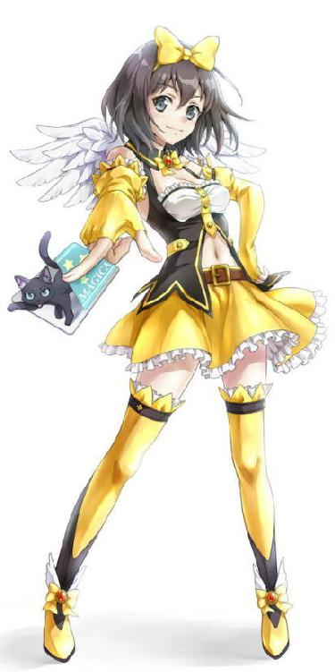

| まどうっ！魔法少女になるんです？ | |
| 神代創 | |
| FICTORY (2016) | |
まどうっ！魔法少女になるんです？
表紙イラスト：すみっこ大社
「赤、加賀大地君」
名前が呼ばれ、オレは足を踏み出した。
一段と大きくなった歓声に包み込まれる。いつもながら気持ちいい。軽く手を掲げて声援に応える。
「青、下条謙君」
向かい側から青サイドに相応しく真っ青な顔で下条が五角形の試合場に上がってきた。なんせ小学五年から大会二連覇、中学に上がった今大会もここまで五戦全部ＫＯのオレと準決勝で当たるんだから同情してやりたくもなる。決勝なら準優勝になれるが、おまえの腕なら三位決定戦も難しいだろ。まあ、準決勝まで来られただけ褒めてやる。
審判に一礼してマジカを渡す。オレのマジカは二連覇の副賞でもらった黒猫の描かれたものだ。
コピー機のようなチャージャーにマジカを通すと、さっきまでダレていた黒猫が尻尾をピンと立てて出てきた。
「位置に」
審判の合図で中央付近の開始ラインに立つ。
視線を動かして五つの属性要素の位置を確認する。木火土金水が時計回りに配置されるオーソドックスなパターン。火がオレの右、金が左。背後には土。下条が得意なのは確か木と水か。ちょうど下条の左右だ。よかったな、ちょっとは有利じゃないか。
「『魔界海賊バンディート』のマネかよ。目立ちやがって。自分だけ特別だと勘違いしてんじゃねぇ！」
下条がオレの格好を指さして吠えた。負け犬の遠吠えってヤツ？
そう。オレは白い道着にペイントして好きなアニメキャラっぽくしてる。少しだけど顔にもメイクを入れて、髪もビシッと立たせて決めた。
こっちはルールの中で出来ることをやってるだけだ。審判もなにも言わないじゃないか。目立たなきゃ負けだろ。そう思ったが、口に出しては煽ってやる。
「魔界王子は特別なのさ！」
案の定、下条は顔をひきつらせた。
「用意」
審判の合図で、オレはマジカを左手の人差し指と中指にはさみ、掲げた右手にビシッと滑らせた。
「オレの右腕に魔界顕現！」
マジカが消え、同時に軽くしびれるような感覚が体を駆け巡る。同時にマジカも消えた。この試合で使う魔力がマジカから体に注ぎ込まれたわけだ。
気分は万能。もちろん錯覚だ。このペンタゴンを出ればおしまい。しかし、場内にいる限り無敵！
「始めっ！」
審判の合図でオレは左に軽くステップした。
下条は勝負を焦って木のエレメントにふれた。同時に叫ぶ。
「突き出せ！」
......ダサい。もうちょっと魔法っぽく言えないのか？
木のエレメントから枝が伸びてきた。真っ直ぐにオレに向かってくる。
「業火の絨緞！」
木は火を生む。これを相生と呼ぶ。相性がよいだけに力加減を間違えなければ勝てる。
火のエレメントから木のエレメントに向かって炎が床を這う。オーブンにあぶられた木の枝は細い部分が一瞬で炭と化し、太い部分も伸びる端から焼けていく。
下条は燃え盛る木の枝を操ってオレを薙ぎ払おうとした。
「甘いっ！ 斬殺の巨斧!!」
イメージどおりに巨大な斧が出現し、木をぶった切った。さらに下条に向かって振り下ろされる。
金は木に克つ。斧が木を斬るように木は金の前にはなす術がない。
悲鳴を上げた下条が転がって逃げる。直後に斧がペンタゴンの床に突き刺さった。
「あーっ、惜しいっ！」
当たっても選手の体を包む結界のおかげで真っ二つにはならないが、肋骨くらいは折れたはず。それくらいはヤツも覚悟してると思ってたが、あの悲鳴を聞くとそうじゃなかったらしい。がっかりだ。
ふふんと余裕の笑いを浮かべてやると、下条はオレをにらんできた。単純なヤツだ。熱くなってやがる。
大げさに両手を掲げ、下条はオレに向かってなにかを投げるように腕を振る。
水のエレメントからオレに向かって走ってくるのは氷の槍か？
が、オレはニヤリと唇を吊り上げた。それも読んでたよ。これで終わりだ。
「食らえ、灼熱の煉獄！」
残った火の魔力をすべて注ぎ込み、炎を放つ。
氷のエレメントに炎の弾が命中した瞬間、爆発したように膨らんだ。
水は火に克つ。ただし、力が同じ程度なら、だ。しかし、火の力の方が強ければ火は水に克つことも可能だ。これを相侮という。基本だから覚えとけ。
真横からの水蒸気爆発を食らって、下条の体は吹っ飛ばされて、ペンタゴンのラインを越えた。
ＫＯだ。これでジ・エンド。
「魔界で先に待っていな！」
決めゼリフを叩きつけ、ビシッとポーズを決める。
ワッと歓声が上がる中、審判が手を掲げた。
「勝者、赤！」
言わなくたってわかってるってと、ニヤッと笑う。
軽く勝って次は決勝戦。それに勝ったら、あいつに告白る。三連覇したオレなら拒否られることもないはず。絶対大丈夫だ。そう言い聞かせて、これまで半年の間、あいつを見ないできっつい練習を毎日こなしてきたんだ。きっと大丈夫だ。
次の相手はどうせオレにいつも負けてる菅野か能見だろ。一分もあれば勝てる。そしたらソッコーで観客席に駆け上がっていって、そこでオレを応援してるあいつにトロフィーを差し出してハッピーエンドだ。うん、完璧だ。大丈夫だよな、多分。
そんなことを考えながら決勝戦の舞台に駆け上がる。
「......ええっ？」
対戦相手の顔を見て絶句した。
「あ、ありえねぇ......」
「大ちゃん、よろしく！」
告白る予定の相手が目の前で陽気に手を振っていた。チビでちょっところっとして犬みたいに人なつこい目でオレを見ていたあいつが、胴着を着て、黒い帯を締めて......。
なんで、そこにいるんだ？ 観客席でオレに向かって声援を送ってるはずだろ？
「青、真藤吟花君」
審判が相手の名前を呼んだ。
「......な、なんで？ なんで？ なんで？」
うわごとのように繰り返す。
「始め！」
主審の合図なんて全然耳に入ってこなかった......。
１
「なんでだよーっ!?」
教室に悲痛な叫びが響いた。
ガタンと音を立てて立ち上がったのは、窓際の席に座っていた男子生徒だ。身長は一七〇あり、体格は普通。特に目立ったところはない。
「香坂大地、私の授業で寝ぼけて叫ぶとはいい度胸だな」
冷たい声が大地の耳に突き刺さった。担任で英語教師の小川愛美だ。面倒だというわかりやすい理由で校内では真っ赤なトレーニングウェアを着ているという変わり種。それでいて美人で生徒教師問わずファンも多い。
「......え？」
大地はゆっくりと周囲を見回した。クラス全員の視線が集中しているのを見て、ようやく状況が把握できた。
「......えーっと、叫びました？」
「思いっきりな。なにが『なんでだよー』なのか訊きたいな」
「それはプライバシーにかかわることなので......」
「授業の妨害をしておいてプライバシーもあるか。罰として昼休み、職員室に来るように。座れ。寝るな」
小川はそう言うと、授業に戻った。
ププッと小さい笑いが聞こえた。
大地が笑い声の方を見ると、佐原紗那が大地を見ていた。視線が合って、気まずくて大地の方から目をそらしてしまった。
なんで、今頃になってあんな夢を見たんだ？
大地は首をひねった。黒歴史として封印したのはもう三年も前だ。この高校の誰も大地が魔道をやっていたなど知らないのだ。いや、その前に魔道なんてマイナーなもの、誰も知らないはずだ。バレるはずもない。
いや、原因はわかっていた。今朝のホームルームが始まる前のことだ。
「魔法少女に、わたしは、なるっ！」
いきなり聞こえた決然たる声に、大地は直立不動で硬直してしまった。魔法という言葉に反応してしまったのだ。
ギイギイ音がしそうなほどのぎこちなさで振り向くと、佐原紗那が数人のクラスメイトに向かって左手を腰に当て、右手を突き上げて高らかに宣言していた。
身長は女子の中では普通の一六〇。茶色がかった髪は肩にふれる長さ。細すぎないし、バネみたいな元気が取り柄。男子だけじゃなくて、女子にも人気があって、入学して全員が最初に名前と顔を覚えたのは紗那だろう。大地にしても同じだ。しかし、声をかけるとかそんなこともなく、遠目でながめているだけだった。
その紗那が右手に持っているのは一〇センチくらいのフィギュア。赤い髪に長い足をきわどい服が包んでいる。
アニメかなにかの話だろうと、大地はホッと一息ついて席に着いた。その後も話は続いている。
「ええ～？ 海賊じゃなくて？」
「じゃないの！ 今は魔法少女の時代なのっ!!」
女子の突っ込みにムキになって紗那は言い返す。
「魔法少女も古くね？」
「古くないの！ これから復活するから!!」
「お子様向けだしねー」
そう言って、周りの女子は紗那の持つフィギュアを一瞥。
「そんなことないよ！ シルバーブルームさんを見たら女でもほれぼれするから!!」
フィギュアを突き出し、紗那はポーズをつける。どうやら、シルバーブルームというのが、そのキャラの名前らしい。
「とにかく、わたしは魔法少女になるの！ だから部を作る!! さあ、みんなもレッツマジカるふぁいっ！」
興奮してまくし立てる紗那に女子は思いっきり引いている。
「他の部活があるしぃ」
「悪いけど、もう部活入ってるからさ」
「そういわないで魔道やろうよ！」
魔道――。
紗那が口にした言葉に大地は思わずブッと噴き出した。視線が集まる。慌ててなんでもないように装いながらも、大地の心臓はバクバクいっていた。三年も魔道という言葉も聞かない生活を送っていたのに、なんで今になって!?
そして、夢も見て、叫んで、職員室に呼び出し......という流れである。仕方なく、学食で昼食を終えた大地は職員室のドアを開けた。
愛美が出前のラーメンをすすりながら、不機嫌な顔で振り返った。豚骨こってり系の強烈なニンニク臭が漂っている。
「遅い」
「昼飯食べてましたから」
「こっちも昼時だ。しかも、二〇分遅れでね」
「それで、なにをしたらいいんですか？」
「なんの話だ？」
「授業中に居眠りした罰ですよね？」
「ああ、そんなことはどうでもいい」
愛美は机に肘を突いて面倒そうに言う。
「同じクラスの佐原を知ってるな？ 話をしてこい」
それで用事はすべてというように、愛美はマイ箸を箸箱にしまって机に向き直った。
「は？」
大地はあんぐりと口を開ける。
「あ、あのですね、もう少しバカでもわかるように説明する気はありませんか？」
そう言いながら、大地は鼓動が速くなるのを感じていた。イヤな予感だけでなく、佐原の名前が出たことに動揺してしまった。
「佐原が魔道部を作りたいから顧問をお願いしますと言ってきた」
確かに部を作るというのは、今朝、宣言していた。
「なんでキミかという説明は不要だな？」
「......な、なんでですか？」
大地はゴクリとツバを飲み込んだ。
「往生際が悪いな。キミのことは調べがついてるんだぞ」
刑事のようなことを言ってニイッと笑った愛美はピラッと紙を一枚、大地の鼻先に突きつけた。
「――んなっ、なああああああっ!?」
途端、大地は奇声を上げたかと思うと、両手で目を覆ってしゃがみ込む。
「これは夢だ現実じゃない誰もオレのことなんか覚えてない......」
まるで念仏のようにつぶやき続ける大地を見て、愛美はどこか楽しそうに口元を吊り上げた。
「ふむ、これは根が深そうだな」
「なななななんでそんなもんをぉぉっ!?」
いきなり起き上がった大地が手を伸ばして写真を奪おうとしたが、愛美は電光石火のスピードで引っ込める。
その手にあったのはプリントアウトした写真だ。三年前の魔道の試合で派手な道着を着て決めポーズをとり、決めゼリフを発しているシーンである。
「な、なんで、それを......」
真っ青な顔をした大地はゼイゼイと肩で息をしていた。
「ちょっとネットを歩いてたら見つけてね。香坂はお母様の旧姓だろう？ 父方が加賀だって気づいたのだ」
「こっ、個人情報を勝手に探るなあっ！」
今度は顔を真っ赤にして叫ぶ大地である。
「なるほどな。姓も変えて、すべて捨て去って第二の人生というわけか」
愛美は写真をひらひらさせた。
「この写真を校内ネットに流すと面白いかな」
「きょっ、教師のくせに生徒を脅迫するのか!?」
「人聞きが悪いな。ちょっと頼んでるだけではないか」
愛美はイスにもたれかかって胸を張った。形のいい胸が自己主張するが、今の大地には猫に小判。
「そっ、それのどこが頼んで――」
声を上げようとした大地だが、周囲から教師たちの目が注がれているのに気づいて口をつぐんだ。大きく深呼吸すると、尋ねる。
「......それで、佐原さんに魔道の基本を教えればいいんですか？」
「いや、諦めさせてくれ」
「え？」
ポカンと担任を見る大地。
「それが無理なら、キミが顧問と監督をやってくれ」
「顧問って教師がするもんじゃ？」
「私にはわからん。だからキミがやれ」
投げ出すように言われ、ようやく大地にも話が見えてきた。つまり、自分は面倒だからやりたくない。とはいえ、担任する生徒に頼られたから無下には断れない。そこで大地に話を押しつけ、諦めさせようという魂胆だ。部にならなければ問題なし。部になったら大地が面倒を見る。究極の責任放棄である。
「心配するな。名目上は私が顧問だ。キミはひたすらマイナスの努力をするだけでいい。よろしくな」
「名目じゃなくて実質もやってくださいよ。じゃなくて、いつの間にオレが引き受ける展開になってるんですか!?」
「私の召還に応じて職員室に足を踏み入れた瞬間からだ」
「召喚魔法なんてありません」
ムッとして答えた大地に、愛美は箸箱でポンと膝を叩いた。
「それだ。私には魔道なんていうマイナーなものに興味もなければ知識もない。たいしておもしろそうでもないしな。ああ、そうだ。ちょっと魔法ってものを使ってみてくれ。ここにある冷めたコーヒーを暖めるとか」
「できるわけないでしょ」
カップを示す愛美に大地はぶっきらぼうに言い返す。
「昔使ってたんじゃないのか？」と愛美は写真をピラピラさせる。
「それは試合での話で、日常じゃ使えません」
「なんだ、つまらん」
愛美は箸箱を机に放り投げた。大地がムッとした顔になると、愛美は口元を吊り上げる。が、大地はそれには気づく余裕などなく、反射的に言い返した。
「普通にポンって魔法使えたら問題でしょ。一応、銃刀魔法規制法ってのがあるんです。街中を日本刀持って出歩いたら捕まるでしょうが。それと一緒です」
「それじゃ使えないのにどうやって試合するんだ？」
「試合時に魔力を充填してもらうんです。基本中の基本ですけどね、魔法ってのは誰でも使えるんですよ。ただ、魔法の力の元になる魔力を取り込む能力の優劣があるだけで」
「取り込む能力？」
「例えば、誰でも走れますよね？ でも、一〇〇メートルを一〇秒以下で走れるのはほんの数人です。それが生粋の魔法使い。日本にも十数人くらいいて、登録されてます。それ以外の人が一〇秒で走るには自転車に乗ったり、バイクに乗ったりしないとダメでしょ。それが魔力の充填。これでたいていの人が魔法を使えるようになったんです。一時的ですけどね。とにかく、魔力を充填出来るようになって、魔道っていう武道が成立したわけです」
「つまり、弾の入ってない拳銃に弾を入れるのが充填というわけか。で、おまえは今充填されてないから、弾なしと」
「ど、どこ見て言ってんですか！」
愛美の視線がちらっと自分の股間に向けられたのに気づいて、大地は股間を隠した。
「素晴らしい知識だ。やっぱりキミに任せて正解だったな」
しまったはめられたと気づいても後の祭り。せめてもの反撃とばかり、大地は言い返す。
「可愛い生徒のために微力を振り絞ろうって気はないんですか？」
「これっぽっちもないな」
あっさりと答える愛美である。大地も紗那も可哀想な生徒である。
「今、同情したろう？」
ニヤリと笑って愛美は大地の胸をつつく。
「......ま、まあ、うっかり」
「では、頼んだぞ、佐原に気のある加賀君」
「香坂です。じゃなくて、気がある？」
大地は愛美をガン見した。
「図星だろ？ それじゃ、喜んで引き受けてくれ。ふたりが上手くいったらキューピットとして崇めてもらってもいいぞ」
「いやいやいや、オレは引き受けるなんて一言も――」
大地の抗議は愛美の吐いた強烈なニンニク臭にあえなくかき消された。
◇
放課後になるまで、大地は落ち着かない時間を過ごした。
どうすれば自分の過去にふれないで話をできるか。それ以前にどうやって佐原に話をするか。女の子と話をしたことなど人生でほとんどないのだった。だいたい、吟花に告白するのだって三連覇で勢いをつけてやるつもりだったのに、結果は......。
どうしようと悩んでいるうちに六時間目は終わっていた。
大地はイスに座ったまま、友人たちと談笑している紗那を見て、どうやって話しかけようかとタイミングを計り続けた。
ふと気づくと、小動物みたいな女の子が大地をじーっと見つめ返していた。その小ささに、ふわふわしたソバージュの明るい髪、目の大きなところなんかは、まるでアニメキャラである。
確か、水樹萌々とかいったっけと大地は思い出す。
萌々が子供に『めっ！』と言って怒るような顔で大地を見た。
「な、なに？」
「獣の目でさなちーを見るのは禁止なのです！」
萌々が大地の目をふさごうと両手を伸ばす。
「だ、誰が獣だよ!?」
「肉欲に血走った獣そのものなのです」
「この澄み切った瞳のどこに、そんな欲望が――」
「もえもえ、なにしてんの？」
大地が真剣な顔で言い返した途端、声が飛んできた。萌々は大地をするっとかわして紗那に駆け寄った。
「あ、さなちー。色魔がいやらしい目でさなちーを視姦していたのです」
「お、おい！」
慌てて声を上げた大地に、紗那の警戒の目が注がれる。
「じゃなくて、小川先生から話をしてこいって言わ――」
「あっ！ 魔道のこと!?」
途端に紗那の目が輝いた。サイズも当社比で二割増しに膨らむ。そこがまたかわいい。
「小川先生から聞いたんです、魔道に詳しい人を知ってるって！ 香坂君、やってるんですか？」
紗那は大地に向かってぐんっと伸び上がって期待に目を輝かせて訊く。が、大地はつい反射的に叫んでしまった。
「ち、違う！」
その途端、紗那がしぼんだ。人間からぷしゅうと空気が抜けたとしたらこうか。しょんぼりと顔全体に大書してある紗那を見て、大地は慌てて付け加えた。
「い、いや、選手じゃないけど、少しは知ってるから知りたいことがあれば教えてやってくれって言われたんだ。なにを知りたいんだ？」
「え？ 教えてくれるの？」
紗那の顔からまばゆい光が放たれた。
「あ、ああ......、担任から頼まれたし」と、大地は心にもないことを言い、続けた。
「ここじゃなんだから、どこか他の場所で」
興味津々でこっちを見ている紗那のクラスメイトが気になって、大地はさっさとここから離れたかった。それに関係者は少ない方が大地の過去が明らかになる危険が減る。
「だったら、学食にしよ！ もえもえ行く？」
紗那が萌々に声をかける。
「も、もえもえ？」
大地の脳裏に、隣りのクラスにいるアニメオタク三人組が野太い声を張り上げてる光景が浮かんだ。
「もえもえなのです。でも、他の人はその名前で呼んではダメなのです。さなちー専用なのですよ」
萌々はそう言うと、にこにこしながら不穏なことを付け足す。
「さなちーが襲われないか見守るのです」
「だから、ちょっと待......」
だが、ぽやややんと浮かべられた笑顔を見ると、反論はのれんに腕押しぬかに釘な感じしかしない。大地はあきらめて一階の学食へと歩き出した。
２
「やっと話が聞けるね！」
紗那はそわそわと落ち着きなく、砂糖たっぷりのカフェオレの入ったカップを持ってテーブルについた。萌々はミルクティーだ。
向かい側に座った大地はコーヒーを一口飲んで尋ねた。
「......で、どうして、その、魔道なんかに興味を持ったんだ？」
「テレビで見たの、試合！」
紗那は勢い込んで答える。
「放送なんかしてたのか......」
意外そうな顔で大地はつぶやいた。
「わたしもそんなこと知らなくって、もえもえと一緒にこの間の土曜日に偶然見て凄いって思ったの！ 魔法なんてホントにあるって思ってもなかったし。凄いカッコイイですよ！ 魔法少女そのまんまなの!!」
「魔道少女の方が正しいと思うのです」
萌々が静かに突っ込んだが、紗那は主張を変えない。
「いいの、魔法少女で。昔から憧れなんだから」
「『魔界海賊バンディート』なのですね」
そのタイトルが出た瞬間、大地はむせかえった。そのままテーブルに額を押しつけてぶつぶつとつぶやき始める。
紗那は大地の様子に気づかないまま、萌々としゃべり続けた。
「そう！ 主役のバン様よりも、魔法少女のディートちゃんがかわいかったんだよね」
『魔界海賊バンディート』というのは五年前に大ヒットしたアニメだ。魔界から追放された王子バンが戻るために悪人の魂を集め、そのついでに毎回かわいい女の子を助けるという話だ。相棒のディートの胸と太股のスリットがきわどいコスチュームがオタクにも受けて、視聴率は好調。四クールも放映されたのだ。
大地がテーブルに突っ伏してつぶやき続けている間も、紗那は興奮してしゃべりまくっていた。
「炎とか最初、特撮かと思ったくらい凄い迫力だったし、シルバーブルームってクイーンがスタイルよくって、あんな人が理想なんです、わたし！」
いつの間にか話題はバンディートから試合になっている。
「あれ？ 香坂クン？」
そこでようやく大地の様子に気づいた紗那が怪訝そうに声をかける。
テーブルに突っ伏した大地を不安そうにのぞき込む紗那である。
「も、問題ない！」
大地は勢いよく顔を上げると、なにごともなかったように言い放った。額にはテーブルの跡が赤く残っているが。
「でもな、部にするなら最低四人必要だぞ。集められるのか？」
「もえもえと香坂クンで三人だから、残りひとりだよね！」
ビックリしながらも紗那はにっこりと笑う。
「先に言っとくけど、オレは部員にはならないから」
「えー？ どうして？ やろうよ！」
紗那に腕をつかまれて誘われ、大地の心は揺れまくった。が――。
「オレは顧問代理だ。あるいは監督」
「うーん、後ふたりかぁ。でも、なんとかなるよ！」
「他に誰か目当てがいるのか？」
「いないけど、悲観的なのは嫌いだから。前向き前向き！」
紗那はニコニコしてふたつの握り拳を胸の前で振った。
「それと、部にするための規定があるみたいで、まったく新規で、これまでもなかった部だと活動実績が必要だってさ。例えば公式な試合に勝つとか」
「......ハードル高いんだね」
紗那は水のなくなった一輪挿しのようにしょぼんとした。
諦めてもらうなら、ここで攻めるしかないと、大地は心を鬼にした。
「ちょっといいか？ 魔道の試合は、ああ見えて結構痛いんだ。怪我人が出る時もあるし、骨折もある。」
「......そうなの？」
「そういうもんなんだ。だから、覚悟がなかったらやめた方がいいと思う」
大地は腕を組んで権威あるように重々しくうなずいた。
これだけ脅したら、やりたい気持ちはなくなるだろう。罪悪感と安堵と残念な気持ちがないまぜになった複雑な感情が大地にわき上がる。
紗那は意を決したように大きくうなずいた。
「やっぱり、一回生で見ないとダメだよね！」
「え？」
意外な反応に大地はポカンとした。
「本物の試合を見ないとわからないよね！」
紗那は目を輝かせて大地に身を乗り出した。
「い、いや、でも......。だいたい、そんなに頻繁に試合やってる？」
あたふたする大地に、萌々が至極真っ当な提案をした。
「図書室のパソコンで調べればいいと思うのです」
「ようし、行っくぞー！」
紗那はさっそうと立ち上がって小走りに歩き出した。
「さなちーはこうなったら止まらないのです。責任取るのですよ」
萌々はポカンと見送った大地を促すようにそう言った。
紗那の前向きパワーに圧されていた大地だが、この時まではまだ余裕があった。試合なんてそうそうあるもんじゃない。もう一押しだ。これで諦めるだろう。
図書室にはまだ結構な数の生徒がいた。八台あるパソコンも完全に埋まっている。
「どうするですか？」と萌々。
「空くのを待つしかないだろ」
「勉強の邪魔するわけにはいかないよね。ちょっと検索するだけなんだけど」
まるで誰かが聞いてくれないかと期待しているような紗那のつぶやき。
「なにか調べたい？」
不意に横から声がかかって、大地は振り返った。
すぐ近くのパソコンに向かっていたのは、萌々より小さいショートカットの女の子だ。中学生、いや、最近は小学生でもこれくらいの子はいる。黒縁メガネをかけて、ボーイッシュな感じの、なかなかきりっとした顔立ちだ。
「実は魔法少女を調べたいんです！」
「......変わったものを調べてるね」
紗那が言うと、ショートカットの子はわずかに目を大きくした。驚いたのか、呆れたのかはわからない。表情が大きく出ないタイプなのだろう。
「そうではなくて、魔道大会なのです」
萌々がすかさず訂正。
「調べようか？」
「いいの!?」
紗那が弾んだ声を上げる。
「ボクも勉強してたわけじゃないから」
そう言うメガネの女の子のパソコン画面には検索していた内容が見て取れた。古武道とか空手とか格闘技ばかりだ。この体格で格闘技をやるのだろうか。
女の子は慣れた手つきでキーボードに指を走らせた。すぐに検索結果が現れる。
「わ、凄い！ 魔法みたい!!」
紗那は手を叩きそうな勢いで感心した。
「自分がしたいって言ってることを否定するようなことを......」
呆れ声を上げた大地はずらりと並んだ検索結果を見て、指さした。
「これだな」
マウスを持った女の子が素早くクリック。東日本魔道連盟のホームページに飛んだ。
「なんだ、これ？」
出てきたページを見て、大地はバカみたいに口を開ける。
今、画面に大きく表示されているのは、小学生くらいに見える目の大きな女の子が小さなクロネコとじゃれてるアニメ調のイラストだ。ページの名前は確かに東日本魔道連盟。とどめとばかりに――。
「レッツ・マジカるファイっ！」
静かな図書室に女の子の声が響き渡った。
もの凄く気まずい雰囲気が図書室に垂れ込める。大地たちをにらみつける図書委員と勉強中の学生多数。
「ご、ごめんなさいっ！」
慌てて紗那が声を上げ、周囲から一斉に『シーッ！』の攻撃を受けて慌てて口をつぐんだ。
「ゴメンなさい。音が出るなんて思わなかった」
そう言いながら、女の子は急いでパソコンの音量を下げた。
「なんなんだ、これ？」
大地はまじまじとホームページを見た。関係を断ち切った三年間でなにか異変があったのかというほどの変わりようだ。
「かわいいのです」
無邪気に言う萌々。
「クロネコがいいよね！」
紗那ははしゃいでうなずくと、尋ねた。
「大会がどこであるか調べられる？」
メガネの子はすぐに目当てのページを探し当てた。今年の予定がずらっと並んでいる。
大地は目を疑った。並びすぎだ。毎月一回どころか毎週一回どこかで開かれている。三年前は年二回しかなかったのに。
「次の日曜日にあります」
「こんなすぐにあるなんて、凄いラッキーですよ！ しかも、近くの体育館!!」
紗那がはしゃいだささやき声を上げる。
「これ、なんです？」
元のページに戻って説明を読んでいた女の子が大地に尋ねた。
「え？ ああ、魔道の大会。魔道ってのは魔法を使った武道って感じ」
「そんなのがあるんですか......。みなさんやってるんですか？」
メガネの子は紗那と萌々を見た。大地は紗那を指さす。
「いや、こっちの佐原が部を作ろうって画策してるとこで、まだなにも決まってないんだけど」
「まずはこの大会に行ってみようって決めました！」
紗那が拳を握って力強く言う。
「それじゃ、ありがとうな」
大地は女の子に礼を言って、雰囲気の悪くなった図書室から退散しようとふたりを急かした。
そこに思いがけなく呼び止める声。
「あの......ボクも行っていいですか？」
関心なさそうに見えたメガネの女の子だったが、紗那はニンジンを見つけたウサギのように飛びついた。
「もちろん！」
弾んだ声を上げた途端、二度目の『シーッ』攻撃を食らった。
「......いいよね？」
期待に満ち満ちたきらめく目の紗那に訊かれ、大地はついうなずいてしまった。
「ま、まあ、いいけど......」
いつの間にか自分が引率する流れになっているのに気づき、大地は愕然とした。
「あ、ボク、１｜Ｅの小金井慧です」
女の子は黒縁メガネのフレームを指でちょっと持ち上げると、自己紹介した。
「三人目なのですね」
なにげなくつぶやいたもえもえの言葉に、大地は頭を抱えた。
なんでこうなった!? 早すぎだ！ 話し始めて三〇分しかたってないってのに、あとひとりで部活申請の第一段階クリアじゃないか。いや、まだ入るって決まったわけじゃない。勝負はついてないぞ。ここから諦めさせるんだ！
マイナス思考に燃える大地である。
「どうしたの、香坂クン？」
大地が頭を抱えてうずくまっているのに気づいて、紗那が怪訝そうに声をかけた。
「いや、これからだ！」
「そうですよね！」
双方の思惑は全くの逆なのだが、大地と紗那は燃える目をして拳を握りしめた。
３
日曜日――。
気が進まないながらも大地が約束の時間の一〇分前に会場前に着くと、すでに紗那が待っていた。萌々も慧もまだ姿が見えない。挙動不審気味にきょろきょろと周囲を見回し、紗那に歩み寄る。
スリムのジーンズに真っ白のシャツ、下にはナチュラルグリーンのＴシャツというかなりラフな格好で、結構スタイルがいい。あんまりオシャレに気を使ってないようでいて、ジーンズにワンポイントでペイズリー模様の刺繍が入ってるのが女の子っぽい。
「は、早いね」
大地が声をかけると、怪訝そうな声が返ってきた。
「......どなたですか？」
警戒して逃げる気満々の紗那である。
「香坂だよ」
「えーっ、香坂クン？ どうしたの、そのグラサン。怪しいよ」
「いや、ちょっとな」
大地は真っ黒なサングラスをしていた。ここに来る途中で一〇〇円ショップで買った安物である。昔の知り合いがいる可能性を考えて、一応変装したのだ。
「それじゃ改めて、おはよう！ なんだか興奮しちゃって、二〇分前に着いちゃった」
「三〇分も早く来たの？ 気合い入りすぎだな」
「もう、魔道の試合が直に見られるって思うと興奮して寝られなかったから！」
「って、まさか一睡もしてないの？」
「三時間は寝たよ。大丈夫。試合見ながら寝るなんてもったいないことはしないから！」
紗那は目を輝かせて答える。
これが普通の部活なら、こんな頼もしい新入部員はいない。しかし、大地は部活をするどころか、つぶさなければならない。
と、そこで大地は愕然とした。
女の子と待ち合わせなんて、人生初イベントだったのだ。とはいえ、デートとかそう言うのではないし、相手もそんなことは考えていないだろうが。
大地は横に並んだ紗那をチラッと見た。襟ぐりが意外に広く開いていて、胸元に目が吸い寄せられた。
細い体だが、意外と大きい。それとも、寄せて上げるとかいう魔法か、などと不謹慎なことを考える大地。
と、不意に紗那が顔を上げた。なにか言わなければと大地は慌てて話題を探す。
「......ええっと、水樹さんとは長いの？」
とっさに出てきたのがそれかと、大地は己の経験値の少なさを呪ったが、紗那は怪訝に思わず真剣に答える。
「幼稚園からずうっと一緒なのよね。血液型も星座も相性悪いって言われたんだけど、おかしいよねえ」
「オレは血液型性格診断なんて信じてないから、別におかしいと思わないけど」
「香坂クンは血液型はなに？」
信じてないっていってんのに訊くのかよ！
大地が突っ込もうとした時、慧の小さな姿が駆けてきた。
足のラインがくっきり見えるスリムなパンツ。足がきれいだ。ジャケットはちょっとミリタリー系。バッグは大きなショルダー。いや、別に大きなサイズというわけではなくて、慧が小さいから大きく見えるという魔法か。それにしても、黒縁のセルフレームのメガネといい、中学生の男の子といっても違和感がない。
「ボク、遅れましたか？」
息を少し弾ませて第一声。
「いや、オレたちが早かっただけだ。まだ時間になってない」
「よかった......」
大地の答えに慧は大きく息を吐き出した。
「やっぱりもえもえが一番遅いね」
紗那は予想どおりだとうなずいてる。
ワンピース姿の萌々がやってきたのはさらに一〇分過ぎた頃。
「ごめんなさいなのです。あのですね、急いで家を出たのです。でも、宇宙人さんが道を尋ねて来られたので、教えて上げたのですけど、あたしも方向音痴で迷っちゃったのです」
「なんだ、それ？」
大地は思わず突っ込んだが、紗那は平然と言い返した。
「で、どこまで迷っていったのよ？」
「ええっと、ええっと......」
「ダメじゃない。そこまで考えとかないと」
「ダメ出しされたのです」
萌々はてへっと舌を出し、大地にほわほわと近寄ってきた。
制服よりもフワッとした格好のせいか、メリハリのある体型が強調されている。胸はＥカップくらいはありそう。ちなみに紗那はＣか、もう少し上か。慧は......見なかったことにしよう――などと失礼なことを考える大地である。
「大ちゃん、遅れましたのです。早く来るなんて、とおっても偉いのです」
「だ、大ちゃん!?」
その呼び名に大地の鼓動がドクンと跳ね上がった。一瞬にして視界が真っ暗になり、めまいが起こる。
その名で呼ばれるのは母親を別にすれば三年ぶり。しかも、消し去ろうとしても消しきれない悲惨な思い出だった。
「はぁい。そうなのです。大地ちゃんでは呼びづらいのです」
「......『ちゃん』つけなけりゃいけないのか!?」
くらくらする視界を首を振って立て直し、大地はなんとか言い返す。
「どうしてなのですか？」
萌々は小首を傾げて訊く。
「い、いや、オレって、水樹さんとつきあってるわけじゃないよな？」
「はい、そうなのです。でも、大ちゃんは大ちゃんなのですよ」
テコでも動かないという断定。
「ごめん、香坂クン！ もえもえはこういう子なんで。悪気はないから、気を悪くしないで！」
紗那が慌てて割り込んできた。
「いや、いいよ......」
大地は肩を落として会場へとよろめき歩き出した。この呼び名がイヤな理由など死んでも説明するわけにはいかなかった。
◇
「ふわあ......大きな会場なのです」
会場の入り口を見上げた萌々は息を呑んだ。隣りでは紗那が圧倒されてうなずく。
「テレビで全国大会見たんなら、こんなもんじゃなかったろ？ 魔道やるなら武道館目指すんだろ？」
呆れた声で大地が突っ込む。全国大会は武道館だ。ここはその半分もない市民体育館。
「テレビだと会場の広さとかわかんないから。全国大会なんて無理ですよ」
「目標は高く持たないと。それがダメなら部を作るのは今のうちに諦めた方がいい」
「......そ、そうだよね！ やるって決めたからにはやらなきゃ!!」
紗那は拳を握りしめて力いっぱい言い切った。
これくらいで諦めるとは大地も思っていなかったが、逆に決意が固まってしまったようだ。
人数分のチケットを買い、会場に足を踏み入れた瞬間、大地は立ちすくんだ。懐かしさとか、思い出したくない過去とか、最後の試合でのショックとか、そんなものが押し寄せてくるかと覚悟していたが、そんなものはなにひとつなかった。あるのは強烈な違和感だけ。なにかこう、会場を間違えたような......。
簡単にいえばこうだ。
空手の試合に来たつもりが、コミケかワンフェスに迷い込んでしまった。
大地は思わず買ったばかりのチケットをまじまじと見つめた。確かに、東日本魔道連盟主催の地方大会となっている。ただ、ここにもホームページの女の子とクロネコのイラストがドンッと自己主張していた。
そして、大地はもう一度会場を見る。
昔にはなかったのが物販コーナーだ。なんといっても、売る物は選手が載ったパンフくらいしかなく、そんなものチケット売り場に置いておけばよかった。ところが今は会場に入ったすぐに幅五メートルもある広い物販コーナーがあり、壁にはポスター、カレンダー、Ｔシャツが貼ってあり、テーブルにはパンフレット、携帯ストラップなんかの小物、フィギュア......。
「あーっ、シルバーブルームさんのフィギュアだ！」
いきなり紗那が歓声を上げて駆け出した。
三〇センチくらいあるでかいフィギュア。これだけケースに収められてある。展示用の非売品なのか、値札はない。
アニメのキャラか？
大地はそう思った。それくらいプロポーションがよくて、しかも、コスチュームは肌の露出がハンパない。ロングヘアも真っ赤だ。顔がわからないように頭から目の下までマスクで隠している。
「今のクイーンさんなのです」
「公式サイトにもありましたね」
萌々と慧がひょいっと大地の想像を覆した。
「クイーンってなに？」
「大ちゃん、ホントに魔道に詳しいのですか？」
萌々が疑わしげな顔をする。
「オレが知ってるのは三年前までだから」
「なるほどです。途中で止めたヘタレなのですね」
萌々はほわんとした声で、大地の心にグサリと遠慮なくナイフを突き立てた。
「い、行こう」
動揺を抑え、大地はナイフが刺さった胸を押さえて二階に向かおうとした。そこに紗那が声をかける。
「あれ？ こっちじゃないの？」
「二階の方がよく見える」
「そうなんだ！」
紗那は納得して大地を追っていった。
本当のところは一階では魔道連盟の関係者が多いため、大地の知り合いがいるかもしれない。それを避けただけなのだが。
上がった途端、異様な光景が目に跳び込んでくる。
二階席の中で試合場となるペンタゴンが最もよく見える一角に団体が陣取っている。それも男ばかり。ハチマキをしたり、横断幕や旗を持ったり......。
「なんだ、これ？ なんかのアイドルのコンサートか？」
違和感がさらに大きくなるのを感じながら、大地は集団から距離を取り、手前から三列目の席に座った。
後からやってきた紗那は真っ直ぐに最前列に行くと、手すりに両手をそろえて身を乗り出した。犬みたいなヤツだなと大地は思う。
萌々は大地と紗那の間を隔てる壁のように座った。慧は大地の横にちょこんと座る。
会場ではすでに胴着を着た選手がひとりで技を披露していた。
「あれは演武ですか？」
デジカメを構えた慧が大地に尋ねた。デジカメはボディのわりにレンズが結構でかい。ミラーレス一眼というヤツだ。
「そんな言葉を知ってるってことは、格闘技やってたのか？」
「そうじゃ......ありません。ちょっと知ってるだけで......」
慧は言葉を濁して、逃げるようにカメラに戻ってしまった。
「ねえねえ、大ちゃん。えんぶってなんなのですか？」
萌々がぽわんと訊いてきた。大地は思い出すようにゆっくりしゃべる。
「空手とか中国拳法、薙刀とか杖なんて古武道でもあるんだけど、決まった型を正確になぞるってヤツ。試合の前には選ばれた選手がやるんだ。魔道の場合はちょっと違うんだけど」
「どう違うのですか？」
「ええと、魔道じゃ術に木火土金水って五つの属性があって、それぞれの属性の術を正確に、早く、綺麗に出すってのが――」
「今の人は上手いのですか？」
「選ばれてるから上手いんじゃないかな？ 術も早かったし。だいたい、五つの属性を全部使うのって難しいんだ」
大地はどこか自慢げに答えた。さすがにオレは全部余裕で出来たなどと、墓穴を掘るような虚しい過去の自慢はしない。
演武が終わると、ペンタゴンにわらわらっと人が出てきた。まず審判団が位置につく。演武も審判も服装や作法なども、大地が三年前までやっていたのと変わってなかった。
大地がなんとなくホッとした次の瞬間、いきなり照明が落とされ、派手な音楽が鳴り響いた。それにあわせて歓声と手拍子が飛ぶ。
選手入場のテーマ音楽だと大地が気づいたのは、ふたりの選手がライトに照らされて登場してから。
選手の格好は原色使いの派手な衣装。小さな翼がついたり、アニメの魔女っ娘もののコスプレみたいだ。そこで大地はようやく理解した。あのフィギュアが選手のコスチュームだったことを。
選手がグレーのスーツを着た係員にカードを渡してるのを見て、萌々が尋ねる。
「あれはなにしているのですか？」
「ああ、あれに魔力を充填して、試合前に取り込――」
「あれがマジカだよ！」
興奮した声を上げて振り向く紗那。
「大会のサイトによると、『魔力を閉じ込めたカード』だそうです」
慧が素早くスマホで検索して答えた。
カードが導入されたのは大地が魔道を始めた頃だ。アメリカで採用されて、数ヶ月後に日本にもやってきたはずだ。子供にも入門しやすいように、流行のトレーディングカードに便乗したといわれている。前年の優勝者ということで大地は特別製のカードをもらっている。
「へええ、カードで魔法を使うんですかぁ。でも、あたしは魔法のランプの方がいいのですよ」と萌々。
「魔法のランプぅ？」
突拍子もないことを言う萌々に大地が目を点にした。慣れてる紗那に投げようとしてそっちを見たが、もうかぶりつき状態で試合を見てるから役に立たない。
「はい、こすったら魔法使いさんが出てきて魔法を使ってくれるんですよ」
「それをいうなら、精霊だと思います」
冷静な慧の突っ込みが入る。
「あれぇ、同じじゃないのですか？」
「全然違う」
「それにランプを振り回したら危ないと思います」
「うん、火事だ」
「なんだかおふたりのイメージのランプと、あたしのランプが違うもののような気がしてきたのです。キャンプに持っていくようなランプではなくて、ポットみたいな形で口から伸びた芯に火を灯すんですけど......あれぇ？ やっぱり燃えると危ないですよ。油がかかると、もっと危ないですよ。これは失敗なのです」
萌々は長々とひとりごとをつぶやいた挙げ句、ひとりで納得してしまった。
「始まります」
慧の声に促されて大地はひとりボケから試合に注意を戻した。紗那はさらにぐいーっと身を乗り出す。
試合そのものは大地が覚えているものと大差なかった。女の子が派手でかわいい服を着て、魔法を決めると、観客席から太い男の子の歓声が轟き、いきなりコンサート会場のようになるのを除けば......。
「あーっ、こないだの試合でシルバーブルームさんにコテンパンにやられた人だ！」
紗那が大きな声を上げたのは最後の試合。
「もえもえ、見てたでしょ!?」
声につられて紗那の方を見た大地は、異様な雰囲気を感じ取って視線を横に向けた。空気が張り裂けそうなほどの緊張感がそこにあった。
隣で選手の名前を連呼している男たちが紗那の方に殺気に満ちた目を向けていた。どう考えても、あの選手を応援してるサポーターだ。Ｔシャツにはレディマンティスとプリントされている。
「すっごい負け方だったよね、あの人。泥まみれになっちゃって、かっこ悪いの」
紗那はまったく気づかないまま声を上げる。
「お、おい、佐原......」
大地は声を落とせと手で合図する。
「え？ なに？」
きょとんとした顔の紗那はペンタゴンの選手を指さしてさらに大きな声を上げた。
「香坂クン、あの選手ってＴＶで泥に顔突っ込んでひどいカッコしてたんですよ。なんて名前だったかな？」
「レディマンティスさんだ！」
男たちが殺気に満ちた唸り声を上げた。
「あ、そうだ！ ありがとーございます!! ひどい負け方でしたよね？」
殺気が一気に膨れ上がったのを察知して、大地は紗那の手を引っ張って立ち上がった。
「ダメだ、逃げるぞ！」
「ええっ!? まだ試合が――」
「それどころじゃないっ！」
大地は紗那を引きずるように駆け出した。
「逃避行は許さないのです！」
萌々が叫んで追い、慧が身を翻す。
「レディマンティスさんをバカにするなっ！」
サポーターの集団の中から数人が大地たちを追いかけようとしたが、他から制止の声。
「待て！ 試合中だぞ!!」
「うぬぬ......覚えておけよ！ マンティス～レディゴ――ッ!!」
大地たちに怒声を浴びせると、ペンタゴンに向かって野太い声を張り上げた。
そんなドタバタを少し離れた席から見ていた三人組がいた。同じような背格好に同じような服装。パッと見には区別がつかない。
「今の見たかい？ 見覚えがあるよ」
「そうだ。あれは隣のクラスの香坂だ」
「そういうことなら、ボクたちの計画に組み入れるとおもしろくなるぞ」
三人はうなずきあうと、デジカメで試合を撮影するのにいそいそと戻っていった。
４
大地は逃げるように会場を後にして、駅前のファミレスに入った。向かい側に座った紗那は興奮冷めやらぬ様子でまくし立てている。どれだけマズい状況だったか、まったく理解していない。
試合の見学だけでこんなに疲労困憊するとは思ってもいなかった大地である。
「すっごいね！ やっぱり生は違うよ!!」
紗那は拳を握りしめて大きな声を上げた。パフェのクリームが向かい側の大地に飛ぶ勢いだ。
「やめるって感じじゃ......」
「ないよ！ わたしはなにが何でもやりますったらやります!!」
「......あ、そう」
大地はガックリした。試合を見せて、術が当たったら痛いんだぞとか、楽そうだけど訓練は厳しいぞとか脅そうと思っていたのだが、あの試合では説得力がない。アイスクリームに殴られたら痛いんだぞと説得するようなものである。
「あの......」
ここまで律儀についてきた慧が声を上げた。
「部を作るんですよね？」
「そのつもりだけど？」と紗那。
「ボクも加えてもらってもいいですか？」
「えっ!? もちろん！」
立ち上がった紗那は目を輝かせながら慧の手をつかんでぶんぶん振った。慧の方は座ったまま、ビックリして紗那を見つめるのが精一杯。
三人目決定かと、大地は内心でため息をついた。
魔道が試合というよりまるっきりアイドルのコンサートになっていたのには驚いたが、今の問題は紗那たちを思いとどまらせることだ。なにか方法はと考えた大地は思いついた。会場にいっぱいいたオタクだ。
「考え直した方がいいと思う」
「どうして？」
紗那は目を丸くして、深刻な顔で切り出した大地を見た。
「どうしてって、あんなところで試合したいのか？」
「あんなとこって？」
きょとんとした顔で紗那は大地を見つめる。まったくわかってない相手になんと説明しようかと迷う大地の考えを読んだように、萌々が口を挟んだ。
「大ちゃんが気にしてるのは応援席の大きな男の子たちなのですよ」
「男の子たちって......。オレたちより年上に見えたけど」
「でもでも、男の子はいつまでたっても男の子なのですよ」
萌々はにっこりと笑った。まるでお母さんみたいな余裕と貫禄で続ける。
「そんな男の子たちにまるで大ちゃんのような飢えた獣の目で見られたいのかってことなのです」
「そう！ いや、じゃなくて!! オレが言いたいのは、ああいう連中に応援されたりしたいのかってことだ」
「わたし、応援してくれる人なんかいないよ？」
紗那はさらにきょとんとした顔で大地を見る。
「選手は集中してるから気にならないのでは？」
慧がぽつりと鋭いところを突いた。
「逆にいうとー、気になるのは未熟だからなのですよ」
萌々が言うと、紗那がぐんっと身を乗り出してきた。
「そうですよ！」
胸元が大きく開いて、胸のブラがチラッと見える。大地は一瞬目を見張ると、さりげなく窓の方に視線を向けた。
「えーっと、佐原さんがが未熟じゃないとは思えないけど......」
「そっ、それはこれからの鍛錬で......」
紗那の語尾はてんてんてんと消えていく。
「それに、ああいうコスチューム着てるとこをカメラで撮られるてもいいの？」
「......わたしなんか、誰も見たいと思わないですよ」
いつも激しく前向きな紗那が珍しくうつむいて否定的な言葉を口にした。
いや、俺は見たいがと大地は口を挟みたくなったが、獣呼ばわりされるのが目に見えているだけにかろうじて飲み込んだ。
「でも、頑張りますから！」と紗那はすぐに顔を上げた。
「どーしても？」
「はいっ！」
「ホントーにやる？」
「お願いしますっ!!」
紗那の目がまた二割増しの大きさになって大地を見つめる。
「......し、しかしなぁ......」
「頼れるのは香坂クンしかいないんです！」
くるくるした目で大地を見つめた紗那がさらに身を乗り出してくる。
さっきよりも大地に接近したせいで、必然的に胸元もよりリアル感を増して迫って来る。
これは色仕掛けなのか？ いや、これに捕まってしまうと、死ぬまで小川にこき使われるってオチに違いない。そんな罠に落ちてたまるか。
大地はなけなしの意志の力を総動員して視線を窓に固定した。
「どうしてわたしを見てくれないんですか!?」
紗那がムッとした声を上げる。
見ていいのかよ？ 見るぞ、いいのか？ いいんだな？
心の中で許可を取り付け、視線を戻した瞬間、大地は胸よりも目に釘付けになった。既視感が大地をズンッと襲う。この目には見覚えがある。拾われることを信じてやまない捨て犬の目だ。五年前についつい拾って帰ることになったミニチュアダックスフントにそっくりなんだ。
――負けた。
「仕方ない、か......」
「ありがとうっ！」
大地の深いため息をかき消すような元気な声を上げ、紗那は大地の手を握りしめてぶんぶん振った。
「香坂さんは子犬が捨てられてると放ってはおけない性格とみました」
慧の言葉に大地はぎくりとする。萌々もうんうんとうなずいた。
「はい、そう思うのです」
「な、なんでそうなるんだよ？」
「事実ですから」
慧は静かに、だが、断定的に答える。
「え？ そんなことがあったんですか？」
紗那だけは全然わかっていない。自分がその子犬だということを。怪訝そうな顔になった紗那だが、すぐに切り替えた。
「とにかく、これで三人そろったね！」
「三銃士じゃ足りないのです」
「ダルタニアンを探さないと」
萌々と慧の言葉に紗那は目をぱちぱちさせる。
「え？ それ、誰？」
萌々はう～んと唸って、声を上げた。
「スーパー戦隊の五人の他に出てくる黒い味方みたいなものなのです」
紗那の頭の上に浮かぶクエスチョンマークが一気に増える。
「三銃士なのに五人いて、さらに他にもいるわけ？ 計算あわないじゃない」
「算数の問題じゃないです」
慧が指折り数え始めた紗那に突っ込んだ。事態をややこしくした萌々は紗那を見て小首を傾げる。
「おかしいのです。弟ならすぐわかるのですよ」
慧がなるほどというように小さくうなずいた。
「水樹さんには弟がいるんですか。どうりで扱いが上手いですね」
なんの扱いなのかはっきり口にしないが、意味するのが誰かは言うまでもない。
「萌々でいいのです、ケイちゃん」
「ケイちゃん......わかりました、萌々」
あまり表情の出ない慧がわずかにはにかんだような笑みを浮かべた。
「ねえねえ、扱いって、なんなの？」
紗那だけが理解できない顔でふたりの会話に口を突っ込んだ。
「子供の扱い方です、佐原さん」
慧が当たりさわりのない答えを返す。
「あ、紗那でいいよ。私も慧ちゃんでいい？」
「かまいません」
慧がうなずき、紗那はしつこく食い下がる。
「で、子供ってなんなの？」
「さなちーは知らない方が幸せなのです」
萌々がやんわりと受け流す。しかし、紗那は強引に引き戻そうと萌々の腕をつかんで揺さぶる。
「なによそれー？ 教えてよ、もえもえ」
「えーっと」
大地はこれだけは言っておかないといけないと切り出す。ようやく紗那は動きを止めて座り直した。
「先生に言われたし、やるよ。でも、条件がある」
萌々が冷たい目でジトッと見た。
「体を寄こせとか言うのですね！ 不潔なのです」
「ちょ、ちょっと待て！ 誰がそんなだいそれた要求をした!?」
「違うのですか？」
「決まってるだろ！ こ、こんなとこでそんなことをするか!!」
「ここを出たらするのですね」
「しないからっ！」
顔を真っ赤にして断言した大地を紗那がクスッと笑って見る。
「条件ってなに？」
「オレは試合には出ない。指導だけだ。それでよければ――」
「ありがとう！」
紗那はまた大地の手を握りしめた。斜め向かいからの萌々の視線に射られて、大地は手をほどき、急いで話題を変えた。
「そ、それで、部室はどうするの？」
「大丈夫！ 空き教室があるって小川先生が言ってました」
「教室？ 文化部じゃないんだから、練習する場所がいるだろ」
「えーっと、それは柔道部とか空手部とかにお願いして......ってダメ？」
「うちの弱小格闘系部は体育館で交代で練習してるんだよな。そんなに心が広いとは思えないけどな。まあ、部長がやるならいいけど」
大地が言うと、紗那がすっとんきょうな声を上げた。
「部長って？」
「他に誰がいるんだ？」
「わ、わたしがぁ!? 部長!?」
紗那は自分の鼻を指さす。
「自分で部を作るって言い出したのに、そこで驚くか？」
「ええっとぉ、香坂クンはぁ......？」
紗那がなにか言いたそうに大地の顔を見る。
「オレは顧問代理。あくまでも監督」
大地はできるだけ素っ気なく答えた。
「......そっかぁ。わ、わかった。やります！」
紗那は勢い込んで言うと立ち上がって拳をかざした。
「ようし！ わたしが部長になったからには、三年でみんなを武道館に連れていきます!!」
「さなちー、三年したらみんな卒業してるのです」
萌々の突っ込みに全員笑い出した。
１
憂鬱な月曜日の授業がやっと終わり、大地が帰り支度をしていると、紗那と萌々が近寄ってきた。
「香坂クン、ちょっといいかな？」
返事をしようと振り向いた時、首に腕が絡みついた。
「おい、大地！ いつの間に佐原とつきあいやがった？」
木内拓海――高校に入ってできた大地の数少ない友人である。目立たないようにとひっそりと過ごしていたら友人はまったく出来なかったのだ。
「違うよ、小川に言われて手伝いしてんの」
「で、どっちが本命よ？」
「人の話を聞けよ」
「オレはなんつっても、水樹だなぁ。あのぽわんとした雰囲気が癒されるよなぁ」
ちらちらと萌々の方に色目を送る拓海を放置して、大地は立ち上がった。
「場所を移そう」
ふたりと一緒に学食に移動すると、コーヒーを持ってテーブルに向かい合う。
「で、なに？」
「さあ、なんでも俺に相談してくれ」
大地の隣りに座った拓海が満面の笑みをたたえて萌々に話しかけた。
「って、なんでおまえがいる？」
大地に突っ込まれても拓海は上機嫌で応じる。
「冷たいヤツだなぁ。クラスメイトが困ってるのに見捨てるわけにはいかないだろ？」
「おまえには答えられない話だと思う」
「俺を甘く見るなって。成績じゃおまえより上だぞ」
「英語がちょっといいだけだろ」
余計なことは言うなとにらみつけ、大地は紗那に先を促す。
「こいつには気を使わなくてもいいから。で？」
「えーっと、ふたつあって、ひとつは魔法って誰にでも使えるんだよね？」
「そう、魔法は誰にでも使えるさ。キミたちみたいなかわいい娘にお願いされたら、俺は空だって飛べるとも」
「窓から飛んでくならとめないぞ」
大地は素っ気なく言い、紗那に先を促した。
「こいつは無視していいから」
「えっと、勧誘して使えなかったらかわいそうだなって思って」
紗那が拓海をチラッと見て、そう続けた。
「例外はなんにでもあるから絶対とは言えないけど、基本的には程度の差はあるけど使えると思う」
「それはそうか。あと、それって、教えてもらったらすぐに使える？」
「え？」
「勧誘するのに見せてあげないとわからないと思って」
無邪気に言う紗那。
自分が試合に出るためではなく、勧誘のためだけに魔法を使いたいとは本末転倒だ。それ以前にもっと簡単な方法がある。
「勧誘で使うなら、試合のビデオ見せたらいいんじゃ......」
「あ！」
大地に言われて紗那は口を大きく開けてポンと手を打った。
「香坂クン、頭いい！」
「......いや、ちょっと考えたら思いつくんじゃ......」
「さなちーは考えが足りないのです」
「もえもえも一緒でしょ！」
「そうなのでした。反省なのです」
てへって感じで萌々は舌を出した。
「でも、試合のビデオってないし、それにビデオなんか大きすぎてもってこられないですよね」と紗那は真剣に悩む。
「そういえば、小金井が高そうなカメラ持ってたよな。ビデオも撮ってるかも」
大地が試合の日を思い出した。
「そっか！ でも、クラスにはいなかったし......」
「こういう時は現場に戻るのです」
萌々は自信たっぷりに断言した。
「現場って？」
「犯人は必ず現場に戻るものなのですよ」
「犯人って慧ちゃん、悪いことしたわけじゃないし。で、現場って？」
「図書館なのです」
「それって単に最初に会ったところに行こうってことだよね？」
「そうとも言うのです」
にっこりすると、萌々はうなずいた。
「それじゃ善は急ぎます！」
紗那は大地にお辞儀すると、図書館に向かって駆け出した。萌々はといえば、予期していたように先に立ち上がり、慌てる風もなく後を追っていく。
「元気だねぇ」
拓海はニコニコして萌々を見送ると、大地に視線を向ける。
「で、なんの話だったのかなぁ？ ずいぶん親しそうだったよなぁ？」
大地は呻いた。最も知られたくない相手に目をつけられてしまった。
◇
図書館に駆け込んだ紗那はすぐに慧の姿を見つけた。
「よかった！ ケイちゃん!!」
「どうしました？」
紗那が声を上げると、数冊の本を抱えていた慧が気づいて振り向く。
「クラスにいなかったから、どこにいるのかわからなくて」
「ここに違いないと思ったのですよ」
紗那と萌々が続けて言うと、慧は首から下げたスタッフ証を見せた。
「ボク、図書委員だから」
「あ、そうなんだ」
「やっぱり犯人は現場に戻ってくるのです！」
「それ、絶対違うから」
紗那が萌々に突っ込んでいると、慧が本をカウンターに置いてやってきた。
「どうしたんですか？」
「あ、そうそう、慧ちゃん、パソコンとかＤＶＤとか強い？」
「強いの意味によります」
「安心して。パソコン担いで戦うって意味じゃないから」
紗那が言うと、慧の目がぱちぱちと瞬く。
「......そんなこと考えてません」
「そうです。そんなこと考えるのは、さなちーだけなのです」
「......ううぅ」
紗那は口をとがらせて恨めしそうに萌々を見たが、すぐに立ち直って慧に確認する。
「昨日の試合、撮影してたよね？」
「はい、デジカメとアイちゃんで写真と動画を撮りました」
「アイちゃんって？」と紗那。
「ボクのスマホです」
慧はそう言ってポケットから真っ赤なケースに入ったスマホを取り出した。
「三倍速いのですね」
萌々が訳知り顔でうなずく。
「いいなぁ。スマホ持ってるんだ。後はＤＶＤプレーヤーか。うちにあるでかいの担いでくるかなぁ」
「さなちーはそれで戦うのですね」
「そうそう、ぶんぶん振り回してさぁ......って、わたしを暴力女だと思ってるでしょ？」
「そんなこと思ってないのです」
萌々はにこやかに答えた。いつもの会話に気圧されたようにふたりを見て、慧は控えめに口を開く。
「プレーヤーなら図書室で貸し出してます」
「え？」
「授業や部活のために使うのなら、申し込んでいただけたらお貸しできます」
「でも、まだ部活じゃないし......」
「顧問の先生の承諾があれば大丈夫だと思います」
「そっか！ ありがとう、慧ちゃん!!」
「ボクも部員ですから」
「うんうん、持つべきものは優秀な部員だよねえ」
慧が自分も部員だと言ったのが嬉しかったのか、紗那の顔がほころんだ。
「部員である前に友なのですよ」
「そんなの当たり前じゃない」
紗那が言うと、慧の口元がピクッとひきつった。
「明日動画をＤＶＤに焼いてきます！」
いつもより早口で勢い込んで言う慧。
「そんなに早くできるの？」
「三時間くらいあれば。編集したり、タイトルやテロップ入れたりしないならそれくらいです。だから、やらせてください」
「もう任せちゃうよ。でも、そんなに早くできるんだぁ。時代は進んだねぇ」
紗那がへえ～と感心していると、萌々がのんびり突っ込んでくる。
「さなちーバアさんが置いていかれてるだけなのです」
「もえもえバアさんも同じくらいじゃないの？」
「もうこれからは若者の時代なのです」
「もえもえバアさんはわたしより二ヶ月年寄りだもんねぇ」
ふたりのバアさん漫才を戸惑いでいっぱいの目をした慧が見つめ、それからペコリと一礼した。
「仕事に戻ります。ＤＶＤは明日持ってきます」
カウンターに戻っていこうとした慧に紗那が気づいた。
「ありがとうね！」
声を上げて手を振った紗那に周囲から一斉に『シーッ！』の集中砲火が浴びせかけられる。
「ごめんなさいっ！」
謝罪の声が響き渡り、赤くなった紗那は萌々の手をつかんで駆け出していった。
この調子では近いうちに図書室出入り禁止になりそうである。
◇
夜八時を回って、風呂上がりの慧は自室に戻ってきた。着ているのはパジャマではなく、白帯をぎゅっと締めた柔道着。子どもサイズだ。
六畳の和室の壁には柔道や剣道、空手や中国拳法のポスターが張ってある。一番目立つ位置にあるのは黄色いトラックスーツ姿のブルース・リー。本棚にもその手の本がずらりと並んでいる。
楽しい人たちだったな。紗那も萌々も。香坂さんはもうひとつよくわからないけど、悪い人じゃなさそうだ。
思い出した慧の表情がわずかに緩む。
そんなことを考えながら、モニターに向かう。これからＤＶＤの製作だ。
まず、タイトルを決めて、収録した大会の日付と情報を入力して、フォントを設定。すでに動画や写真はパソコンに落としてあったので、編集ソフトに配置。見ながら必要なところだけピックアップしていく。あとは、つなげて焼くだけ。
そこまでをてきぱきと終えた慧は手を止めた。なにか決めたように首を振ると、動画をもう一度見直し始めた。
知らない人に説明するんだから、わかるようにしないといけない。試合の様子を見て、テロップを入れようと思ったのだ。
まず、マジカとチャージャー。それに、審判と副審三人。ペンタゴンの形と大きさ。四つの属性要素。
そんな調子で用語の説明を書き加え、試合本番を確認していく。と、ふっと疑問がわいてきた。技の名前ってあるのかな。
さっそく慧はググってみた。図書館で見た魔道連盟の公式サイトは使いにくかった。こういう場合はファンサイトの方が細かくて親切だ。
慧の読みどおり、幾つか詳しいサイトを発見。さっそくブックマークして、技やルールを確認し始める。
「こんなに......」
驚くほどの技名が並んでいた。でも、画像だけで動画がないからよくわからない。メモを取りながら、順番に試合を見ていく。それが終わったら、サイトを見て技の特定を開始。そこで判定で技の名前を言わないことに気づいた。
相撲なら『ただ今の決まり手は～』ってアナウンスがあるのに。あ、それでも聞こえないかも、ファンの人たちの声援が邪魔で。
内心でそうグチをこぼしていた慧だが、そのうちに選手によって使う技と名前が違うのに気づいた。魔術を出す時に選手の声が小さく聞こえるが、同じような魔術なのに選手が違うと違う名前を言っているのだ。つまり、統一名はないということ。これでは説明は難しい。
試合そのものは攻防があって、力だけではなく頭も必要だ。技同士の相性もあり、駆け引きもある。そういう意味でおもしろい。
これなら、ボクでもできるよね。
心の中でつぶやきながら、慧は何度も見返して、全部の決め技を解説した。
「できた」
最後の仕上げにブランクディスクをパソコンに放り込んで、書き込み開始のリターンキーを押す。
ブイーンとディスクが高速回転して書き込みが始まった。後は放置しておいても問題ない。
やっと寝られると伸びをした時、慧の目に開きっぱなしにしていたブラウザの画像が止まった。小学生の大会での一コマだ。小学校六年の男の子がジュニアの部で連覇したという記事。
「加賀大地......これ、香坂さん？」
名前を見て、顔を見て、年を見て確信した。苗字が違うが、どう見ても同一人物だ。それから、これまでの対戦成績を見る。
「中学生にもほとんど勝ってる」
動画サイトを探して試合を見る。身長差二〇センチなんて相手にも臆さずに立ち向かい、勝利を収めてポーズを決める大地の姿がいくつもあった。
気がついたら慧は片っ端から動画を保存してスマホにコピーしていた。
我に返った時には窓の外が明るくなっていた。ＤＶＤはとうに焼き終わってトレイが排出されていた。
２
「凄いのです！」
慧が作ってきたＤＶＤを貸し出し予定の小さなＤＶＤプレーヤーで見て、萌々はふわあと声を上げた。
「これなら知らない人にも説明できるね！」
紗那も無邪気にはしゃいでいる。
試合場となるペンタゴンの紹介から始まって、用語などを静止画像に重ねて説明し、実際の試合につなげた構成だ。試合中にもテロップを入れて解説している。
「おかしいところはないですか？」
慧が大地に不安そうに訊く。
紗那に引っ張られて仕方なさそうにしていた大地だが、一応最後まで見ていた。
「充分だろ。よく一日で作れたな」
「一日じゃないですよ。三時間です。ね、慧ちゃん？」
紗那が慧に誇らしそうに確認する。
「えっと、さすがに三時間はウソでした。終わったら朝でした」
「え？ ウソ、徹夜？」
「はい......」
慧の目の下には黒縁メガネのせいでわかりにくいが、うっすらとクマがあった。
「ゴ、ゴメン！ そんな大変だと知らなくて......」
「ボクが勝手にやったことだから」
慧は頭を下げる紗那に困ったように首を振る。
「ケイちゃんはえらいのです」
萌々がいつものほわ～んとした調子で笑った。相手が子供なら頭をなでそうだ。
「え......あの......」
困ったように視線をさまよわせる慧。
「ケイちゃんは褒められることに慣れてないのですね」
萌々が鋭いところを突いた。
「よくやったのです」
萌々が言うと、慧は頬を薄く染めて小さくつぶやいた。
「はい、がんばり......ました......」
慧は目を泳がせていたが、ふと大地に目を留めた。
「あの......」
大地は顔を赤くした慧にもの問いたげな視線を向けられて緊張した声を返す。
「な、なに？」
「香坂さんって、加賀――」
「ぅうわああああああぁ――っ！」
慧の声をかき消す勢いで、いきなり大地が叫びを上げた。叫びながら両手で耳を覆い、しゃがみ込む。
「どっ、どうしたの!?」
紗那が目を丸くして大地を凝視する。慧は口を押さえて硬直し、萌々もびっくりして動きを止める。
叫びはすぐに止まり、代わりに大地の口からブツブツとつぶやきが聞こえてきた。心配した紗那がしゃがんで様子を見ようとすると、大地はすっくと立ち上がった。
「そ、そうだ！ 基本的なことを教えるよ」
妙に早口になって大地が言う。
「え？ え？ 大丈夫なんですか？」
「なにが？」
「いや、あの、さっきのは......？ 慧ちゃんがなんか――」
「いいんですいいんです！」
慧は大地の顔色をうかがうと、慌てて紗那を遮った。
「はい、香坂さん、どうぞ！」
慧に促されたが、大地の心中は穏やかではない。まだ心臓がバクバクいっている。それを見越したように、慧がささやいた。
「大丈夫ですから。変に思われますよ」
大地はようやく心配そうな顔をした紗那に気づいた。
落ち着け落ち着け。試合をするわけじゃないし、佐原に過去がばれたわけでもないんだ。そう言い聞かせて、大地は口を開く。
「え～っと、ああ、そうだ。まず基本中の基本。魔道では世界は五行という要素から成り立ってるってことになってる。物理とか自然科学とは違うから、分子だとか電子だとかは考えない」
「大丈夫！ 科学は不得意だから!!」
紗那が自信満々に手を上げ、萌々がそれに続く。
「もえもえも苦手なのです。呪文みたいで困るのです」
「ボクは得意ですけど、それとこれは別の話ですよね」
唯一、まともなのは慧だ。
「で、人間も五つの属性をすべて持ってる。練習次第でどの属性の術も使えるけど、その中でひとつが得意な属性になるわけ」
「わたし、火がいいなぁ。シルバーブルームさんがカッコよかったし」
紗那がつぶやく。
「そこで、まず、三人の属性を調べるから、腕をめくって」
そう言って大地が紗那に言った途端、
「大ちゃん、セクハラでさなちーを弄ぶのは許さないのです！」
萌々がまなじりを決して立ちふさがる。
「いや、そうじゃなくて......。属性を見るのに相手をさわる必要があるんだけど......」
「はい、どうぞ！」
紗那は右手の袖をまくり上げると、大地に差し出した。
白い肌に大地はドキッとした。そういえば女の子の手を触るなんて小学校の時のフォークダンス以来かも知れない。速くなる鼓動を深呼吸して抑えながら、腕の裏側に左手の五本の指先で五角形の頂点を作って当てる。
「機械で調べるんじゃないんですか？ 体をさわって調べるのはかなりの熟練――」
慧は驚いて声を上げ、大地の強ばった表情に気づいて慌てて首を振った。
「い、いえ、なんでもないです！」
大地は相変わらず強ばった顔で集中しているように目を閉じていた。
「大ちゃんはなにをしてるのですか？」
なにか不埒なことでもしたら飛びかかろうと目を光らせている萌々が慧に尋ねる。
「ああやって、どの指にしびれがくるかで属性がわかるみたいです」
「本当にセクハラではないのですね」
「違うと思います」
疑り深い萌々に、慧は微妙な苦笑を浮かべるしかない。
しばらくして目を開けた大地が答えた。
「土だな」
「えええ～」
それを聞いた途端、紗那の表情はがっかり感に満たされた。
「贅沢いわない。土はすべての属性の中心なんだ。青龍・玄武・朱雀・白虎って聞いたことあるだろ？」
「なんかのお墓に書かれてたって、あれ？」
「高松塚古墳とキトラ古墳です」
素早く答えたのは、もちろん慧である。
「そう。中国じゃその中心にいるのが黄龍で、皇帝を表す竜ということになってる。属性は土」
「え？ それじゃ、わたし、皇帝ってこと？」
「それくらいで喜んでるんじゃその器じゃないな」
はしゃいでいた紗那はむうっとふくれて大地をにらんだ。
「次、あたしなのです」
そう言って、にっこりと笑って萌々が大地に差し出した腕は紗那よりもっちり。指で押すと沈んでいく。むちゃくちゃ柔らかい。
「み、水だな」
どこか緊張しながら大地が言うと、
「なるほどなのです。大ちゃん、ありがとうなのです」
萌々はいつもの調子。入れ替わりに慧が腕を差し出した。
「お願いします」
頭を下げた慧の肌は徹夜のせいか、ちょっとかさついていた。それに細くて結構筋肉質。硬いという感じで、印象どおり男の子っぽい。
「金だな」
ふたりよりも早く答えが出たのは慧の力が強かったせいだ。
「苗字のとおりですか？」
慧は不思議そうな顔をした。萌々も慧も苗字の水樹と小金井と属性が同じなのだ。
「ああ、気がついた？ 名前、特に苗字は属性と関係ある場合があるんだ。日本人の苗字って武士階級や一部の商人とか庄屋以外のほとんどの場合、明治になってから適当につけたらしい。田んぼのど真ん中に住んでたから『田中』とか、小さな川の近くだったから『小川』とか。属性は環境にも影響されるから、苗字が属性を現す場合もあるってわけ。......あ、これは本の受け売りだから」
大地は最後に言い訳がましく付け加えた。
「へ～。それじゃわたしは？ 佐原って？」
「原だから陸地かな。それとも母方？」
「お母さんの旧姓は、土谷......」
つぶやいて、紗那はうなだれた。
「そっかぁ......。火じゃないんだ。シルバーブルームさんみたいな華麗な火炎攻撃が憧れだったのになぁ」
「練習次第で火も使えるようになるさ。駄目なヤツもいるけど」
「が、頑張ればいいんだね！」
紗那は気合いを入れ直した。
「でも、これれではっきりしたのです。さなちーが、あたしと相性が良いのは血液型でも星座でもなくって属性の相性がいいからなのです」
「そうなの？」と紗那が訊き、大地は首を振った。
「残念だけど土と水は相剋。土は水を濁す陰の関係だから相性は悪いよ。西洋の四大の考え方だったら相性がいいんだけど」
「そうなのですか。残念なのです」
萌々はむううと唸った。
「それで、香坂クンの属性は？」
「オレも土だ」
「さなちーと一緒なのですね。ずるいのです」
頬を膨らませた萌々が大地を非難するようにじっと見る。
と、慧が大地を見上げて尋ねた。
「あの、土と金は相性が悪いわけじゃないですね？」
「相生だから、相性はいいね」
大地の答えに慧はなぜかホッとしたようにうなずいた。
「でも、香坂クン、やっぱり魔道のこと、すっごい詳しいじゃない！ 謙遜してたの？」
紗那は無邪気に大地の腕をポンと叩いた。
その途端、大地は押し潰されたカエルのような呻き声を上げた。
「あ、あれ？ 香坂クン？」
大地はなにかに脳天を殴りつけられたように、よろよろと視聴覚室を出て行った。
「だ、大丈夫かな？」
紗那は心配そうに大地の背中を見送ると、
「とにかく！ 明日からは勧誘始めるよ!! 朝は正門前に始業三〇分前に集合！」
萌々と慧に張り切った声を上げた。
３
翌朝、紗那はいつもより二〇分早く家を飛び出した。
それでも慌てて走って学校に着くと、校門の脇にはすでにふたりの姿。
「ご、ごめーん！」
紗那は両手を合わせて駆け寄ってく。
「ね？ さなちー、遅いでしょ？」
「そうですね」
萌々と慧は予定どおりという顔でうなずきあった。
自分で三〇分前と言った手前、紗那は言い訳もできないのだった。
「でも、ひどいんだよ。お母さんったら目覚まし鳴ってるの知ってて起こしてくれないんだから！」
「起きるのは自分の覚悟なのです」
萌々はほんわりと容赦ない台詞を吐く。
「う......」
呻く紗那に萌々が続ける。
「はい、手を出すのです」
「え？」
何だかわからないで出した紗那の両手に、萌々がどさっと紙の束を置いた。五〇枚くらいある。
「ケイちゃんがチラシ作ったのです」
「また悪いことしちゃったね......」
言いながらチラシに目を落とし、紗那は息を飲んだ。ビデオも気合いが入っていたが、チラシも凄かった。紙は普通のコピー用紙だが、フルカラーで試合の写真を入れて、目立つ書体で『魔道部！ 部員募集中です』とか、紗那の連絡先とか、部室になる予定の空き教室とか、きちんと入っている。
「ええっと......また凄いんだけど。それにこの枚数。まさか徹夜したりした？」
「大丈夫です。プリントアウトは寝ている間にやりましたから。三時には寝ました」
「三時って......睡眠時間四時間ちょっと？」
「はい」
「だ、大丈夫？ 授業時間寝てもいいからね」
紗那が言うと、萌々がすかさず突っ込んでくる。
「それはいけないのです。さなちーみたいになってはいけないのです」
「わ、わたしがいつも寝てるみたいなこと言わないでよ」
「違うのですか？」
容赦ない突っ込みに紗那はひるむ。
「......う、いや、まあ、たまにうとうとしてたりはするけど、それは授業をおもしろく出来ない先生のせいで、えー、わたしのせいじゃ――」
「責任転嫁はいけないのです」
萌々がやんわりと紗那を刺した。これは痛いと紗那は顔をしかめる。
くすっと小さい笑い声。慧が口元を隠していた。
「あ、笑った。笑った方がカワイイよ」
紗那はめざとく慧を見ると、口説き文句みたいなことを言う。
「はい、ケイちゃんはかわいいのです」
「ボクなんか......。も、萌々の方がかわいいです」
萌々と慧が互いに顔を真っ赤にして見合っている様子は、小さな弟が少し上のお姉さんに告白したような微笑ましい情景だ。
「あ、来たよ！」
紗那は登校してくる生徒を見つけて深く息を吸い込むと、精一杯の声を発した。
「魔道部に入りませんかっ！」
これが魔道部活動、最初の一声。そして、なんとしても部員をゲットして部に昇格させるんだという意気込みで。
――が、現実はそんなに甘くはない。
話を聞くどころか、チラシさえ受け取ってもらえない。駅前でティッシュ配ってるバイトの気分である。
「今は存在を知ってもらうだけで充分だと思います」
紗那の気持ちを察したのか、慧がにこやかに言う。
「そうなのです。しばらく続けたら、チラシを見たいって人も出てくるのです」
萌々も前向きだ。
楽観的なふたりに紗那も頭を切り替えた。声を上げながらチラシを差し出し続ける。
「見せてくださる？」
珍しく向こうから声をかけてきた人にチラシを素早く差し出す。
「どうぞ！」
渡したものの、紗那はチラシを配る方に頭が行ってしまって、相手の確認もできない。
「ちょっといいかしら？」
いらだったような声に、紗那はようやく顔を上げた。
目の前に立つ相手は八センチ上から紗那をにらみつけていた。
しかも、金髪。染めたわけではないのは一目でわかる。肌も白いし、鼻も高いし、足も長いし、背も高い。どう見ても西洋人。しかも、モデル並みの美人。
「あ、あい、あいきゃのっとすぴーくいんぐりっしゅ！ そーりー」
泡を食った紗那が口走る。
「アイアイが英語しゃべれないくらいはわかってますわ」
西洋美人が挑戦的に言い放った。
「あいあむのっとアイアイ。まいねーむいずサナ・サハラ」
「アイアイがこんなにでっかくないのも知ってますわ。佐原というと、この紙に書いてある部長かしら？」
「そ、そうです！ 入部なら大歓迎で――」
差し出した手は冷たく弾かれ、返ってきたのは冷たい罵声。
「あなた、誰に断って魔道部なんて作ってるのかしら？」
「え？」
「耳が悪いのかしら？ 誰に断って魔道部なんて作ったのか訊いてるのですわ」
いきなり現れていきなりな詰問口調。紗那は圧倒されて頭が回らない。
そんな緊迫した空気をものともしない萌々が横から口を挟んできた。
「なるほどぉ。さてはテキ屋さんなのですね」
「なにそれ？」
「ほらあ、お祭りに屋台が出るではないですか。あれを仕切っているのがテキ屋さんなのです。許しを得ないと店を出せないのです」
いつものほわほわした雰囲気につられて、紗那も落ち着いてきた。
「へー、そういうんだ。で、あなた、テキ屋さんなんですか？」
紗那が尋ねると、
「て、テキ屋ですって？ そんなわけないでしょう！」
美人は烈火のごとく怒り出した。
「いいこと？ 即刻、部の設立は取りやめなさい！」
「どうしてですか？ 許可は小川先生から許可もらいまし――」
「そんなもの関係ありませんわ！ 魔道部はこの私が作ると決まっているのです!!」
美人は論理もなにもかもすっ飛ばせると言わんばかりのセリフに紗那もカチンと来て言い返す。
「もう六月なのにまだ作ってない方が悪いんじゃないですか！」
「私は今日登校してきたばかりなのですわ！」
「なるほどお、とぉってものんびり屋さんなのですね」
「の、のんびり屋さん？」
西洋美人が大きな目を見開いて、大きな口をぽかんと開ける絵面はなかなか見られるものではない。
「はい。おっちょこちょいともいうのです」
火に油って言葉がぴったりくる萌々のセリフ。
「のんびりにおっちょこちょいって......私を怒らせたいわけね」
美人はわなわなと震えたかと思うと、紗那にむかってビシッと指を突きつけた。
「よろしいですわ、勝負よ！」
「えええっ!?」
「魔道一本勝負。負けた方が相手の軍門に降る。いいですわね？ 今ますぐ準備させますわ。ちょっとお待ち――」
「......でも、わたし、マジカ持ってないんですけど......」
紗那が困った顔で答えると、スマホで電話をかけかけた美人のこめかみがピキッと音を立てそうに引きつった。
「も、持ってないですって!? 持ってないのに魔道部を作るって、なにを考えてらっしゃるの!?」
「そんなこといっても、魔道を知ったのってついこないだだし......」
「くっ......」
美人は唇の端をかんだ。
「仕方ありませんわ。譲歩してあげましょう。次の日曜日までにせいぜい修行してきなさい。これは武士の情けよ」
そう言ってきびすを返すと、美人は校舎に向かっていった。
「ど、どうしよう、もえもえ？」
紗那がわたわたと動揺するのと対照的に、萌々はまったくいつもと変わらない。
「とっても流ちょうな日本語なのです」
「感心してないでよ」
「凄いです、萌々。ボク、なにも言い返せなかった......」
慧が神妙な顔で言うと、紗那が気にするなと笑う。
「わたしも圧倒されちゃってなにも言えなかったから同じだよ。もえもえは昔からこうだから」
「そうなのです。あたしはこうだからあたしなのですよ」
萌々が大きな胸を張ったと同時に、チャイムが鳴った。
「も、もうそんな時間!?」
紗那は半分も配れなかったチラシの束とカバンを抱えて走った。
◇
「転校生を紹介します」
２｜Ｄの担任教師の紹介に応じて教室に入ってきた生徒を見た途端、男子生徒がうおーっと声を上げた。
モデルというか、ハリウッド女優並の美女が制服を着て現れたのだから当然だ。
転校生は教壇に登り、黒板にチョークで名前を書く。
「名前はこうです。よろしくお願いしますわ」
チョークで書いたとは思えない達筆である。筆順も完璧。しかし。
――瑠偉衣子 苦狼里依
「すみませ～ん。読めないんですけど......」
最前列の女の子が手を上げた。冗談だと思ったのか、顔が笑っている。
「漢字が読めないなんて、あなたは本当に日本人なのですか？」
転校生は信じられないと、その女の子を凝視する。
「いや、それ当て字にもほどがあるし」
「あれじゃね？ 夜露死苦ってラクガキ」
「ありえねーっしょ、今どき」
「死語だ死語」
教室がいきなり騒がしくなってきた。笑い声すら混じる。
見かねた担任が口を開こうとした時、バンッと激しい音が響いた。転校生が教壇を平手で叩いたのだ。
「恥を知りなさい！ 日本人ならこれくらいの漢字を読んで当然!!」
全員、息をするのも忘れたように転校生を凝視していた。そこですかさず、転校生は艶然と笑みを浮かべて、声音を柔らかくする。
「私の名前はルイーズ・クロウリー。瑠偉と呼んでくださってかまいませんわ」
「......ええ、では、クロウリーさんはそこの席に着いてください」
担任は窓際の空席を示した。
ルイーズはすうっと伸びた眉をひそめる。この国では窓際は敗者が座る席のはず。私が座るべき場所は断じてそんなところではない。
教室の中心にある席に歩み寄ると、ルイーズは冴えない顔の男子ににっこりと笑ってささやいた。
「代わってくださるかしら？」
「は、はい！」
顔を真っ赤にした男子は荷物をそそくさとまとめてカバンを持って窓際の席に飛んでいった。
「クロウリーさん、それは――」
担任の言葉に先んじて、追い出した男子ににっこりと微笑む。
「問題ありますかしら？」
「全然大丈夫です！」
男子はそう言ってカクカクと首を振った。
「かまいませんよね？」
担任にやんわりと問いかけると、ルイーズは席に座った。
ざわめきの収まらない中、担任は咳払いをして授業を始めた。
「ああ、最低ですわ......」
小さく一人言をこぼし、ルイーズは大きくため息をついた。
この学校も望み薄かもしれないと思うと、ため息のひとつやふたつ出てしまう。それにいつものように魔道部を設立しようとしたら先を越されていた。しかも、以前からあったのならともかく、なにも知らないド素人が準備中なんて！ おまけにクラスの連中は漢字も読めない無能ばかり。日本は教育水準が高いって聞いてたのに、私が愛した日本はどこにいったのかしら？
それにしてもと、ルイーズは歯を食いしばる。思い出しても腹が立つわ、あの女！
佐原とかいうボケッとした女。しかも、その隣りにさらにボケッとした女。似たもの同士がつるむのはよくあるけど、あんなに腹が立つ組み合わせは初めてだわ。イライラする！
ルイーズはドンッと机に拳を叩きつけた。
教室に緊張が走り抜けた。
◇
昼休みになって、学食に行こうとした大地は紗那に声をかけられた。なにか問題が生じたのは、耳をたらしたウサギみたいなどんよりした顔を見れば誰でもわかる。
大地は萌々と慧を加えて四人で学食へ行く。餡かけチャーハンギョウザ定食を持ってテーブルに着くと、紗那に促した。
「なにかあった？」
返事を待つ大地に萌々がニコニコしながら発表した。
「ジャーン！ 実はですね、美人さんの部員が増えたのです!!」
「え？ 美人？」
大地は思わず正直に反応してしまった。
「違います」
どことなく不機嫌に見える慧が静かに突っ込み、紗那が神妙な顔で切り出した。
「なんだか、まだ部もできてないのに、勝負挑まれちゃった......」
「......なに、それ？」
「勧誘してたんですよ。そしたら挑まれちゃったんですよぅ......」
「えーっと、わけがわからないんだけど......。順番に説明して」
大地に促されて、紗那は話し始めた。
「枕元の時計見たら、いつも起きる時間になってたんです。今日は勧誘のために三〇分早く起きるはずだったのに、時計は止まってるし、お母さんは起こしてくれないし。ひどいですよね。
もう大慌てでベッドから飛び起きて、パジャマを脱ぎ捨てながら、洗面所に駆け出して、顔を洗って歯を磨いて、鏡に映った自分の姿を見て、もうちょっと胸が欲しいなぁとか思ったり。よし、今日は気合いを入れるために寄せて上げるブラにしよう。肩に通して手を後ろに回して――」
「って、そこから!?」
大地は頬張ったチャーハンを噴き出しそうになった。
「だ、ダメですか？」
「そこは何かの伏線か？ この後、パジャマが意志を持って話しかけてくるとか、ブラを頭にかぶってネコ耳だにゃんとかいうの？」
「そんなことしませんよぉ」
「だったら、省け！ 昼休みが終わる」
大地はギョウザを口に放り込んだ。
「え～っと、それで、急いで学校に着くと、校門の脇にもえもえと慧ちゃんの姿を見つけるんですね」
紗那は今朝のことを振り返って話を再開した。
――五分後。
「ルイーズ・クロウリーか。小金井さん、後でネットで調べといてくれる？」
「わかりました」
慧は大地の意図を理解してうなずいた。アメリカで選手をやっていたなら資料があるはずだ。
紗那は道に迷った子犬のような顔で大地を見た。
「それで、どうしたらいいと思う？」
「なるほど......。佐原さんが負けたら、自分が部を乗っ取るってわけか」
「はいぃ......」
紗那は肩を落として上目づかいに大地を見る。
「まあ、いいんじゃない？」
「え、ええっ!?」
大地の予想外の答えに、紗那が目を大きくして声を上げる。
「よく考えてみよう。勝ったら転校生が部員になってくれるから四人揃う。負けても全員、転校生の部に入れば四人になる。どっちにしても部になる第一条件はクリア。問題ないじゃないか」
「あ！ そうですね!!」
紗那は素直にポンと手を叩いた。
「でもでも、さなちーはこれまで頑張ってきたのです。自分で部を作って、自分で運営するのは当たり前なのですよ。だから、さなちーには負けて欲しくないのです」
「ボクも急に入ってきた人より、紗那が部長の方がいいです」
萌々と慧はそう言うが、
「経験者に勝てるわけないよな」と、大地ははなから諦めムードで、投げやりだ。
「きっと、美人さんだと、きっと入部希望者がたぁ～くさん増えるのですね」
まるで誰かに聞かせるように萌々がつぶやく。
「まあ、そうだろうなぁ。美人がいるなんていったら、どっと男の希望者が――」
大地は自分が口にしたことを反すうしてから、動きを止めた。顔色が変わる。
「あのぅ、香坂クン？」
紗那が大地をのぞき込んだ途端、大地は妙に張り切った声を上げた。
「よ、よしっ！ オレが全力で応援するから!!」
「ありがとう！ 頑張るね!!」
紗那は立ち上がると、大地の手をぎゅっと握った。
◇
「マズい。非常にマズい......」
屋上で風に吹かれながら大地はつぶやいた。
いつの間にか追い込まれていた自分に気づいたのだった。
試合に負けても同じだと軽く考えていたが、萌々の一言で目が覚めた。部員が増えたら部になってしまう。それは避けたい。そのためには勝つしかない。
が......どうやって？
それにも増して、応援すると言った時の信頼しきった紗那の笑顔が胸に刺さる。信頼を裏切りたくないが、部にするわけにもいかない。
紗那の手の感触が残る手をそっと頬に当てた。
「ああっ、どうすりゃいいんだよ!?」
天日に干した布団のように手すりにしなだれかかり、大地は呻く。
「なにやってんだ？」
いきなり横から聞こえてきた声に、大地はぎょっとして身を起こした。
「な、なんだ、拓海か......」
「なんだかうっとりした顔してたが、さては紗那ちゃんのことでも考えてたか？」
「バ、バカなこと言うな！」
「おまえは紗那ちゃん一択か。オレは萌々ちゃんだな。よかったなぁ、おまえと死力を尽くして戦わずに済んで」
「なんの話だ」
とぼけようとする大地だが、拓海はまったく聞かずに続ける。
「いいか、女は押しの一手だ。押して押して押しまくれ。どこまでも一直線だ！」
「だから、なんの話だよ？」
面倒だから相手にしないでおこうと無視を決め込んだ大地だったが、ふと思いついた。
「......待てよ。一直線に押しまくれ、か......。悪くないかも......」
「よし、心が決まったか。頑張れよーっ！」
拓海が勘違いして大地の背中をドンと叩いた。
「頑張るのはオレじゃないんだよな」
「なんだよ、まだ向こうからの告白を待ってんのか？」
「......もういいから、黙ってくれ」
考えながら大地が歩き出すと、拓海は後を追ってきた。
「わかったわかった。シャイだねぇ。温かく見守ってやる。玉砕したら墓くらいは建ててやるぞ」
「墓はいいからついてくるなよ」
シッシッと手を振って追い払う大地。
「チッ、ケチ」
「おまえはガキか！」
唇をとがらせる拓海に大地が突っ込むと、拓海は親指を立ててニヤッと笑った。
「まあ、頑張れよ～」
「だから、なにを頑張るんだよ」
苦笑しながら大地は拓海に手を上げて出口に向かった。
４
翌日の放課後――。
部員勧誘に向かおうとする紗那たち三人に、大地が声をかけた。
「これ」
大地は文庫本くらいの大きさの木箱を紗那に渡した。
「え？ あのぅ......」
紗那が戸惑ったような困ったような表情で大地の顔と箱を交互に見る。すかさず萌々が冷めたい声でダメ出し。
「プレゼントでさなちーを落とそうなんて安っぽい作戦なのです」
「いや、そうじゃなくて」
大地が木箱を示して、ようやく紗那はクロネコの焼き印に気づいた。
「ひょっとして、マジカ......？」
受け取る紗那の手が手が震える。
「あ、ありがとう！」
紗那が箱を握る手にぎゅっと力を込めた。
「でも、どうしたの、これ？」
「い、いや、中古でたまたまあってさ。まあ、いいだろ。ないと始まらないんだし」
大地は突っ込まないでくれと祈りながら、適当にごまかした。
「さなちー、開けてみるのです」
萌々に急かされて紗那は慎重に箱を開けた。中には名刺サイズの白いカード。左側にクロネコのイラスト。ちょこんと座って、真っ直ぐ正面を見てるようなポーズだ。
「普通に持っちゃっていいのかな......」
紗那は恐る恐るつまんでみた。が、すぐにビクッとして手を引っ込める。
「......変だよ!? ブルブル震えた！」
「『マジカは物質ではない』んですね」
ずっと興味津々で観察してた慧が本の内容を思い出すようにつぶやいた。
「え？ どういうこと？」
「魔力を閉じ込めるための結界だそうです。電気なら電池というケースに入れられますけど、魔力はそれではダメで、結界を張って中に魔力を封じ込めているんです」
「え～っと、物質じゃないなら、なんなんですか？」
紗那は混乱した顔で訊く。
「例えば、水はそのままでは持ち運びできませんが、氷にしたら持てますよね。マジカは、それを――」
「あ、わかった！ 魔力が水で、マジカは氷のトレーだね。でも、氷を外したらトレーはどうなるんだろ？」
慧の説明にますますわからないという表情になる紗那。
「『考えるな。感じろ』って偉い人も言ってるのです」
萌々が言うと、慧も深くうなずいた。
「......はあ」
納得できてない表情で紗那はマジカを親指と人差し指でつまみ上げる。まるで汚れたハンカチでもつかむように......。
その途端、紗那の手の中から不満そうなおっさんっぽい声が響いた。
「この娘じゃオレにゃあ役不足だにゃ、大地」
「え？ 誰？」
紗那は周囲を見回して、ふとマジカに視線を落とした。そこでようやくクロネコのイラストが前脚で顔をなでてるのに気づいた。
「う、動いてるぅ!?」
「失礼な娘だにゃ」
クロネコが口を動かした。
「しゃ、しゃべったぁ!?」
紗那が叫んでマジカを放り出しそうになった。
「失礼すぎるにゃ、こいつ？」
クロネコが悪態をつく。
「ま、まさか、このネコが使い魔で、契約すると魔法が使えるとかそういう話なんですか!?」
「そういうファンタジー世界の話じゃありません。試合の最中には魔力の残量を教えてくれるみたいですよ」
怯える紗那に慧が突っ込む。
「......そ、そうなんだ。で、これ、なんで動いてるの？」
「魔力......です」
慧が他に考えようもないと、当然のように答えた。
「魔力使ってるの？ もったいなくない？ だって、ここに入ってる魔力で魔法使うんだよね？」
「あのう、充電池も放置してると電気減っていきますから」
「三年も放置されてたからにゃ。残り少ない魔力で死にそうだったにゃ」
クロネコが恨みがましく文句を言う。
その声音に紗那は言いにくそうな顔で訴える。
「ええっと、声はこんなおじさんっぽいのだけですか？」
「文句言うにゃら、自分のマジカを買うんだにゃ」
「いくらくらいするんですか？」
クロネコの代わりに慧が答える。
「デザインによりますが、ボクが調べたところ最低二万でした」
「......我慢します」
紗那は悔しそうにうなだれた。
「フィギュアなんか買うからなのです」と萌々。
「あれ買ってなくても足りないもん」
「順番が違うのです、さなちーは。いつも形から入ろうとするからです」
言い返した紗那に萌々は容赦なく切り返す。
「だって、シルバーブルームさんが格好良かったから......」
紗那の声はてんてんてんと消えていった。
「気に食わにゃいけど、しばらくよろしくにゃ～」
紗那の手の中でクロネコがニヤ～と口を左右に広げて笑った。チェシャ猫みたいな笑いである。
「はいぃ、お手柔らかにお願いします」
紗那はマジカに頭を下げる。
「おかしいのです」
萌々は紗那の様子を見て、ぷぷっと笑った。
「もえもえも自分でマジカをさわったら笑えないよ」
「でも、さなちー、とっても楽しそうなので、よかったのです」
嬉しそうにした萌々。
「香坂クン、ありがとう！」
紗那が木箱を抱えて大地を見た。が、大地は三人に顔を背け、壁に向かって額を押しつけるようにしていた。
「あのぅ......、それで、練習はいつできますか？」
その異様な様子に怯えながらも紗那は大地に声をかける。
「......あ？ ああ、場所さえあれば」
「ええっと、応援......してくれるんですよね？」
紗那が心細そうに尋ねる。
「大ちゃんはヘタレだから頼りにならないのです」
「そんなこと言わないの！」
紗那は萌々にぴしっと強く言う。
「大ちゃんをかばうのですか......」
萌々がぷうっと頬を膨らませる。
「マジカだってもってきてくれたでしょ」
「それだけでは練習出来ないのです」
むうっとにらみ合う紗那と萌々。
「あっ！ あの、ボクに心当たりがあります!!」
慌てて声を上げたのは慧だった。
「慧ちゃんが？」
「でも、魔道用じゃないので、必要なものが揃うかどうかは確認しないといけないんですが......」
そう言って大地にもの問いたげな視線を送る。
「......ええっと、必要なのはチャージャーとエレメントと結界ポールか。エレメントは土だけでいいから特に用意はいらないから」
「チャージャーと結界ポールですね」
慧はこくんとうなずいた。
「お願い、慧ちゃん！」
紗那ががっしと慧の手を握った。
「ところで、部室ってどうなったんだ？」
一応確認しておくかくらいのつもりで大地が尋ねた。
ところが、紗那は慧から放した両手で頬を挟んで叫びを上げた。
「......あああ～っ！」
「忘れてたのですね」
萌々が予期してたように笑った。
「いや、そこは一緒に確認してるべきじゃないのか？」
大地の指摘に萌々はペロッと舌を出す。
「はい、あたしも忘れてたのです。あたしもヘタレだったのです」
「なんか、色々あったから忘れてました！ ちょっと行ってきます!!」
紗那は声を上げるとバタバタと駆けていった。
◇
部室のない文系部が狙ってるかもしれない。そんなことを考えて焦りながら、紗那は萌々と慧と一緒に二階の理科準備室の隣りにある空き教室に向かった。
「どうなのですか？」
「ちょっと待って」
萌々に言って、紗那はドアに耳を近づけた。向こうから人の話し声が聞こえる。
「誰かいる......どうしよう？」
「行くしかないのです」
萌々に促されて、紗那はおそるおそるドアを開けた。
背中を向けて屈み込んでいるのは三人。全員男子生徒だ。
「あのう......」
紗那が声をかけた途端、肩がビクンと震えて、三人が一斉に振り向いた。
「うわっ、オタク......」
思わずつぶやき、慌てて口を閉ざす。
三人はどう見てもオタク。ちょっと丸っこい体つきとか、髪型とか。今は制服だが、きっとシャツの下にはアニメのＴシャツを着ているに違いない。顔もパッと見わからないくらい似てる。
「ちょっと訊きたいんですけど、この部屋の使用はもう申請され――」
紗那が言い終えるより早く、三人は声を上げた。
「この部屋は渡さないよ！」
「そうだ。すでにボクたちが占拠した」
「そういうわけで立ち去ってくれたまえ」
「わ、わたしもここに目をつけて――」
「そんなこと言ってもムダだよ！」
「そうだ。早い者勝ちってことは承知しているはずだ」
「そういうわけでこれ以上の話は意味がない」
紗那は言い終えることも出来ずにマシンガンのようにダダダッと三連射で言葉を撃ち込まれた。
しかし、ここで素直に引き下がるわけにはいかないと、紗那は声を張り上げる。
「みなさんはどういう――」
「うわあ、凄いのです！」
また最後まで言えなかった。しかし、今度遮ったのは三人組ではなくて萌々だった。いつの間に入り込んでいたのか、壁際に置かれた棚を見て楽しそうな声を上げている。
「わあっ、それは！」
「そうだ！ マズいぞ!!」
「そういう危険なことは禁止だ！」
三人が一斉に立ち上がって、萌々が手を伸ばしたものを守ろうとする。が、萌々はそんなことなどおかまいなしだ。
萌々が見ているのは高さ三〇センチくらい女の子のフィギュアだった。
「うああああ～っ！」
紗那は思わず声を上げた。オタクが気持ち悪いとか細かいことはどこかに吹っ飛んで駆け寄る。
「シルバーブルームさんのフィギュア！ 買ったんですか!?」
見覚えがあるどころではない。この間の試合会場で見たのと同じフィギュアだ。クイーンの格好いい決めポーズを再現してある。
「でも、これは非売品でしたよね」
慧に指摘されて、紗那は会場では値段がついてなかったのを思い出す。疑わしげに三人組に非難の視線。
「非売品がここにあるってことは......」
「わかったのです。この人たちは泥棒の人たちなのです」
萌々が自信満々で言い放った。
「ええ～っ!? わ、わたしたち犯罪者のアジトに跳び込んだの？」
紗那は思わず身を引いて三人に向かって身構える。
「失敬なことをいうな！」
「そうだ。それは我々の魂の結晶だ！」
「そういうわけだから謝罪を要求する！」
顔を真っ赤にして迫ってくる巨大体積に圧倒されて、紗那は思わずごめんなさいしてしまった。
「それじゃ、これ作ったのは......？」
紗那は同じような顔をした三人に探るように訊く。
「もちろん我々三人だとも！」
「そうだ。台座にサインが刻んであるぞ」
「そういうことでよく確認することだ」
慧が背をいっぱいに伸ばしてフィギュアの台座をのぞき込んだ。
「ＩＳＳ......ですか？」
「頭文字なんだよ」
「そうだ。伊藤・佐藤・斉藤」
「そういうわけでＩＳＳだ」
三人は胸を張る。
「兄弟じゃないのに......似てますね？」
紗那は不思議そうに三人を見た。誰が伊藤で斎藤なのか、パッと見てもわからない。
「わかったのです。進化の収斂なのですね」
萌々がポンと手を叩くと、慧がうなずく。
「なるほど。オタクさんは同じように進化していくと」
ふたりの会話はよくわからないが、紗那は三人にもう一度話をするしかないと勢い込んで口を開く。
「それで、部室の件なんですけど――」
「待て。キミたちはこの間の魔道大会にいたね」
「そうだ。見覚えがあるぞ」
「そういうことなら話は別だ」
意味ありげにうなずきあう三人に、紗那は不安そうに訊く。
「なにが別なんですか？」
「実はボクたちはこういうものだ」
「そうだ。それを見れば一目瞭然」
「そういうことでこれを見るがいいぞ」
三人はドアの脇にこっそりと立てかけてあった看板を持ってきて掲げた。プラスティック板に書かれた丸っこい文字を読んで、萌々が声を上げる。
「魔道同好会なんだそうですよ、さなちー」
「え!? 魔道するんですか!?」
紗那は途端に弾んだ声を上げる。
ところが、じーっと看板を見つめていた慧はなにか見つけて声を上げた。
「『魔道』と『同好会』の間に小さくなにか書いてます」
「え？ なんて？」
紗那が顔を近づけて読むと、縦書きの魔道と同好会の間に、横書きで小さな字で隠れるように二文字。
「え～っと、『少女』？」
声に出してから、続けて読む。
「魔道少女同好会!?」
「いかがわしい匂いがするのです。さなちーは渡さないのです」
萌々が紗那をかばうように立ちふさがると、三人組が一斉に抗議の声を上げた。
「失敬なっ！」
「そうだ。礼を失しているぞ」
「そういう決めつけはよくないぞ」
「我々がいかがわしいということは、キミたちもいかがわしいことに参加しているということにつながるが、それはどういうことなのかと問い正したい！」
「そうだ。そもそも我々のどこがいかがわしいのかを明確にしなければ、この議論は成り立たないぞ！」
「そういうことだから、即刻説明を――」
「あの！ 別に責めるつもりも議論するつもりもないんですけど......」
紗那が声を上げて三人のセリフに斬り込んだ。
そこに萌々がふにゃっと割り込む。
「さなちーは果たし合いをしなければいけないのですよ。だから、部室がいるのです」
「あ、もえもえ、そんなこと言わなくても!?」
紗那が止める間もなく、萌々はルイーズとの顛末を話してしまった。
「魔道で果たし合い！」
「そうだ。魔道試合だな」
「そういうことならば考えようではないか」
目を輝かせた三人組は額を寄せ合ってなにやら話し合いをすると、すぐに紗那に振り返った。
「ようし、決まりだね！」
「そうだ。部になれば試合に出られるのだな」
「そういうことならこの部屋を半分に分けてもいい」
「ホントですか!?」
思いもよらない提案に紗那は思わず身を乗り出す。
「しかし、条件があるよ」
「そうだ。条件付きだぞ」
「そういうことだ。その試合に勝つんだな」
「負けたら？ 負けてもクロウリーさんが魔道部を作ると思うんですけど......」
「もちろん、この話はなしだよ」
「そうだ。我々が話をしたのはキミだから当然だな」
「そういうことだからさっそく条件についてキミの体で話し合おうではないか」
三人組が目をぎらぎらさせて紗那に迫ってくる。
「え？ え？ えええぇ～っ!?」
三人のオタクに囲まれて、紗那は悲鳴を上げた。
５
「最近、佐原と一緒にいないな」
木曜日の放課後。拓海が哀れみの目で大地を見た。
「ついに見放されたのか？ だから、あれほど押しの一手だってありがた～い助言をしてやったのに」
「そんなんじゃないし。さあ、帰るぞ」
大地はカバンを担ぐ。
紗那たちは忙しそうにしているので、特に向こうから言ってこないなら我関せずでいい。好きこのんでトラウマに近づく必要もない。大地はそう思っていた。
「ああ、そうだ。隣りのクラスにオタ３っているだろ？」
拓海が急に思い出したように妙な話題を振ってきた。
「ああ、あの三つ子」
「いや、三つ子じゃないぞ。そっくりだけど、苗字も違うしな」
「三つ子じゃなかったのか、あいつら!?」
オタ３といえば色々な意味で有名な連中だ。大地とは趣味が違うし、同じクラスでもないので接点はなかった。
「そいつらがどうかしたのか？」
「この二日ほど二階の隅にある空き教室に出入りしてるんだよな。で、おまえの彼女も入ってるのを見たんだ」
「だから、オレの彼女じゃ――なんだって？」
大地は聞き流そうとしたが、つい足を止めてしまった。
「あそこは二階の端っこで、放課後なら誰も来ないんだよな。なにやってんだろなぁ？」
拓海はちらちらと大地を見ると、反応にしめたとばかりに笑みを浮かべた。
「お？ 気になるか？ そうだよな。気になるよな！」
拓海は大地の首に腕を回すと、強引に廊下に連れ出す。
「お、おい！ オレは気になんか――」
もがく大地を抑え込み、拓海は空き教室に向かった。
問題の教室のドアの向こう側には誰かがいる気配があった。
「そこは......あ、痛っ......ダメ、そこは......まだ......」
紗那の声が小さく聞こえた。
「おっと、こりゃヤバいシーンに遭遇したのかぁ？」
拓海がささやいた瞬間、大地はドアに手をかけ、勢いよく開け放った。
「珍しく熱くなってるな」
大地には拓海のつぶやきなど耳に入らなかった。まるっとした三人組が佐原を取り囲んで肩に手をかけている姿が目に飛び込んできたからだ。制服の上着を脱がされて、シャツだけだ。萌々と慧の姿はない。
「お、おまえらっ、何やってんだ!?」
大地が声を上げて踏み込むと同時に、紗那とオタ３が振り向いた。
「え？ 香坂ク――!?」
「離れろ！」
紗那の背中を押さえている相手に向かって大地は飛びかかった。
「や、やめて、香坂クン！」
紗那の叫び。オタ３のふたりが大地に手を伸ばす。
「あれえ、大ちゃんがいるのです」
背後からの萌々の声に大地は振り向いた。萌々と慧が布の塊を抱えて立っている。
「おまえら......？」
「衣装を作ってもらってるのですよ」
「――なんだって？」
大地がオタ３につかまれた腕を振り払った瞬間、ゴツンッと鈍い音がした。
「あ......」
大地の肘が相手の頬にクリーンヒット。相手は『へぶうっ』とおかしな声を上げてのけぞり、どうっとばかりに倒れた。
「あー、暴力沙汰になっちまったなぁ......」
拓海の声がどこか楽しげに聞こえた。
◇
「ホント、悪かった！」
大地はガバッと頭を下げた。
オタ３のひとりが頬を赤く腫らせて濡れタオルを押し当てて仏頂面をしている。
一騒動の後、紗那から話を聞いて、ようやく大地にも事態が飲み込めた。
「てっきり佐原が襲われてるのかと思って......」
大地が言うと、オタ３は憤然とした。
「失敬だね！」
「そうだ。ボクたちがリアル女性を襲うなど」
「そういうことはありえないぞ！」
オタ３は草食系どころか草も食わないという勢いで自慢気に言い放つ。
「でも、おまえらオタクだからな。そういう想像をするのも仕方ないだろ」
苦しまぎれの弁解を試みた大地だが、萌々からの攻撃が飛んできた。
「オタク＝変態とか不審者とか犯罪者とかストーカーと決めつけるのはよくないのです」
「もえもえ、そこまで言ってないから」
「そういうような顔だったのです、大ちゃんは」
萌々は紗那の取りなしを一蹴して、大地を『めっ！』という顔でにらみつけた。
「わかったわかった！ でも、おまえら、アニメオタ......いや、アニメ好きじゃなかったのか？」
大地が訊くと、オタ３はそろって拳を握りしめて力説した。
「よくぞ聞いてくれたね。ボクたちは去年、魔道大会を見て一大決心をしたんだよ！」
「そうだ。２Ｄから３Ｄへ進化しようとな！」
「そういうわけで、２Ｄには興味がなくなったのだ！」
それって進化なのかよと、大地は首をひねる。
「現実的にはそっちの方が犯罪になる可能性、高くないか？」
「それじゃ大ちゃんも犯罪者なのですね」
また萌々がすっ飛んだことを言い出した。
「どうしてそうなる!?」
「香坂さんは普通に３Ｄが好き→３Ｄが好きだと犯罪者→香坂さんは犯罪者という三段論法が成り立ちます」
慧が淡々と説明する。
「香坂クン......まさか......」
紗那が怯えた目で大地を見ると、つつっと距離を置いた。
「素晴らしいね！」
「そうだ。明快だ」
「そういうわけでボクたちは仲間だな」
オタ３が満面に笑みを浮かべて大地に手を差し出す。
「お、おまえらと一緒にするなーっ！」
大地は額を抑えて呻いた。
「ボクたちは３Ｄに生きることを決め、コレクションは全て売り払ったんだよ！」
「そうだ。貴重すぎる限定ＤＶＤ｜ＢＯＸも声優の直筆サイン入り生写真もすべてだ」
「そうしてできた金で買ったのが、これだ！」
ドドーンとばかりにオタ３が指さした先には業務用のコンピュータミシン。ミシンとは思えないくらいボタンやスイッチが並んでいる。そして、自作らしきパソコンとプリンター、それにモニターがどんと床に置いてある。まだ接続はされていない。
「よくこんなでかいものを持ち込んだな」
いつの間にか入り込んでいた拓海が呆れた顔でパソコンを見ている。
「今はそれどころじゃ――」
追い出そうとした大地を遮って、拓海はオタ３に言う。
「だが、同好会じゃ部室は占有できないぞ。つまり、おまえらはここを不法占拠してるってことになるが？」
が、オタ３の表情は余裕だった。それどころかニヤ～っと笑う。
「ならば、香坂クンに殴られたことをお上に言うまで！」
「そうだ。問題になることは必至だな」
「そうなれば部への昇格はムリだぞ」
同じようなねちっこい笑いが三つ並ぶ。
「ううっ......ちょっと肘が当たっただけだろ」
大地は力なく言い返すのが精一杯だ。
「事実は事実だよ」
「そうだ。曲げられない事実だ」
「そういうわけで逃げられないぞ」
オタ３が大地を取り囲んで、ほ～れほ～れと妙な踊りを始めた。
「表沙汰になったら内申書に響くなぁ、大地？」
拓海の一言に大地は凍りつく。
「おい、おまえはどっちの味方なんだよ？」
「それは愚問だな。俺はかわいい娘の味方に決まってるじゃないか」
言い放った拓海に大地はがっくりと膝をついた。
オタ３はここが勝負時とばかりに攻撃から説得に切り替える。
「とにかく、ボクたちの作るコスチュームで試合に出てもらえればいい」
「そうだ。それだけで手を打とうではないか」
「そうすればボクたちは共存共栄できるぞ」
オタ３が手を差し伸べてきた。まるで悪の支配者の誘惑だ。しかも、三人。ここぞとばかり大地に近づき、声を潜めてささやきかけてきた。
「キミは彼女たちのコスチューム姿を見たくないのかね？」
「そうだ。健全な青少年であれば見たいはずだ」
「そういう願望がないのかね、キミには？」
オタ３がどうだとばかりシルバーブルームのフィギュアを示す。肌もあらわな魔法少女のコスチュームである。
「わたし、魔法少女のコスチューム、着てみたいです......」
とどめに紗那が大地を大きな潤んだ目で見つめる。
「......す、好きにしろ」
大地は紗那をちらっと見てから、ぶっきらぼうに答えた。
「かくして、王子様は邪悪なオタクさんに倒されてしまい、哀れなお姫様はリビドーの邪神の生け贄となったのです」
萌々が両手を合わせて南無南無～とお経のような文言を唱える。その後ろでオタ３も一緒に拝みだした。
大地は呻いて内心で膝を屈した。部になるのを阻止するはずが、リビドーの邪神に負けちまった......。
「ありがとう、香坂クン！ これで部設立に一歩近づいたよ!!」
自分が生け贄になったことも知らないで、紗那が目を輝かせてバネのようにお辞儀する。
「よかったね......」
大地はそう答えるのが精一杯だった。
「後は試合だね」
紗那が不安そうにつぶやくと、慧が申し訳なさそうな顔をした。
「その件ですが、場所の確保はできたんですが、少し問題が」
「問題だらけだからひとつくらい増えてもいいよ」
大地は投げやりに応じる。
「チャージャーが届くのが日曜朝になるんです」
「日曜って試合の日じゃない!? 間にあわないよ！」
紗那が悲鳴を上げる。
「......仕方ない。それじゃこうしよう。午前中に練習して、相手には試合は午後だと連絡しておけばいい」
「ボクが場所と時間を伝えておきます」
慧がうなずく。
「ぶっつけ本番なのですね！」
「一夜漬けより凄いね......」
萌々は楽しそうだが、紗那は引きつった笑いを浮かべる。
「なるほど。試合は日曜ですか」
「そうだ。観客は多い方がいい」
「そういうことで同道しようではないか」
オタ３は当然だという表情で言った。
「もちろん俺も行くぞ」
拓海も声を上げる。
「どんどん人が集まってくるのです！」
はしゃぐ萌々とは正反対に、紗那は緊張した表情でため息を漏らした。
◇
同じ頃、日が暮れ始めた校門が見えるベンチに、ひとりの女生徒が物憂げに腰掛けていた。通り過ぎる男子生徒たちは目を見張り、声をかけようにも憶してしまうほどの美貌の持ち主。
ルイーズである。
「ここもハズレかしら......」
大きなため息はそのモデル並の容姿には似つかわしくない。
「冴えない男ばっかりね。見分けがつかないわ」
自分をちらちらと見ていく男たちをそう評しながら、ルイーズはスマホを取り出した。慣れた手つきで通話する。
「セバスチャン、迎えを。それと、次の候補地を探してくださらない？ ええ、ここも望み薄だわ」
通話を終えたスマホの画面を見つめ、それまでの口調をがらりと変え、つぶやく。
「いったいどこに行ってしまわれたの、私の王子様......。私にはあまり時間がないというのに」
夢見る乙女のようにささやくと、ルイーズはスマホをそっと胸に抱く。待ち受け画面には小学生の少年の姿があった。
６
日曜日の朝――。
慧が用意した場所は電車で五駅離れたところにあった。大地と紗那と萌々が駅を降りると、慧が待っていた。オタ３と拓海は午後から来る予定だ。ギャラリーが多いと練習するのに緊張するというので、紗那が懇願したのだ。
「いいとこですね～、自然がいっぱいで」
紗那が空気を胸一杯に吸い込んで言う。
駅から五分歩くと大きな木や庭、神社がある。さらに二〇分ほど歩くという。ちょっとした遠足気分だ。自然というほどではないが、確かに緑が多い。
「昔通ってた道場をもこんなとこに――」
つぶやいた大地は慌てて口をつぐんだ。しかし、すかさず紗那が食いついてくる。
「道場って、香坂クン、やっぱり魔道の選手だっ――」
「そ、その話はするなぁーっ！」
いきなり大地は耳を覆って叫びを上げた。思いがけない反応に、紗那はビクッとして身を引く。
と、すかさず萌々が紗那の耳元でささやく。
「きっとふれてはいけない過去なのです。闇の魔道使いたちを裏切って追われてるのですよ」
「え？ ホント？」
紗那が目を丸くして大地を見る。
「ウソでしょ？ やだなぁ、もえもえったら......」
「きっと胸に七つの傷があるのです」
「ホントに？」
「五芒星の傷ですよ」
慧まで感情のない顔でぼそっと言い、紗那は大地に恐る恐る声をかけた。
「香坂クン？ あのー？」
不安そうにのぞき込む紗那。
頭を抱えていた大地はふっと顔を上げてなにごともなかったように紗那を見る。
「なんのことだ？」
それを聞いて、紗那の顔が一瞬ぽかんとした。
「......みんなしてからかって！」
一転して怒り出した紗那。こうなることをわかっていたのか、萌々はいつの間にか先に進んでいた。
「もえもえ～っ！」
紗那が拳を振り上げて凄い勢いで追いかけていく。
「道に迷わないかな」
慧が心配そうに足を速め、大地はその後を追っていった。
◇
「ここです」
慧が案内した先は純日本風の屋敷だった。長い生け垣と立派な門構え。門は茅葺き。奥に見える屋敷は平屋建ての瓦屋根。その間には灯籠と植木。飛び石のように石畳が玄関に伸びている。
門の横にある表札には『小金井』と書いてある。
「えっと......ここって慧ちゃん家？」
紗那が門の前で茫然と訊く。
「はい......。古くてごめんなさい」
「凄いお屋敷なのです！」
萌々は目を丸くしたまま声を上げた。
「そんな凄いものじゃありません」
「充分凄いよ！ ウチは３ＬＤＫのマンションだし、もえもえン家だって戸建てだけどそんなに変わらないし......あっ！」
「どうしました？」
紗那が急に口をつぐんだ。
「なにか持ってきた方がよかったよね。菓子折とか」
「ボクと祖母だけだから大丈夫です」
「おばあさん？ だったら、もえもえの近所に塩大福とか美味しい和菓子屋さんがあって......あれ？ おばあさん、だけ？」
「はい。ふたりです」
「お父さんとお母さんは？」
「さなちー」
萌々が紗那の脇腹を肘で突いた。
「気にしないでください。ボクの親は小学校の時に事故で亡くなったんです」
紗那の表情がさっと変わる。
「そ、そうなんだ......。ごめんっ！ 全然知らなくって」
「話してなかったボクが悪いんです」
「ケイちゃんが悪いのではないのです。なんでも口に出すさなちーが無神経なだけなのです」
「......ごめん」
紗那がうなだれた。
そのタイミングを計ったように紗那の後ろから大地が慧に尋ねる。
「ひょっとして柔道の道場だったのか？」
「はい、祖父と父が柔道を教えてました。どうしてわかりました？」
「看板がかかってた跡が残ってたからな」
驚いて、紗那は門に戻って確認した。確かに長方形の跡があるが、まったく気にも留めなかった。香坂クンってたまにおかしいけど、やっぱり凄いのかなとちょっと見直した紗那である。
「それより中にどうぞ」
慧は門をくぐって三人を迎え入れる。
「お邪魔しまーす」
紗那は一礼する大地をマネして礼をすると、門をくぐった。萌々は庭を見回しながら足元を確かめるようにゆっくり入っていく。
「座敷童とかいそうなのです」
古い屋敷を見たところで萌々が楽しそうに言った。
「ぬらりひょんとか？」
紗那も笑う。
「慧、戻ったのかい？」
屋敷の縁側からしわがれた声がして、小さな足音が聞こえてきた。
植木の間から顔を出したのは老婦人。慧を一回り小さくして、白髪とシワを加えたような感じだ。見たところ八〇歳は越えていそうだが、腰もピンと伸びている。
「あ、出たのです、ぬらり――」
「もえもえ！」
慌てた紗那は萌々の口を封じた。
「おばあさん、ボクの友達です」
慧が紹介すると、真っ先に大地が頭を下げた。
「香坂です。場所をお貸しくださってありがとうございます」
「さ、佐原と申します！」
「水樹萌々なのです」
萌々が頭を下げても、祖母の頭よりもまだ高い。
「慧が友達を連れてくるとは珍しいからのう。道場は好きに使ってくだされ。入り用の物は運ばせておきましたからの」
慧の祖母はシワだらけの顔に笑みを浮かべると、そのまま戻っていった。
「ありがとうございます！」
紗那は元気よく声を上げると、萌々をにらんだ。
「もえもえ、失礼なこと言わないの！」
「大丈夫ですよ」と慧も苦笑いする。
「ぬらりひょんならもっと大きいでしょ」
「そこかよ！」と大地が突っ込む。
「......そうなのですか。残念なのです」
萌々は心底残念そうに、むううと唸る。
先を行く慧は玄関には向かわず、庭を石畳に沿って脇にそれて進む。
「ここが道場です」
庭を曲がった途端、立派な日本家屋が現れた。
「うわっ......」
紗那は口を開けたまま硬直。
時代劇に出てきそうな古式ゆかしい平屋建てで、すべての雨戸を開け放ち、内部が見えている。ペンタゴンがひとつ取れるくらいの大きさだ。
「凄く歴史がありそう......」
「大正の建物だそうです。この辺りは古い家が多いので、まだ新しい方です」
茫然とした紗那のつぶやきに答える慧の口調は誇らしげだ。主がいないのに綺麗なのは掃除を欠かしていないからだろう。
「入っていい？」
紗那は入りたくてうずうずしている。
慧がうなずくと、靴を脱いだ紗那は勢いよく畳の上に入って......滑って、転んだ。
「た、畳って滑るんだね」
腰を押さえてごまかすような笑いを浮かべる紗那。
「毎日ぞうきん掛けしてるから」
「ピカピカの畳なのです」
萌々はしゃがみ込んで人差し指で畳を愛で始めた。
「あー、そろそろいいか？」
大地の呼び声に駆け寄ってきた紗那はすでにうっすらと額に汗を浮かべていた。うなじを流れる汗がきらきらしている。
「さなちーに欲情してはダメなのです」
いきなり萌々の声が耳元で聞こえ、大地は我に返った。
「よ、よ、浴場はここにはないぞ！」
恥ずかしさで大地は思わず声を上げる。
萌々はてへっと舌を出して、紗那と一緒に道場の奥へ消えていった。
「香坂さん、あそこに運んでおきました」
慧が道場の隅に積まれたふたつの段ボール箱を指さす。
「......わかった」
大地は顔をしかめ、呻きを漏らしたが、意を決して箱に歩み寄った。
ペンタゴンは本来ならマットの上に五角形の試合用シートを敷くのだが、今は畳の上にシートを敷き、柱に紐を結びつけて固定する。
それが終わったところで、紗那が体育で使う青いジャージに着替えて戻ってきた。
「わ！ 出来てる!!」
「まだだよ。ちょっと待って」
「なにやるの？」と紗那が無邪気に訊き、慧が答えた。
「術の影響がペンタゴンの外に出ないように結界を張らないといけないんです」
「結界なんて忍術みたいだね」
「昔は魔術を使える人が念を込めて結界を張ってたらしいです。今は結界ポールという道具を立てるんですが、それでも下手な人がやると術が外に漏れて観客や選手、建物が影響を受けるって」
慧が説明している間に、大地は段ボール箱から一メートルくらいの棒を五本取り出した。ペンタゴンの五つの頂点に突き立てていく。そして、最後に庭から土の塊を持ってきて、五つの交点のひとつに置く。土のエレメントだ。
「できた」
そう言うと、大地は段ボールから大型のファックスのような機械を取り出した。
「マジカを出して」
紗那は慌ててカバンから木箱を出した。マジカをつかむ時、またビクッと震えて取り落としそうになる。
「しっかりせんかいにゃ！」
マジカのクロネコがダミ声を上げた。
「クロネコさんにハッパかけられてるのです」
萌々に面白がられて、むうっと負けん気魂に火が付き、紗那はマジカをしっかりつまんで取り上げる。
「魔力を充填する。今回は試合一回分だけね」
「え？ 一回だけ？」
大地の説明に紗那は驚いた声を上げる。
「充填には金がかかるんだよ」
「お金かかるの？」
「ただで魔法使えるわけないだろ。まともに魔道やろうと思ったらマジカも買わなきゃいけないし、ペンタゴンのセッティングとエレメントの設置、審判、チャージャー、色々金がかかるよ。今回の分は小金井の好意だけど、部になったら経費を請求するからな」
「うええぇ......香坂クンが意地悪になったぁ......」
紗那が何かに押し潰されそうな呻きを漏らし、大地を恨めしそうに見る。
「意地悪ってなんだよ」
「ついに大ちゃんの本性が出たのですね」
萌々の言葉に大地はギクッとする。つい昔の言葉づかいが出てしまったのに気づいたのだ。
「いいから、マジカを充填器のスリットに通して」
動揺しながら、大地は紗那に指示する。駅の自動改札みたいなスリットにマジカを突っ込むと、反対側から魔力を充填されて出てくる仕組みだ。
「こうですか？」
紗那がマジかを差し込むと、ヴーンと機械が唸って反対側からピンッとマジカが出てきた。イラストのネコがさっきより元気にシッポを立てている。
「うわっ......なんか来ました！」
つかんだ瞬間、紗那はピリッと軽い電気ショックのようなものを感じて声を上げる。
「魔力が充填された証拠だよ。ペンタゴンに上がったら開始位置で止まって、マジカを取り込むんだ」
大地に言われてペンタゴンに入った紗那は戸惑いながら聞き返す。
「取り込むってどうやるんですか？」
「それは自分で見つけるしかないな。自分にあった方法で、魔力を体に取り込むんだ」
「そんなこといわれても......」
紗那はマジカを持ったまま目を泳がせた。
そこに萌々が助け船を出してきた。
「さなちー、大会を思い出すです」
「大会......大会......。あっ、そうか！」
シルバーブルームが胸にマジカを当てていたのを思い出した。でも、マネをするのは気が引けると、必死になって考える。
「よおし、フェードインッ！」
かけ声と共に、紗那は額にマジカを当てた。その途端、手からマジカの感触が消える。
「ええっ!? どっか行っちゃいましたよ、マジカ！」
落としたと思って、紗那は慌てて足元を探す。そうかと思うと、今度は耳を押さえて周囲を見回す。
「えっ!? なに？ 誰!?」
不意に『気にすんにゃ。オレはここにゃ』と声が聞こえたのだ。
「マジカがしゃべってるんじゃないでしょうか？」
そう慧に教えられて、紗那はようやくなにが起きたのか理解した。マジカは紗那の中に入ったのだ。
「第一段階はクリアだな。次は魔法を使う方法。エレメントにふれる必要はないけど、その方が強い魔法が使えるし、素早く出来るから初心者はふれた方がいい。それじゃ、相手を押し出すイメージを頭の中に描きながら、土をさわってみろ」
「そういわれても、どうやったら......」
腕を組んで土を見つめる紗那に、慧が真剣な顔で助言する。
「『考えるな。感じろ』です」
「そんな哲学的なこといわれても......」
「さなちーは直感で動くタイプなのですから、考えなくてもいいのです」
「なんか褒められた感じがしないんだけどー」
萌々の助言に紗那はむううっと唸って、手を地面に向けて振り下ろした。
が、なにも起こらない。
紗那は戸惑いながら、拝むように大地に手を合わせた。
「香坂クン、見本を見せて！」
「オレはやらん」
大地は素っ気なく答えたが、萌々が誰にともなくつぶやく。
「このままではさなちーはなにもできないまま負けてしまうのです」
「......し、仕方ないか」
大地は顔を引きつらせながらペンタゴンに入り、カードを取り出した。
「それは？」
「お試し用のプリペイドマジカだ。性能が落ちるし、しゃべらない。三年も前のだから、魔力量も少なくなってるだろうな」
大地はマジカを掲げるような動きをして、急に思いとどまって両手のひらに挟んでチャージした。やる気なさそうな顔をした大地が、チャージした瞬間、目つきが変わる。
「一回しかやらないからな！」
「はいっ！」
紗那は一瞬も目を離さないぞとばかり、大地を凝視する。
大地は腰を落とすと、右手を床に当て、叫んだ。
「突き上げろ、サンドピラーッ！」
次の瞬間、ドンッと衝撃が走り、床から砂の柱が伸び出した。
「すっ、凄ぉいっ！」
「凄いのです！」
「素早いです！」
紗那だけでなく、萌々と慧も声を上げる。
「で、でも、凄すぎて参考にならないですぅ......」
「集中してイメージしろとしか言えないなぁ」
大地は困ったように言うと、そのままペンタゴンの端に移動する。
紗那はむうう～っと唸りながら立ち尽くしていたが、意を決したように両手を掲げ、一気に床に叩きつけた。
その瞬間、紗那はなにかが体の奥から腕に向かって動いたように感じた。ブワッと砂が舞い上がって前方に飛んでいく。
「凄いのです。できたのです！」
萌々が歓声を上げ、慧も息を飲む。
「......まあ、目くらましにはなるかな」
期待を込めて大地を見た紗那だが、大地の返事にがっくりとうなだれる。
「め、目くらましですかぁ......」
「でも、初めてで術が発動するのは凄いですよね？」
慧が大地に同意を求める。
「普通はそうなんだけど、午後の試合に勝たなきゃいけないとなると、相手を押し出すかＫＯする勢いがないとなぁ」
「ですよねえ......。あ！ 目くらましで、その隙に体当たりして押し出すのは？」
「試合中は相手にふれるのは反則です」
紗那は目を輝かせたが、慧に冷静に指摘されてがっかりする。
「そうなんだぁ......。残念」
「他にも両手両足を動けなくした相手に攻撃を加えるのも禁止です」
「逃げられない状態で攻撃を加えられると下手したら死ぬからな」
「......死ぬ、んですか？」
大地のセリフに紗那はごくりとツバを飲み込んだ。
「魔道は結構ハードなんだよ。怖くなったか？ やめるか？」
「い、いえ、やります！」
紗那はめげずに言い切った。
「......そうか。だったら、相手を跳ね飛ばすつもりでドンとやってみるしかないな」
「はいぃ！」
紗那は気合いを入れ直して身構えた。
頭の中で土の柱をイメージして、自分に言い聞かせる。できる。わたしはできる。
今度は大きく前に跳んで土を叩く。次の瞬間、紗那の目の前に茶色の柱が伸び出した。前に向かって勢いよく伸び、そして、バッと飛び散って消えた。
「で、できました！」
興奮でうわずった声を上げる紗那。
「凄い！」
慧が驚いた声を上げ、萌々が自慢そうにうんうんとうなずく。
「さなちーはやればできる子なのです」
「その調子だ。今の感覚を忘れないように、名前をつけたり、動きを意識して、確実に出るようにしよう。もう一回やって」
「もう大丈夫。ほら！」
大地の言葉に紗那は軽く言ってのけると、同じように右手を突き出してマットを叩いてみせた。同じように腕を走り抜けていく力の流れが......いきなり止まった。力が腕の中で止まっている感覚に紗那は焦って腕を押さえる。
「えっ!? えっ!?」
まるで火であぶられるように腕が熱くなってくるのが紗那に感じられた。きりきりとした痛みが大きくなってくる。
「ど、どうなっ――」
紗那がパニックになって叫びを上げた時、いきなり腕をつかまれた。
「落ち着け！」
紗那が顔を上げると、大地の真剣な表情が飛び込んできた。
「力を押し出すようにイメージしろ。水鉄砲だろうがクラッカーだろうがなんでもいい。急げ！」
「は、はいっ！」
紗那はどんどん熱くなってくる腕をにらみつけ、押し出す押し出すと繰り返す。
「行くぞ！」
大地が声を上げた瞬間、ドンッとばかりに地面から猛烈な勢いで砂が吹き上がった。紗那の腕に留まっていた熱い塊も一気に消えた。
同時に紗那の額からペロンとマジカがはがれ落ちた。大地の手のひらからもプリペイドマジカがはがれる。
「同期して力を放出した。もう大丈夫だ」
大地がふうっとため息を漏らす。
「さなちー、大丈夫なのですか!?」
萌々が声を上げたが、ペンタゴンの中は砂埃が舞って真っ白だ。しかし、砂は結界の外から出ていかない。
「び、びっくりし――」
「中途半端にやるなっ！」
紗那の声を大地の叱責が遮った。
「集中しないでやったら暴発するんだ！ 自分に跳ね返ってきて大怪我するぞ!!」
「......ご、ごめん......」
しゅんとなった紗那は砂をかぶって真っ白だ。落ちたマジカを見ると、クロネコが大きな口を開けて聞こえよがしなアクビをした。
「あのう、マジカはこれで終わり......ですか？」
「そうだな。本番でさっき言ったことを忘れないでやるんだ。出来るよ」
「そ、そんなぁ......」
紗那はがっくりと座り込んだ。
大地は携帯の時計を見て立ち上がった。
「そろそろ昼飯にしようか？ どこかで弁当でも」
「あ！ 大丈夫。お弁当持ってきたから準備するね。慧ちゃん、キッチン貸してね」
紗那は急に生き生きした顔でぴょんと立ち上がる。
「こっちです」
慧は奥を指さし、歩いて行く。道場と屋敷は渡り廊下でつながっているらしい。大地を残して、三人は奥に向かった。
「さっき、大丈夫でした？」
慧が紗那に心配そうな声をかける。
「......うん、怖かったけど、香坂クンが助けてくれたし」
「香坂さん、格好良かったです」
「うん、そうだね......」
うなずいた紗那は思い出したように頬を紅潮させた。
「さなちー、さては、大ちゃんにどさくさ紛れにセクハラされたのですね」
萌々がムッとした声を上げ、紗那は慌てて否定する。
「ち、違うって！」
「気を許したら危ないのです。さっきも急に人格が変わったのです」
「香坂さんは大丈夫だと思います」
慧はそう言うと、そそくさと鍋とお椀を持って道場へ急いだ。
「......怪しいのです」
萌々の目がきらんと輝く。
「もえもえ、変なこと言ってないで、早く持っていって」
紗那は萌々に弁当の入った袋を渡すと、自分はポットと慧の用意した取り皿を持って戻っていった。
「美味しそうだな。全部手作り？」
大地は目の前に広げられた弁当に感動していた。女の子の手作りが食べられるなんて、初めてだった。
「わたしはおにぎりで、卵焼きと唐揚げはもえもえ。煮物と味噌汁は慧ちゃん」
紗那がひとつずつ説明する。
「いやあ、旨いなぁ。特に卵焼きがいい。もえもちゃんはいい奥さんになるなぁ」
「うん、そう......って、いつの間にわいてでた!?」
最初からそこにいたかのように、拓海が卵焼きをぺろんと食べた。
「そろそろ昼だからなぁって思ってな」
「理由になってない」
「オタ３もそろそろ来るぞ」
拓海が言った途端、外に人の気配。
「おお、これはいい時に！」
「そうだ。絶好のタイミングだ」
「そういうわけで、ご相伴しよう」
オタ３がやってきた。
揃いのＴシャツ――もちろん、シルバーブルームのキャラがプリントされてる――にショルダーバッグを肩にたすき掛けし、制服以上に見分けが難しくなっている。
こうして、試合相手のルイーズ以外の全員が揃った。
◇
「ところで、調べてくれた？」
食事が終わったところで大地が慧に話を振った。
「あ、はい。クロウリーさんですね」
慧は慌てて返事をすると、
「大ちゃんは外人さんも守備範囲なのですか？ やっぱり野獣なのですね」
萌々が責めるような目で大地をジト～っと見る。慧は慌てて説明する。
「そうじゃないんです。対戦相手のデータを調べていただけで」
「なるほどです。敵を知り己を知れば百戦危なくないのですね」と悪びれた様子もない萌々。
「なにかわかった？」
「アメリカの魔道関係のサイトを公式とファンサイトをいくつか調べました。でも、ルイーズ・クロウリーという選手の名前はありませんでした。スペルを色々変えてみたんですが......」
「データなし、か。おかしいな」
意外そうに大地は首をひねる。
「はい...。アメリカで活躍した選手かと思ったのですが、相手の得意属性もわからないのは難しいです。でも、絶対勝ってください」
慧は力強く紗那を見つめる。
「う、うん。勝つよ！」
紗那はつられるように言ってから、すがるように大地を見る。
「あのぅ......作戦はあるよね？」
「体当たり寸止め作戦だな。開始と同時に突っ込んで、直前でさっきの技をぶちかます」
「特攻作戦なのですね」
萌々がにっこりと怖いことを言う。紗那は不服そうな顔だ。
「魔法少女っぽくないよねぇ......」
「そんなこといってる場合じゃないからな。あとは、佐原さんの予測不能性に賭けるしかないね」
「そうなのです。さなちーの行動は誰にも読めないのです」
「え？ わたしのなに？」
紗那の大きく開いた目がきょろきょろと全員の顔を往復する。
それを見て、慧はこらえきれずに小さく笑う。同時に全員吹き出した。
「なによー、みんなしてもうっ！」
紗那の怒りの声が道場に響いた。
７
「そろそろか？」
大地が携帯の時計を見てつぶやく。
その時、道路の方から車のエンジン音が聞こえてきた。
「来たのかな？」
紗那はイヤそうな声を上げた。
慧は門に向かい、ルイーズを出迎える。
止まったのは黒塗りの大きな外車。リムジンとかいうんだっけと慧は思い出す。ドアがいくつもあり、そのひとつが開いてルイーズが降りてくる。
「セバスチャン、一時間後に迎えに来て頂戴」
ルイーズは車の中に向かってそう言うと、ドアを閉めて慧に向かってきた。
「さあ、ペンタゴンに案内して頂戴」
「あのう......ここなんです」
慧が申し訳なさそうに答えると、ルイーズは小金井邸の門を見て言葉を失った。
「な、なんですの、この......」
「体育館は無理でしたから、柔道の道場なん――」
「なんて、なんて日本的な美にあふれた素晴らしい建築なのかしら！ これこそ日本そのものの美だわ!!」
慧の説明など耳に入らない様子で、ルイーズは両手を広げて目を輝かせた。
「そう......？ 気に入ってくれてよかった」
慧は戸惑いながらルイーズを先導した。
道場に向かう間、ルイーズは大きな青い目をキラキラさせていた。
「庭が好きなんですか？」と慧が訊く。
「ええ。幾つかありますわ。でも、今度はこういう庭を造らなくては」
「庭を造る？」
慧は首を傾げた。
「日本から庭師を呼ぶ手配をしなくてはいけませんわね」
さらに見えてきた道場を前にしてルイーズは感心した声を上げる。
「道場も次はこういうのを建てるのもいいですわね」
そう言うと、きちんと一礼してからルイーズは道場に上がった。紗那の姿を見つけると、唇を吊り上げて笑う。
「逃げなかったのは褒めて差し上げるわ。決着をつけましょう」
有無を言わせない口調に、紗那は精一杯の虚勢を張って言い返す。
「わかってるわよ。で、着替えるでしょ？」
「もちろん着替えますわ。この道場に相応しい服装をしませんと」
スエット姿の紗那を揶揄するように言うと、ルイーズはあからさまに不審そうな目で道場の軒下に立つオタ３を見た。
「ところで、この方々はなにかしら？」
「友達の......ええっと、オタクさんたちです」
「オタク！」
紗那の答えにルイーズは大きな青い目を見開き、オタ３を見つめた。オタ３はうろたえて硬直して目を泳がせている。
ルイーズが口汚く罵るのかと全員緊張して身構えたが、意外にもルイーズは感動の声を上げた。
「これがあの『まったく必要性のない偏った知識を無意味にため込むという特殊技能を持った専門家』オタクですのね！ 私、初めて見ましたわ!!」
「え？」
紗那だけではなく、オタ３も目を丸くしてルイーズを凝視した。
「もちろん歓迎しますわ。専門的な知識のある立会人がいた方が勝負がはっきりしますからね」
そう言ってルイーズは紗那を挑戦的に見た。
「おお、歓迎されたよ、多分」
「そうだ。大歓迎だな、多分」
「そういうことならばよしとしようではないか」
オタ３は戸惑い、居心地が悪そうにしながらも、その場に留まった。ルイーズは慧に案内されて奥の更衣室に向かう。
この時、ペンタゴンに五つのエレメントを置いた大地はトイレに行っていた。
「お待たせしましたわ」
しばらくして着替えたルイーズが出てきて、全員が振り返る。
「え、ええっ!?」と声を上げたのは紗那。萌々は口を丸く開け、慧は声を飲み込んだ。
真っ白いはずの道着はピンク色に染められていた。その上に幾何的な模様を刺繍。背中には翼のようなライン。帯は真紅。まったく別物になっていた。
ルイーズは自慢げに道着を見せびらかす。
「言葉も出ないようね」
オタ３がそろって歓声を上げる。
「おお、それは『魔界海賊バンディート』の！」
「そうだ。相棒の魔法少女ディートちゃんだ」
「そういう趣味だったとは素晴らしい」
「さすがですわ。やはりオタクはなんでも知っているというのは本当ですのね。素晴らしいですわ！」
ルイーズは両手をあわせて感心すると、紗那に向き直った。
「さあ、始めましょう」
そこに大地が戻ってきた。チャージャーに向かい、電源を入れると、紗那とルイーズに声をかけた。
「ふたりともマジカを」
「審判よろしくお願いしますわ」
大地はルイーズからマジカを受け取り、機械的にチャージをすませて渡した。
「一〇〇パーセントでございます、お嬢様」
ルイーズのマジカがよく通る低音を響かせる。
「わっ、渋ぅい！ クロウリーさんのマジカ、ドラゴンだ。カッコイイなぁ」
紗那は羨望のまなざし。黒地に銀色の東洋風ドラゴン――つまり龍がうねっており、威圧感が感じられる。
「そういうこと言うと、クロネコさんがすねるのです」
ペンタゴンの外に座った萌々が紗那の持ったマジカを指さす。案の定、クロネコは背中を向けていた。
「わわっ、ネコもかわいいよ！」
「どうせ、オレはおっさんだからにゃ......」
「ほら、すねたのです。責任を取るのです」
萌々がほわっと笑うと、紗那は慌ててマジカに頭を下げた。
「ご、ごめんなさい！ 浮気したわけじゃないからっ!!」
「さなちーはクロネコさんの奥さんなのですね」
「ち、違うくて！」
萌々がくすくす笑い、慧が口を押さえる。
「なんでみんなで笑うのよーっ！」
両手を振り上げて外野に抗議する紗那。
「......なんて緊張感のない人たちかしら」
ルイーズは軽蔑したように紗那たちを見る。
「さあ、やるぞ。選手ふたりは中央に」
頃合いを見て、大地が声をかけ、ふたりをペンタゴンの中央に呼び寄せた。
大地はそこで初めてルイーズの姿を見た。
ルイーズはそこで初めて大地の顔を見た。
大地はルイーズの道着を凝視して、悲鳴を上げた。
「バ、バンディートじゃないか!?」
ルイーズは青い瞳を見開き、歓喜の叫びを上げた。
「加賀大地様！」
大地の顔が一瞬にして色を失い、そんなことには気づかないルイーズは興奮して英語でまくし立てた。最後にルイーズは一声叫ぶと、両手を広げて大地に飛びつく。
「私の魔道王子様っ！」
「そ、その名はぁぁぁぁっ!?」
いきなり飛び出してきた忌まわしい名前に大地が硬直している隙に、身長の高いルイーズがちょっと伸び上がって大地の首に腕を回した。腕に込めた力を強くすると、自然と大地の顔が下を向く。そこにルイーズの顔が急接近。
「私の王子様、ずっとお目にかかりたかったですわっ！」
そう言うと、ルイーズは茫然自失している大地の唇に自分の唇を重ね合わせた。
その瞬間――大地の意識は吹っ飛んだ。
１
「部員の応募、こないね......」
紗那がぽつりとため息をついた。
募集を始めてから一〇日が過ぎたが、魔道部には入部希望者どころか見学者もやってこなかった。もちろん、紗那たちは毎日、朝と放課後に勧誘を行っている。
その一方、部室はといえばそれらしくなっていた。オタ３と三対二の比率で部屋を分け――もちろん広い方が魔道部だ――間にカーテンをつけた。空き教室なので机とイスはたっぷりある。中央に机を八つ集めて並べ、イスをその周囲に八つ。余った机とイスは隅っこに重ねて積んである。スチール棚も二つ。
オタ３の《魔道（少女）同好会》はどこから持ってきたのかパソコンデスクにパソコンとプリンターを設置し、机を三つ並べた上にミシンをドンと置いている。まるでデザイン会社である。
部室の机にはプリントアウトされたチラシが虚しく積まれていた。
「慧ちゃんが頑張って作ってくれたのにねー」
ガックリ顔だけはさらに磨きがかかった紗那である。
「美人さんが入ったから、男の子がどどどっと来ると思ったのです」
萌々もがっかり感を隠そうともしない。
「その美人がステディ宣言したのでは無理だね」
「そうだ。下心のある者はその段階で挫折する」
「そういうことで男は来ないのだ」
パソコンで作業しながら、オタ３が自信たっぷりに断言した。今は仕切りのカーテンは半開状態だ。
「誰がステディだよ！」
大地が言い返す。
「キミ以外の誰がいるんだい？」
「そうだ。リア充め」
「そういうことで――」
「やーかーまーしーっ！」
大地が唸った途端、その隣でルイーズがすっくと立ち上がってオタ３をにらみつける。
「私の大地様を――」
「リア充ってなんなのですか？」
萌々が張り詰めた空気をものともしないでほんわりと尋ねた。
「現実で充実した生活をしていることだそうです」
慧が打てば響くように答える。
「オタクさんたちは充実してないのですか？」
萌々は小首を傾げてオタ３を見た。
「あたしたちと部活をやっててもダメなのですか？」
「い、いや、それは......」
「そうだ。充実しているな」
「そういうことでボクたちもリア充だ」
「それはよかったのです」
萌々はぽやんとうなずいた。
「私も今とても充実していますわ」
ニコニコと言うルイーズの周りにはハートマークが飛び交っているのが見えるようだ。
ルイーズは毎日部室にやって来ると、ずっと大地の隣から離れようとしない。大地のイスの隣が定位置だ。大地が部室に行かないと、教室だろうが食堂だろうがべったりとくっついてくるので、クラスの雰囲気が苦しい。結局、部室に来るしかないのだった。
大地はいまだにこの状況に適応できていなかった。
慧の家の道場であの時、ファーストキスを奪われて、抱きしめられて、胸の辺りに柔らかいものが当たって、なんかいい香り......。
ここまでがあの時、大地が覚えている記憶だ。あとはブラックアウトしてしまった。気がついた時にはルイーズが部に入り、部設立の第一要件は満たしてしまった後だった。
あの翌日になって大地が聞かされた状況は、こういうことだった――。
――大地が真っ白に燃え尽き、意識もなくなった後である。
「......あのぅ、試合は？」
状況に取り残されていた紗那がきょとんとしてルイーズに訊く。
「試合ですって？ そんなものどうだっていいですわ」
ルイーズは紗那の方を見もしないで、抱きしめた大地に頬ずりを続けている。
「ど、どうだっていいって、えっとー、そっちが挑んできたんだよね？」
「私の王子様が監督をやってくださるなら、喜んであなたの部に入って差し上げますわ」
「え、ホント!?」
不機嫌だった紗那の声が一転して喜びに弾んだ。
「じゃあ、今日から入部？」
「ダルタニアンが加わったのです！」
萌々が嬉しそうにほやんと歓声を上げる。
「で、香坂クンとはどういう？」
紗那の問いに、ルイーズは一変して弾んだ声で答えた。
「大地様は私の王子様なのですわ！ ずっと憧れていたのです!!」
「これ、ですね」
わけがわからないでいる紗那たちに、慧がスマホを見せた。小学六年の大地が映った雑誌の写真――『魔界海賊バンディート』の主人公バンをマネた格好だ。
「そう！ その凛々しいお姿が魔界王子様ですわ。そもそも、この私が魔道を始めたきっかけはテレビで見たこの試合なのです」
ルイーズが得意そうに言うと、萌々がニッコリと笑って紗那を見た。
「どこかで聞いた話なのです。さなちーとルーちゃんはお仲間だったのです」
紗那は反論しようと口を開けかけた。が、それより先にルイーズが話を続けた。
「そこにいらっしゃったのが魔界王子様！ この凛々しいお姿で複雑な技をビシビシ決めて、小さい体でもっと年長の相手を倒して勝ち進むところに心を射貫かれましたの!!
ところがですわ。次の年、あの女が大地様を負かしたのよ！ あの時の大地様の茫然自失した姿はとても正視できませんでしたわ。それから魔界王子のお姿が見られることはなかった......。きっと、あの女が裏世界から手を回して技を使えなくしてしまったに違いありませんわ。だから、私はあの女に勝てるくらい強くなるって決めましたの」
「あの女って？」
紗那が疑問を口にした瞬間、ルイーズが叫んだ。
「ああっ！ この女ですわ!!」
ルイーズが画面を突き破ろうかという勢いで慧のスマホに指を突きつけた。慧は殺気を察してさっとスマホを引っ込める。
「この年の八位、真藤吟花さんですね」
慧が記事のキャプションを読んだ。
「ぽっちゃりさんでかわいいのです」
「いいえ、かわいくなんてありません！ 私はこの女を許しませんわ!! この女のおかげで大地様は魔道を辞めたのですから！」
萌々の言葉をルイーズが一刀の下に斬り捨てた。
「なるほどなのです。大ちゃんがヘタレになった原因は女だったのですね。やっぱり危険人物なのです」
萌々が訳知り顔でうんうんとうなずいた。
「私は大地様に再び魔道に戻っていただきたくて、ずっとお探ししていたのです。でも、見つからなくて、候補を絞って転校を繰り返していたのです。そして、ついに！ 三校目にして発見したのですわ!!」
「だから、こんな時期に転校してきたのですね。ルーちゃんは頑張り屋さんなのです」
「ル、ルーちゃん？ あなたね......」
言い返そうとしたルイーズだが、萌々のほわ～んとした笑顔に言い返せなくなった。
「やっぱり、香坂クンは魔道選手だったんですね！」
紗那は嬉しそうに大地に顔を向けた。
「あれ？」
大地は床に倒れていた。
「気を失ってます！」
「私の熱いベーゼで」
「もう結構です！」
「お水なのです！」
そんな騒動の末、慧の祖母に活を入れられ、大地は意識を取り戻したのだった。
――こうして、ルイーズのおかげで、大地の黒歴史が闇の中から引きずり出されてしまった。
「苗字も変えていたのでは、さすがに私の愛を持ってしてもわかりませんでしたわ」
そう言うと、ルイーズはドサッと分厚いアルバムと机に置いた。
「これが私の愛の証ですわ」
さっそく開けた萌々がわあっと目を見張る。
「凄いのです。大ちゃんがいっぱいなのです」
「よくこれだけ集めたねえ」と紗那も目を丸くする。
「八方手を尽くしましたわ」
自慢たっぷりに胸を張るルイーズ。
「......そんなことに手を尽くすな......」
大地は泣きたい気持ちでつぶやいた。
そして、女の子たちの無邪気な会話に隣の部屋から遠慮なく割り込んでくるオタ３。
「心配はいらないよ」
「そうだ。誰にでも隠したい過去はある」
「そういうことを他言するほどヤボではない」
みっつの同じような顔が大地を見てニタリと笑う。
大地は呻いて顔をしかめる。
「でも、どうして隠してたんですか？」
紗那は心底不思議そうに大地を振り返った。
「あんな恥ずかしい格好、表に出せるか......しかも、あの後――」
ぼそりとつぶやいた大地に紗那が突っ込む。
「あんな格好ってバンですか？」
「アニメの主人公になりきって、決めポーズで決めゼリフをびしいっと叫ぶのです」
萌々はうんうんとうなずき、
「なるほどなのです。これがいわゆるところの中二病なのですね」
「ぐわあああああああっ！」
大地が頭を抱えて悶える。
「もえもえ！」
「あれえ？ 中二病のなにがいけないのですか？」
「なにがって......香坂クンがこんなに」
「自分でがんばって頭を使った結果、ちょっと他の人と考え方が違って、努力が明後日の方向になっただけなのです。気にすることないのです」
「それ、フォローになってません」
慧が小さく突っ込むが、萌々はさらに付け加える。
「他の人が見たら痛いですけど、気にしたらダメなのです」
「......ううっうわああああああっ！」
大地はまた頭を抱えて机の下に落ちて丸くなった。
「もえもえ！ もう!! 香坂クンごめん。もえもえはこういう子なんで、あんまり気にしないでください......」
「あたしは気にしないのです」
「香坂クンは気にしてるでしょ！」
「こんなに凛々しいですのに......」
ルイーズは理解できないというように自家製アルバムをうっとりした目で見つめる。
「おい、佐原！ 部の申請は済んだのか!?」
いきなり机の下から復活した大地が声を上げる。
「まだだけど、書類はできてるよ」
「わかった。出してくる！」
「あ、私が行くよ！ 部長だから!!」
「小川センセに用があるから、ついでだ」
「そう？ じゃあ、申請お願いするね」
紗那は封筒に入った書類を大地に手渡した。
「申請が終わったら、晴れて大会にも出られるのですね」
萌々が楽しそうに言うと、ルイーズはバカにしたように鼻で笑った。
「出られるわけありませんわ」
「そうなのですか？」
「え？ そうなの？」
萌々だけではなく、紗那も驚いて声を上げる。
「団体戦をやるにはもうひとり必要ではなくて？」
「団体......戦......？」
思いもしなかった言葉を聞いて、紗那はオウムのように返した。
「呆れましたわ。まさか個人戦に出る気だったのかしら？ 私はともかく、あなたたちじゃ話になりませんわ」
「そ、そんなことないよ！」
反射的に反論した紗那だが、説得力がないのはどうしようもない。
「確かにまず団体戦を目指す方が現実的です」
慧が同意する。
個人戦はひとりの選手が五つのエレメントをすべて使えるようにならないと勝つのは難しい。団体戦ならひとり一つだけ得意エレメントがあればなんとかなる。そういう意味では初心者向けだ。魔道連盟が団体戦をメインに推してるのも初心者を増やそうという戦略だろう。
「もうひとりかぁ......」
紗那がちらちらと大地に目配せする。
「お、オレを見るな！ 見るんじゃない!!」
「だって、香坂クン、選手だったんだよね？」
「オレは監督だと言ったろ！」
「監督兼選手というのもいます。プロ野球でもいました」
慧が余計なことを言い、大地は『おまえはいずれその知識で身を滅ぼすぞ』と言わんばかりの目で慧をにらんだ。
「とにかく！ オレは出ないからな!!」
言い捨てると、大地は書類をつかんで逃げるように部室を後にした。
職員室に入ると、小川愛美はなぜか餃子定食を食べていた。若くてスタイルもいいし美人なのに、おっさんみたいで色々と残念な人である。
「昼飯を食べそびれてな。ちょっと待て」
そう言うと、もの凄い勢いでかっ込み始めた。
「部の承認申請お願いします」
お茶を飲み終えた愛美に、大地は四人の署名が入った書類を出す。
「なんだ、部員がそろったのか......」
愛美は思いっきり残念そうな顔をした。隠そうともしないところが凄い。
「残念だったなぁ、センセ」
「おまえがもっとしっかりしないからだ」
「って、教師としちゃ普通逆だろ？ 褒めるべきなんじゃ......」
「面倒が増えただけだ。ほら」
文句を言いながらも愛美はニンニク臭い息を印鑑に吐きかけ、申請書に署名捺印した。これで当座の部として認められてしまった。後はそれなりの活動実績。これが一番ハードルが高く、大地がまだ安堵してられる理由だ。
「まあ頑張ってくれ」
「頑張って諦めさせればいいんだろ」
大地がなげやりに言うと、愛美が視線を上げた。
「そんなにイヤなのか？」
「ええ？」
意外な言葉を聞いて、大地は思わず愛美の目を見る。
「自分では気づいてないかもしれんが、キミは非常に楽しそうだぞ」
「勘弁して......。同級生の邪魔してるのに生き生きするほど俺は邪悪じゃない。とにかく！ オレは二度とやらないって決めたの」
「う～ん、『二度とやらない』とか聞くと、逆に燃えるな。嫌がるところを無理矢理にでも押し倒したくならないか？」
「強引なのは嫌いです」
「そうかね？ 嫌がるのはポーズだけって――」
「もう用は済みました。失礼します！」
大地は愛美に背を向けて職員室を出ようとした。
「ああ、待て」
ぽいっと放り投げられたのは一枚の派手なチラシ。
「なんですか、これ？」
「見てのとおりだ」
チラシにはこう書いてあった。
――魔道エキシビション４
魔道用品、魔道グッズの博覧会。マジカや試合用コスチュームからフィギュア、ゲームまで魔道のすべてを見せます――
「そこで試合をしろ」
「いや、これ、試合じゃないでしょ？」
「よく見ろ」
そう言われて大地が端から端まで目を通すと、確かに隅っこの方に小さく『初心者チームの参加募集！』と書いてある。
「遅かれ早かれ結果を出さなけりゃいけないんだ。どっちに転ぶにしてもな。そろそろ潮時じゃないのか？」
「いやー、でも、まだあいつらは――」
「このまま試合もしないで、女の子たちに囲まれて楽しく過ごしたいって思ってるんじゃないだろうな？」
「うっ......」
香坂大地は鋭い一撃を受けた！
「もうしばらく活動させてから、諦めさそうかと――」
「正式な部になってない集まりと、怪しげな同好会に教室を占拠させておくのはどうかという話も一部にはあるんだ。すぐにでも結果が欲しいな。私の責任問題になる。それは非常に面倒だ」
相変わらず自分のことしか考えていない小川である。
「つまり、このイベントで決めろってことですか？」
「ものわかりがいいな」
「でも、これ。もう申し込み期限過ぎてますよ」
香坂大地は会心の一撃を放った！
「それくらい私にも読めるぞ」
香坂大地の攻撃はボスにあっさりかわされた！
「心配するな。もう申し込み済みだ」
ボスは笑っている。
「責任者は私の名前で、代表者がおまえだ」
香坂大地は痛恨の一撃を受けた！
回復魔法を使うヒマもない連続攻撃に大地は呻く。
「センセ、知らないでしょ？ チームなら登録選手五人必要なんですよ。最後のひとりはどうしたんですか？」
香坂大地は必殺技を使った！
愛美は『なんのことだい？』という顔で、ジッと大地を見返した。大地の背筋にイヤな予感がぞわぞわと這い上がってくる。
「まさかと思いますが、まさか――」
震えながら尋ねる大地に、愛美はあっさり答える。
「ああ、もちろんキミの名前を書いておいた」
「オレは出ないって言ったでしょ！ だいたい、出たら意味ないでしょーが!! オレの苦労をなんだと思ってんですか!?」
「そう興奮するな。要はキミが出なければいいんだろう？ 試合棄権するとか色々できるじゃないか」
「そ、それはそうですけど......。だいたい、五人揃ってなくてもいいんですか？」
「なんか問題ないみたいだぞ。エキシビションなんだから、それくらい緩い規則ってことじゃないのか？ まあ、当日は私も付き添ってやるから安心しろ」
「当たり前のことで恩を売ったような顔しないでくださいよ」
「そういうことで頑張れよ、少年」
愛美は豪快に言い放つ。
香坂大地はついに膝を屈した......。
２
「大地様！」
翌日の昼休み、教室の入り口からルイーズは声をかけた。
一斉に男子生徒の視線がルイーズに集まり、すぐに槍や銛となって大地に突き刺さる。
「ご一緒に昼食はいかがですか？」
「あ、俺も行く！」
大地の代わりに電光石火で拓海が手を上げる。
「あなたには話しかけていませんわ」
ルイーズは露骨に態度を変えた。
「そんなこと言わないでよ。佐原と水樹も行くよな」
拓海は馴れ馴れしくふたりを呼ぶと、周囲の視線から逃げるように顔を背けている大地と共に部室に向かった。
「さあ、召し上がれ。いつも学食では味気ないでしょう？」
ルイーズは部室の机に昼食を広げた。机ふたつ分いっぱいに四段のお重が並ぶ。中身は和食の定番ばかり。トンカツやフライや天ぷら、肉じゃがにきんぴらゴボウ......。
「あー、クロウリー？」
「ルイと呼んでくださってかまいませんのよ。私と大地様の仲ではありませんか。それとも......ひょっとして、お口にあいませんでした？」
ルイーズは目を潤ませて訊く。
「い、いや、非常に嬉しいし、美味しいんだが――」
「うめーっ！ こんな飯なら毎日でも食いたいなぁ!! この果報者めがぁ！」
つまみ食いをした拓海が大げさな声を上げた。
「あなたごときに食べさせるために持ってきたんじゃありませんわ！」
ルイーズは容赦なく拓海を蹴りつける。
「そんな冷たいこと言うなって。褒めてんだから。それにこれ全部食わせたら、こいつデブになるぞ。だから、親切な俺が助けてやってんだ。感謝しなって」
拓海はまったくめげずにひょいひょいとつまみ食いを続ける。
その様子を見て、紗那がお重をのぞき込んできた。
「これ、全部ルイが自分で作ったの？」
「当然ですわ。シェフに教えは請いましたけれど」
「すごぉい！ 美味しそうだよね」
「食べてもよろしくてよ。みなさんもよろしかったらどうぞ」
ルイーズは素っ気なく言う。
「ホント？ ありがとう、ルイ！」
「あ、あなたたちのためじゃありませんわ。大地様がお太りになっては困りますから」
ルイーズが言い訳がましく言うと、全員遠慮なく手を伸ばした。
「美味しいのです！」
「凄くしっかりしたおダシです」
「私の偉大さがおわかりになったようね」
ルイーズは満足そうにうなずく。
「ルイって日本人だよね」
「本当にそうならよかったですわ。そうならば、今頃私は......」
紗那の軽い一言にルイーズは悲しそうにつぶやき、大地を熱い眼差しで見つめる。
と、そこに隣からオタ３がやってきて、興奮した声を上げる。
「『ときどきメモリー』の紫織ちゃんイベント以来だよ」
「そうだ。約束の木の下でお手製お弁当を食べるのだ」
「そういう経験はゲーム世界以来実に久しぶりだ」
「これは記念すべきイベントだね」
「そうだ。記録しておくべきだ」
「そういうわけで、生涯初のイベントなうだ」
オタ３が感動のあまりスマホで写真を撮り始める。
そんなに珍しい出来事なのかしらと、ルイーズはお重を見つめる。
「ああ、そうだった......」
気が重そうにつぶやき、大地はチラシを取り出し、広げて紗那に差し出した。
「佐原さん、これ」
「なになに？」
紗那は受け取った瞬間、でかい悲鳴を上げた。
「うわああああぁぁぁぁっ！」
「なんなんですの、騒々しい」
顔をしかめたルイーズには気づかず、紗那は興奮した声を上げた。
「シルバーブルームさんが来るって！」
そう言いながら、紗那は萌々と慧にチラシを突きつけた。
――ゲストで現クイーンが来場！ 特別試合を開催!!
そんなコピーがでかでかと躍っている。
萌々と慧だけではなく、オタ３までチラシに群がったが、ルイーズだけは興味ないとばかりに大地の隣から動かない。
「香坂クン、これ、行こう！ 絶対!!」
紗那が大地に身を乗り出してチラシを指さすと、大地はため息込みで答えた。
「すでに手配済みだそうだ」
「そうなの!? 凄い凄い！ 感謝っ!!」
「出るのはキミらなんだけど」
「えっ？ 出るって？」
紗那が目を点にしてパチパチと瞬かせる。
「試合に出るのキミらだと言ったの」
「しあいってなんですか？」
きょとんとした顔で紗那が聞き返す。
「試合は試合だよ」
「でも、これって違いますよね？」
「参加募集中って書いてあります」
めざとく気づいた慧がチラシの下の方を指し示す。
「ホントなのです。初心者チームなんてぴったりなのです」
萌々がほんわかと言う。
「あら、あなたたちは初心者以前じゃありませんの？」
ルイーズはお茶を飲みながら平然と一言発した。
「ううっ......」
紗那は唇を噛んでなにか言い返そうとするが、慧は冷静にうなずいた。
「そうですね。試合どころか練習もしてませんから」
「確かにそうなのでした」
萌々がペロッと舌を出す。
「ええっと、それで、これに、わたしたちが、出る、の？」
紗那が一言一言確認するように訊く。
「そーゆーこと」
大地が肩をすくめると、紗那は目を見開いた。
「え～っ!? まだ、早くない？」
「試合に出て結果出さないと正式に部にはならないんだけどな」
「そうなんだけどー、まだ早いかなーって」
紗那がえへへっと笑う。大地が愛美に言ったこととまるっきり同じである。
「せっかく大地様が機会をくださったのに袖にするなんて、情けない部長ですわね」
ルイーズは遠慮容赦なくビシッと突っ込んだ。
紗那は反論のしようもなく、うなだれるだけ。
「とにかく、一回やるんだな。ダメなら潔く部も諦め――」
大地が投げやりな口調で言った時、
「ようし、試合キター！」
「そうだ。こうしてはいられないぞ！」
「そういうことなら急がねば！」
オタ３が試合する当人たちよりも張り切った声を上げると、自分たちのスペースに戻っていった。
「なにを急ぐのですか？」
萌々が興味津々な顔で《魔道少女同好会》の方に身を乗り出す。
「もちろん試合用コスチュームに決まってるよ」
「そうだ。どこに出しても恥ずかしくないものを作らねば」
「そういうことなら忙しくなるぞ」
オタ３はパソコンの前に陣取り、キーボードとマウスに集中し始めた。モニターには紗那の三次元モデル。四人を採寸して得たデータだ。胸まで細かく数値が書かれてある。
「あの中には私の情報も入ってますのよ。どうやって胸のサイズを測ったのか心配ですか？」
ルイーズが大地の耳元でささやくと、大地の目線が一瞬ルイーズの胸元に下がった。
「大丈夫ですわ。胸は女の子だけで計りましたから。でも、大地様でしたら直接さわっていただいても......」
ルイーズの言葉に大地はうろたえながら腰を浮かした。
「と、とりあえず、試合に備えて水樹さんと小金井さんにマジカを使わってもらわないといけないな」
「そうなのです。まださわったこともないのです。早くマジカをさわってみたいのです」
「お願いします」
萌々と慧が頭を下げる。
「わたしも結局あれだけで、試合ができるのかどうかわからないし」
紗那も自信なさそうに言う。
「三人にはマジカと練習か。クロウリーはマジカあるからいいよな」
「もちろんですわ」
ルイーズは自信ではち切れそうな胸を張った。
大地は慧に尋ねる。
「小金井の道場は使わせてもらえるか？」
「はぁい、大丈夫なのです」
ほんわりと答えたのはなぜか萌々。
「お婆さんに塩大福を持っていく約束をしたのです。だから大丈夫なのですよ」
「食い物で釣ったのかよ」
呆れる大地に慧が取りなすような笑いを浮かべた。
「ええと、それとは別に大丈夫だと思います。結界ポールとチャージャーもまだありますから」
「返してなかったのか......。まあ、助かるけど。練習場所はＯＫと。予算は出ないから、マジカを買う金が必要だな。金はあるか？」
大地は三人に訊く。
「三〇〇〇円しかないのです」
「五〇〇〇円くらいなら......」
「わ、わたしも似たようなもんです......」
「全部足しても三万は足りない、か......」
大地が唸っていると、オタ３の六つの目がキランと光った。
「金、ですな？」
「そうだ。先立つものは金」
「そういうことなら話に乗ってもいいぞ」
「おまえらが？ 多分、五万くらいかかるぞ？」
驚く大地にオタ３は余裕の笑みを浮かべる。
「それくらい大した金額ではないよね」
「そうだ。ボクたちにとってはな」
「そういう話はボクたちの得意分野だ」
すかさずオタ３がプリントアウトした紙を大地に差し出した。
大地はテーブルに置かれた紙に目を落とす。同意書とある。
「キャラクター商品を作る際にはボクたちに優先権があるということで」
「そうだ。ボクたちはキミたちの将来性に投資するのだからな」
「そういうことで、この書類にサインをしてくれたまえ」
オタ３はボールペンを大地に向かって押しつける。
「おまえら、商売する気か？」
大地の問いにオタ３は太い首をすくめてみせた。
「商売になるかどうかはわからないよ」
「そうだ。デビューできずに消えていく娘も多い」
「そういうわけで、これは我々にとってはギャンブルなのだ」
さあさあとオタ３がサインを迫る。
「残念ですけれど、この契約には同意できませんわ」
ルイーズが大地の手から書類をさっと取ると、ニッコリ笑ってビリッと破き捨てた。
「私だけなら契約外してもらえばいいんですけど、まとめてでは困りますの。私の宣伝担当は大きな事務所に任せるつもりですから」
「でも、お金は......」
心配そうに言う紗那にルイーズは小さく笑った。
「たかが五万くらいすぐに出せますわ。現金が必要でしたら現金自動預け払い機に行けば、すぐご用立てできますから」
「本当!?」
紗那が飛びつき、オタ３は余計なことを言うな～という渋い顔。
「ああっ、せっかくの逸材が！」
「そうだ。これまでの投資が！」
「そういうことは困るんだっ！」
オタ３が一斉に悲鳴を上げ、ルイーズにすがりつく。
「今回のデザインだけでもいいから！」
「そうだ。それ以上の要求はしない！」
「そういうことでひとつお願いする！」
「あなたたちがいくら優れたオタクであっても、それとこれは別ですわっ！」
ルイーズに蹴り飛ばされたオタ３がよろよろと床に崩れ落ちる。
「ううっ、あれだけ尽くしたというのに......」
「そうだ。ボクらはやはり報われぬのだ......」
「そういう仕打ちはあんまりではないか......」
オタ３は太丸っこい体をしおれたように小さくして震え出した。
「今回だけならいいんじゃねーの？ こいつらがコスチューム作るって言ってんだし」
拓海の提案に、大地もうなずく。
「そうですわね......。大地様も同意見でしたら、今回だけは認めてあげてもいいですわ」
ルイーズがあっさりと承諾すると、オタ３は跳ね起きた。
「おお、ありがとう！」
「そうだ。感謝するぞ！」
「そういうことでよろしく！」
いつもの調子でルイーズに笑いかける現金なオタ３である。
しかし、ルイーズはオタ３にビシッと釘を差すのを忘れない。
「でも、印鑑は押しませんからね。口約束は日本の慣行なのでしょう？ それに私に相応しくないみっともないデザインなら認めませんわよ」
「それは問題ないとも！」
「そうだ。シルバーブルームさんのフィギュアの仕上がりを見るがいい」
「そういうことで、コスチューム製作に戻ろう」
オタ３は満足したのか、中断していた作業に戻ろうとする。そこで予鈴が鳴った。
「おい、大地。次は体育だぞ」
拓海が大地を引っ張って部室から強引に引っ張り出す。
「大地様！ 放課後までお元気で!!」
ルイーズは大地の後ろ姿を手を振って見送った。
「もえもえ、行くよ！」
紗那が大地の後を追って部室を出ると、萌々を呼ぶ。
「忘れ物なのです。先に行っていいです」
駆けていく紗那を確認すると、萌々は慧とルイーズに振り返った。
「どういうつもりかしら？」
ルイーズは鋭く萌々を見つめる。
「実はですね、さなちーに内緒でご協力をお願いしたいのです」
「なんですか？」
「なんですの？」
「大ちゃんのことなのです」
そして、三人で顔を寄せ合ってこそこそっと話を始めた途端、
「もちろん、ボクたちも協力しよう」
「そうだ。友のことならば捨て置けないぞ」
「そういうことは得意なのだ」
オタ３がすかさず聞きつけて食いついてきた。
「それでは、詳しくは放課後なのです」
萌々は秘密めかして唇の前に指を立ててみせた。
◇
「香坂クン、今日は放課後の部活なしだって」
その日の放課後、教室を出ようとしていた大地に紗那が声をかけてきた。
「なし？ 珍しいな」
「なんだか用事がある人が多いみたいなの」
紗那は不思議そうに言うと、今度は勢いよく続けた。
「それでね、萌々がみんなと相談して決めたんだけど、日曜日、空いてる？」
「もちろん空いてるよ。キミのためなら遠い親戚の葬式だって関係ないさ」
愛想よく答えたのは大地ではなく拓海。
「香坂クンに話してるんだけど......」
「もちろん！ オレとこいつは一心同体だ」
「そうだったんだ！」
紗那はにっこり笑う。
「そうじゃない！ おまえはもういいから、近寄るな」
大地が拓海を追い払おうとすると、拓海はひっしと大地の手をつかんだ。
「俺も部員みたいなもんだろ」
「これ以上部員はいらん！」
「え？ 香坂クン、部員が増えて欲しくないの？」
驚いた紗那に突っ込まれ、大地は口ごもった。つい本音が出てしまった。
「......い、いや、そうじゃなくてさ」
大地がうろたえていると、拓海が肘でつついてからかう。
「こいつは紗那ちゃんを独り占めしたいんだってよ」
「え？ え？」
紗那は大きく見開いた目で大地を見つめる。
「い、いや、違う！ そんなことは思ってないから!!」
慌てて首を振る大地。
「で、萌々ちゃんも来るんだよね？」
拓海は打って変わったニコニコ顔で紗那に振り返る。
「もえもえですか？ もちろん来ますけどぉ......」
紗那はなぜかため息をつきながら答えた。
「楽しみだなぁ」
拓海は紗那の微妙な表情には気づかずに浮かれている。
「それじゃ、日曜の11時。駅前で待ってるね」
紗那が言うと、拓海は大地の肩をバンバンと叩き、スキップしていった。
「大丈夫か、あいつ？」
「......ちょっと心配」
紗那はため息をついた。
「水樹さんって、つきあってるヤツでもいるの？」
大地の問いに答えようか迷った紗那だが、少し考えて小声でささやいた。
「そうじゃないんだけど、もえもえは誰に対してもああいう感じだから、昔から勘違いする人が多くって......」
「勘違いって？」
「見た目ふわふわの雰囲気にぽわんとなって声を掛けた男の子たちは結構多いの。でも、平気で厳しいことズバッて言っちゃうから、理想と現実のギャップに打ちひしがれて玉砕しちゃうんですよね。わたしも長いつきあいでわかってても、ダメージ食らっちゃうことがあるから......」
「そういうことか......」
自分の経験に照らし合わせた大地がうなずくと、紗那もため息をついた。
３
そして、日曜の真っ昼間、待ち合わせの駅前広場――。
大地が時間前に到着すると、すでに拓海がいた。
「なんで最初に見るのがおまえの顔なんだ」
思わず愚痴をこぼす大地である。しかも、拓海は妙にめかし込んでいた。初めて見る格好だ。はっきり言うと、頑張りすぎて残念な感じだ。
「今日の俺はいつもの俺とは違うぞ」
「見りゃわかる」
「そうか。おまえにもわかるか！」
拓海は満足そうにうなずいた。
と、そこに紗那が小走りにやってきた。
「遅れた？ ちょっと時間かかっちゃって」
えへへと照れ隠しに笑う紗那。
なにに時間がかかったのかと問うのはヤボだ。これまでのジーンズではなく、膝丈のスカート。薄く化粧して、唇にはラメ入りのリップクリーム。セミロングの髪の毛まで輝いて見える。
「......おかしい、かな？」
大地にまじまじと見られて、紗那は不安そうに訊く。
「いやもう全然！ こいつ、恥ずかしくて顔も見られないんだよ」
「おまえは黙ってろ」
大地はしゃしゃり出てきた拓海を押さえつけながら、紗那を見た。
「に、似合ってるじゃないか」
自分でもなにしゃべってんだと呆れる大地。
動揺しまくっていると、紗那が満面の笑みを浮かべた。
「ありがとう！ 部になって初めての公式活動だから、ちょっと気合い入れたの!!」
「そ、そうか......」
なんとなく肩すかしを食らったように、大地はぎこちなくうなずいた。
「香坂クン、ちょっと感じ変わったね」
「そ、そうか？」
「前よりしゃべりやすくなった。いい感じだよ」
紗那に言われて、大地は気づいた。三年前までの口調が知らず知らずのうちに出てきていることに。
そこへちょうどいいタイミングで慧とルイーズがやってきた。
並ぶと対照的すぎるふたりだ。身長も格好も正反対。ジーンズにアクセサリーの類はまったくないボーイッシュな慧。ブランド物らしいが大地にはまったくわからないワンピースにネックレスとバングルをつけているルイーズ。
どっちも通り過ぎる男どもの視線が釘付け。そして、ルイーズが大地に手を振ったところで、今度は周囲から殺気と妬みが一気に大地にに向けられる。
「今日は色々いて残念ですけれど、次はふたりきりでデートしましょうね、大地様」
駆け寄ってきたルイーズが大地の腕を取ると、殺気レベルが一気に跳ね上がった。
「おまえ、本当に二股――」
拓海が羨ましそうにつぶやく。
「だっ、誰が二股だっ！ 一度に二人も三人も相手に出来るわけないだろうがっ!! ひとりも経験ないのに！」
「そうだよなぁ。ヘタレだし」
「やかましいっ！ だいたい、どこから二股疑惑が出てくるんだ!?」
「なんだか、そういう噂が定着してるんだよ」
「おまえが広めてるんだろ!?」
「はっはっは、そんなわけないじゃないか、友よ」
笑いながら、拓海はバンバンと大地の肩を叩く。
「その笑顔が全然信じられねーんだよ」
大地が拓海をにらんだところで、ようやく萌々がやってきた。
「遅れてしまったのです。なんと、今度は空から船が飛び降りてきたのです！」
「どうして船が落ちてくるのよ？」
いつものように紗那とコントを始める。
「船は海洋人さんので、宇宙人さんがＵＦＯで連れ去ろうとして失敗したのです」
「そこにもえもえがからんでないじゃない」
「それがですね、あたしは助けた海洋人さんの王子様に見初められてしまったのですよ」
いつものごとく妙な言い訳を始める萌々。それを正す紗那。
そろそろオチにさしかかった頃、いつの間にか萌々の隣りに移動していた拓海が心配そうに口を挟んだ。
「水樹ちゃん！ 大丈夫!?」
「萌々でいいのです」
萌々は拓海にもいつもの調子だ。
「それじゃ、萌々ちゃん」
「ちゃんは不要なのです」
「......萌々。うおぉ～っ！ 呼び捨てにするとグッとふたりの間の距離が近づいた気がするなぁ」
「単なる錯覚だ、それは」と大地は小声で突っ込む。
「で、誘拐されなかったのかい？」
拓海が訊くと、萌々はポンと手をあわせた。
「あたしは泳げないので断ったのです」
「ああ、よかった！」
「よかったじゃねえ！ 遅刻と全然関係ねーじゃねーか」
大仰にホッとした顔をする拓海の後頭部に大地は平手で突っ込む。
「大ちゃんとたっくんは仲がいいのです」
萌々がにこーっと笑みを浮かべて大地と拓海を見る。
「もちろんだとも、萌々！ こいつとは無二の親友。死ぬのも一緒と誓った仲だ」
拓海がころっと態度を変えて大地と肩を組む。
「んなこと誓ってねえ！ ひとりで墓に入ってろ!! それで、どこに行くんだ？」
拓海に突っ込み、大地は誰にともなく尋ねる。
「それはもちろん買い出しだ」
「そうだ。完璧なコスチュームのため」
「そういうことだから、荷物持ちが必要なのだ」
どこからかわいて出てきた同じ顔の三人組が大地の問いに当然のように答えた。
「なんでおまえらまで......？」
茫然としてつぶやく大地。オタ３はぷりんとした頬にニタリと笑みを浮かべた。えくぼがなんだか邪悪である。
「当たり前ではないか」
「そうだ。ボクたちが提案したのだ」
「そういうことで集まってもらったのだ」
「つまり、『みんなと相談して』ってのは、おまえらもコミか......」
いつの間にかオタ３も部員扱いされてる現実に大地は目がくらむ思いがした。
拓海が笑いながら大地の肩をバンバン叩く。
「誰が来ようが些細な問題じゃないか」
「おまえは水樹さんと一緒にいられたらいいんだよな」
「愚問だとも！」
言い放って拓海は萌々に胸を張った。
「さあ行きましょう！ どんな荷物でもお持ちしますよ」
「たっくんって頼りになるのです。お願いするのです」
萌々が両手を合わせて拓海にぺこんと頭を下げた。拓海の顔はにやけすぎて溶けそうになっている。
大丈夫かと拓海と萌々を横目で見ながら、大地はオタ３の後を歩き出した。
◇
そうして、オタ３の先導で向かった先は――。
「手芸屋、か？」
てっきりオタクショップに行くんだとばかり思っていた大地は驚いた。
「服を作るのですから、手芸屋さんに行くのは当たり前なのです」
萌々がやんわりと突っ込んできた。
「そうだ。当たり前だぞ」
「おまえもわかってなかったろうが」
尻馬に乗った拓海に突っ込み返し、大地はビルを見上げる。ビル全部が手芸用品とはディープな世界もあったものである。
「こんなのつけたらかわいいね」
店内を歩きながら紗那が見つけたのは本物の羽根を使って作った翼。広げたら一メートル以上ある。
「まさに私にこそ相応しいですわ。大地様の天使になって差し上げますわ」
ルイーズが言うと、慧が無表情に指摘する。
「折れたら危険だから禁止されてます」
「そうなのかぁ」
残念そうにしょぼん顔の紗那。
「私はもちろん知ってましたわ」
ルイーズは取りつくろうように早口で言う。
「シリコンゴムなら大丈夫」
「そうだ。サイズは小さいができるぞ」
「そういうわけで期待したまえ」
オタ３が自信たっぷりに言うと、紗那の目が輝いた。
「ありがとう！ 楽しみだなぁ」
「オタクさんたちは頼もしいのです」
萌々の言葉に大地は思わずつぶやく。
「オレは頼りないからな」
「そんなことないよ！ 魔道のことは頼りまくっちゃってるから!!」
慌てて言う紗那の言葉に大地は呻いた。あの恥ずかしい写真をばらまかれたくない一心で捨てたはずの魔道と向き合ってるのに、紗那から頼られるのはその魔道だけ。捨てたいが捨てたら終わりとは。
そうこうするうちに目的の布コーナーに到着。ロール状になった生地の量り売りから、ハギレまでずらっと並んでるのは壮観である。
あらかじめ目星はつけてあるといいながら、四人が二時間かけて選び出したのは、四色の布をそれぞれ三種類。部位によって変えるらしい。それに共通部分の白と黒。布もこれだけあると結構重い。それを拓海が嬉々として担ぐ。
次に向かったのはフィギュアショップ。いかにもオタクっぽい店の奥に行くと、店員がオタ３に声をかけてきた。
こないだのアレは出来がよかったですよとか、お客さんの評判がよくてまた頼みますねとか。顔見知りというか常連らしい。
ここではシリコンやら粘土やら結構重いものを買い付けた。それを全部、拓海に押しつけると、これも喜んで担いだ。重量は合計で二〇キロくらいか。
「この代金は大丈夫なのか？」
大地がオタ３に訊くと、三人は互いに目配せし合って胸を張った。
「それは問題ないとも」
「そうだ。ボクたちは契約どおりやってるだけだ」
「そういうことだから気にする必要はない」
「後で請求するなよ」
「ボクたちはそこまで姑息ではないよ」
「そうだ。ちゃんと先のことまで考えているのだ」
「そういうことだから、キミたちは頑張って試合に勝って有名になってくれ」
店の前でオタ３はそう言うと、ニタリと笑った。
「ボクたちはまだ買うものがあるから、キミたちは先に帰ってくれたまえ」
「そうだ。ここからは別行動ということだ」
「そういうことで、さらばだ」
「どこ行くんだ？」
大地が妙にそそくさと離れていこうとするオタ３に声をかけると、ルイーズが大地の腕に腕をからめた。
「オタクのすることに口を挟んではいけませんわ、大地様」
「そうなのです。これからデートなのです」
「デート!? 萌々、オレと一緒に？」
荷物で両手がふさがった拓海が必死に自己主張する。
「みんな一緒なのです」
「よし、行くぞ、大地！」
「行くのです」
萌々が上機嫌で大地の背中を押し、ルイーズが腕を引っ張る。
さすがにわざとらしい感じがして、大地は慧を見た。
「なんかあるのか？」
「なにもないですよ」
慧はいつもどおり感情のない声で答えたが、いつものように大地を真っ直ぐな目で見返そうとしない。
「次はマジカですよね！」
なにか不自然なものを感じ取った大地だが、紗那の気合いの入った声に我に返る。
「......そうだったな」
異様に重いため息をつくと、大地は四人と拓海を連れて歩き出した。
◇
「......ここ、ですか？」
紗那は怪訝そうな顔でビルを見上げる。
普通の雑居ビルに挟まれた瓦屋根の二階建ての古い建物である。周りとは明らかに浮いている。
「魔道グッズの専門店だ」
「ははあ、魔女のおばあさんが住んでるのですね」
「もえもえ、おかしなボケはしなくていいから」
萌々のボケに紗那が突っ込む。
「行くぞ」
大地がまるで戦場に行くような顔で店に入り、紗那は急いで後に続いた。
店内は意外と明るく、道着や結界ポールなどが壁際に置かれ、一角にはガラスケースが並んでいる。他には書籍やビデオのコーナーもあった。
「いらっしゃい」
白いヒゲを伸ばした店主は店の奥から少ししわがれた声を上げた。七〇は越えていそうだ。
「魔法使いのぬらりひょんなのでした」
ボケの続きを口走る萌々を紗那は黙らせ、軽く頭を下げる。
「魔道初心者なんですけど、マジカありますか？」
「真ん中のケースにあるよ」
店主がほれと示したガラスケースにはマジカが陳列してあった。紗那はチラッと値札を見て、がっくりと肩を落とす。やはり二万が最低ラインだ。しかも、二万のはクロネコで、大地から貸してもらったものより絵が雑だ。
「あのう、もっと安いのってありますか？」
おずおずと尋ねた紗那に店主はカウンター越しに答える。
「レンタルって手もあるが......」
「あるんですか!?」
「あるにはあるが、ここは販売店だからな。レンタルなら連盟本部で申し込みするしかねぇよ」
「そ、そうですか......。そうですよね......」
当たり前といえば当たり前である。
「レンタル代金はいくらですか？」と慧。
「充填一回込みで二〇〇〇円だったかな」
ふたりで四〇〇〇円。確かにそれくらいなら初心者も手を出しやすい。しかし、店主の説明によれば連盟本部に登録に行く必要がある。当然、道場や学校の証明が必要だ。
「小川先生にお願いしておけばよかったなぁ」
紗那は失敗したなぁとつぶやく。
「それじゃ、ケイちゃんとあたしはマジカを選ぶのです」
萌々がぽわんと言いながら慧の手を取って、たたたっとケースに向かった。慌てて紗那が声を上げる。
「って、もえもえ、お金は？」
「オタクさんたちからもらったのです」
萌々は一万円札五枚をぱらっと見せた。
いつの間にもらったんだろと紗那が首をひねっている間に、萌々と慧はケースをのぞき込んで物色し始めた。
「うわあ、色々あるのです」
「そっちのは高すぎてダメですね」
「ケイちゃん、高いのと安いのはどこが違うのですか？」
「属性って香坂さんから教わりましたよね。それにあわせて調整されてるみたいです。人によって強さも違いますし、四つの属性のバランスも色々あるみたいです」
「詳しいな、嬢ちゃん」
店主がカウンターから嬉しそうな声をかけてきた。
「本で調べた知識ですから......」
慧は少し恥ずかしそうに答えた。
「価格に一番影響するのは属性の調整がどれだけ厳密かだな。レンタルマジカってヤツは誰でも使えるように属性がないのさ。個人用に調整すると、術が使いやすくなる。その代わり、値段が跳ね上がるがね」
「キャラクターは関係ないんですか？」
「意匠っていうんだが、こいつらに込める手間も大きいさ。こいつらのサポートが丁寧だと試合が楽になる。ただ、魔力の容量は誰でも同じだから、結局は術を使う選手の能力と頭が物を言うのさ。あとは相性だな。これがあわないと――」
「あ！ あたしはこのカワセミさんがいいのです!!」
店主の説明をすっ飛ばして、萌々が弾んだ声を上げた。
青緑に輝く羽根が綺麗なカワセミが枝に止まっているデザインだ。紗那は羨ましそうに見ていたが、値段を見て驚いた。
「って、もえもえ、三五〇〇〇円もするよ。ケイちゃんに一五〇〇〇しか残らないじゃない」
「そうなのです。困ったのです」
萌々はむうっとほっぺたを膨らませてマジカを見つめる。
「ボクはこれかな」
慧が申し訳なさそうに示したのはトカゲ。カナヘビという種類だ。地味だが、いかにも日本的な慧らしい。お値段三〇〇〇〇円なり。ちょうど予算の半分だが、これでは合計で一万五〇〇〇円足りない。
萌々と慧が顔を見合わせた。
「どうするですか？」
「どうしよう？」
そのままふたりの動きが止まった。
「紗那、あのふたりになにが起こってるのかしら？」
ルイーズが無言で見つめ合っている萌々と慧を興味深そうに見つめた。
「ひょっとすると、あれが腹芸という無言で互いに言いたいことを伝え合う日本独特の技かしら？」
「えっと、そうなのかな......。予算オーバーで悩んでるみたい」
感心しているルイーズに紗那はそう説明した。
「あら、おいくらかしら？」
ショウケースをのぞき見たルイーズは驚いた声を上げる。
「高いでしょ？」
ため息をついた紗那だが、ルイーズはこともなげに言い放った。
「あら、こんなに安いんですの？」
「え？」
「私のマジカは特別にあつらえさせたので桁がふたつ違いましたわ」
「ええっ？」
思わず紗那はルイーズを凝視した。桁ふたつということは一〇〇万円台である。ここにある一番高いのでも三五万円だ。
「わかりましたわ。わずか数万円のことで私と大地様の貴重な時間を無駄にするのもバカらしいですから」
「で、でも、ルイに借りるわけには......」
「大丈夫ですわ。これは寄付だと思っていただければ。それに私の未来のためですから」
「ルイの未来と寄付がどういう関係があるの？」と紗那が首を傾げる。
「そんなこと、大地様を前にして言えませんわ」
ルイーズは大地をちらっと見て恥ずかしそうに頬を染めた。大地は店に入ってから一言も口を利いていない。
ルイーズはさっさと店主にクレジットカードを差し出した。そのカードはルイーズのマジカと同じく、真っ黒。どう見ても上限金額のないＶＩＰが持つというブラックカードである。
「そうですわ！ ついでにあなたのも買って差し上げますわ。部長ともあろう人が借り物では格好がつきませんから」
ルイーズが紗那に声をかけた。
「さなちーにはこっちのイタチさんなんかいいと思うのです」
すかさず萌々が紗那を手招いた。
「イタチよりハムスターとかトビネズミの方がいいなぁ」
ケースをのぞき込んで物色していた紗那だが、急にはっと顔を上げてルイーズに向き直った。
「やっぱり、いい。わたしの分は予算獲得して部費で買うから」
紗那はそう言い放った。
「素直にもらえる物はもらっておきなさい。やせ我慢なんて庶民には似合いませんわよ」
「そうじゃなくって、部長だから、ちゃんと部が出来るまで我慢しようって決めたの。それまで頑張るから」
紗那が珍しく部長らしい責任感を発揮した。
「我慢なんて言ったら、またクロネコがすねるのです」
萌々がくすくす笑う。紗那は慌ててバッグに手を伸ばしたが、今日は持ってきていないのを思い出す。
「ふたりのマジカ、ありがとうね」
紗那がぺこりと頭を下げると、ルイーズは目をそらせた。
「べ、別にあなたのためにしたわけじゃありませんわ。人数分のマジカがないと試合にもなりませんもの。それに私の大地様にみっともない思いをさせるわけには参りません」
「でも、ありがとう」
紗那がにっこり笑ってもう一度頭を下げる。
「だから、あなたのためじゃないと......」
そう言って、ルイーズは諦めたようにため息をついた。
と、ここで店主がレジから出てくると、萌々と慧に声をかけた。
「さて、問題だ。選んでもらったマジカだが、これが嬢ちゃんたちに使えるかどうかはまだわからん」
「どうしてなのですか？」と萌々。
「さっき言ったように属性と相性というものがあってな。それを試してからじゃないと売るわけにはいかんのだ。ちょいと手を拝借」
店主は医者が手術の時にするような白いゴム手袋をすると、ケースから二枚のマジカを取り出した。そして、手のひらを上にした萌々と慧に順に置く。
「どうかね？」
店主が訊くと、萌々はほわっと感動したようにつぶいた。
「温かいのです」
「ボクは......なにも感じない」
慧は不安そうに首を傾げる。
「それでいいんだとも。ふたりとも正しく選んだようだ。見込みがあるお嬢さんたちじゃないか、大地よ」
「え？」
ずっと店主に背を向けたままだった大地がビクンとして振り向いた。
「すぐに思い出せんかったが。おまえはあの派手な道着じゃねぇとダメだな」
「そそそ、それを言うなあああああああっ！」
大地は悲鳴を上げた。すでに全員にバレているとはいえ、あの道着のことは思い出したくもない。
「どうしたんだ？ あの頃はあんなに格好つけてたじゃないかい」
「だから、それを言わないでくれ！ それより、客が説明を待ってるぞ」
大地は慧を示し、店主は不思議そうに大地を見ると、慧に答えた。
「そうだな、相性が合わないと手がしびれたり、ひどいと気を失うこともあるな。昏倒してしばらく目を覚まさなかったヤツもいたか」
「わたし、香坂クンのマジカでも問題なかったけど？」
紗那が不思議そうな顔をする。
「属性が同じだったんじゃないかい？」
「あ、そっか！」
店主の問いに紗那は大きくうなずいた。
「そろそろ起動するかな」という店主の声に紗那が見ると、萌々と慧の手のひらに載ったマジカがボウッと輝いた。
「認識したーっ！ いつでもいいよーっ!!」
萌々のマジカのカワセミがけたたましい笑い声を上げた。
「認識終了。呼び出しお待ちしてます」
慧のマジカのカナヘビが渋い声で告げた。
「カワセミというより、笑いカワセミですわね、水樹さんのは」
ルイーズがからかうように言うが、萌々は気にした風もない。
「これでいいのです。楽しそうです」
「あの～、わたしの時、こんなのなかったですよ？」
羨ましそうな顔で紗那は大地を見た。
「ああ、オレのお古だからな。最初だけだ。すでにオレが起動させてる」
「あれ？ 中古がたまたま見つかったんじゃ？」
紗那の問いに大地はしまったというように顔をしかめる。
「い、いや、昔もらったんで、オレはほとんど使ってないんだ。気にするな」
大地のごまかすような言い方に、紗那は不安を感じた。
クロネコのモチーフの綺麗さからすると、ここにあるマジカと比べて安くても五万円くらいはしそうだ。そんな高いマジカを手放すなんて、よっぽどの事情があったのに違いない。まさか、不治の病で試合を諦めたなんてことないよね？
そんなことを思いながら大地を見る紗那である。
「よし、大丈夫だな」
店主は二人のマジカを確認すると、マジカをケースに入れて包み始めた。
「......おおい、もういいかぁ？」
店の入り口から呪いのような声が聞こえてきたのはその時だった。
紗那が見ると、荷物を抱えて死にそうな顔をしている拓海がいた。荷物を下ろすこともせず、ずっと立っていた。
「完全に忘れてたな。どこかで休憩するか」
大地は苦笑しながら提案する。
「あっちにファミレスがあるのです。頑張るのです！」
萌々が励ますように言うと、拓海は一気に生き返った。
「さあ行こう、萌々」
「参りましょう、大地様」
ルイーズは大地の腕に手をからめて歩き出す。
「あの......ルイーズさん、香坂クンとあんまりくっつかないでください」
慧がおずおずと口を開いた。顔が赤い。
「どうしてかしら？」
「日本ではあんまりそういうスキンシップは......」
「奥ゆかしさね。わかりましたわ。まだまだ日本になじめていませんわね。でも、大地様から離れませんわよ」
ルイーズそう言うと、大地の腕を放した。その代わりとばかり、体をくっつける。一瞬、表情を曇らせてうつむいた。
「......あまり時間がありませんから......」
紗那はルイーズが小さくつぶやいたのを聞き逃さなかった。
やっぱり、そうなんだ......。
紗那は大地をじっと見つめた。訊いてみようかなと思ったが、萌々に『なんでも口に出す』なんてちくりと言われたし、これは口にしない方がいいなと思いとどまった。
代わりに紗那は大地の手を力強く握る。
「香坂クン！ わたし、頑張るから!!」
「え？ ああ......」
大地はいきなりなんだと戸惑いながら、あいまいにうなずいた。
１
魔道エキシビション当日――。
会場は武道館――ではもちろんなく、先日の体育館でもなく、市民会館の多目的ホールである。大会というより、グッズ販売がメインのイベントなので当然かも知れない。
紗那はぽかんと口を開けて人混みを見ていた。
「凄くにぎわってますね」
慧が飲まれたようにつぶやく。
「......う、うん」
紗那がごくりとツバを飲み込んだ。
確かにこんなイベントには珍しいほど人が多い。しかも、ジーンズにＴシャツ、それにでかいカメラという同じような格好をした男が多いのは気のせいではない。
「大きな男の子たちがいっぱいなのです！」
「それ、あんまり大きな声で言わない方がいいぞ」
萌々が声を上げるのを、大地は冷や汗をかきながら制した。
例によって遅れてきた萌々はよくわからない言い訳をして、紗那に突っ込まれていたのだが、今日はそれより遅いヤツらがいた。
ルイーズがまだだ。それに、オタ３の姿がない。コスチュームを運んでくるというので、大地たちはまだ会場には入らずに待っているのだ。
昨日の段階でまだ完成していなかったため、誰もチェックしてない。いきなり本番である。もっとも、魔道の練習も昨日慧の家で一回やっただけで、ぶっつけ本番のようなものだ。
このまま、試合までに間にあわなかったら棄権からの廃部というコースをたどったりしないだろうかと、大地は淡い期待を抱いた。
「遅いですね」
紗那が不安そうにつぶやいた時、会場前に似つかわしくない代物が侵入してきた。
真っ黒なリムジン。前に見たルイーズのものだ。
轢かれそうになって慌てて道を空けた野次馬たちが興味津々で見守る中、後部のドアから現れたのは――。
「待たせたね」
「そうだ。悪かったぞ」
「そういうわけだが、間にあってよかったぞ」
オタ３だった。続いて大きな段ボール箱を抱えた拓海。
「萌々、遅くなってゴメン～」
「たっくんたちが遅れたので、あたしが最後でなくてよかったのです」
さすがの紗那も突っ込みたくなるような萌々のセリフだが、拓海は気にした様子もなく満面の笑みを浮かべていた。
「萌々のためになったのならオレは幸せさ！」
本人は満足しているようだ。
と、遠巻きにしていた野次馬からどよめきが起こって、紗那は振り向く。リムジンからルイーズが降り立ったのだ。ノースリーブの真っ赤なドレスに金髪というのは目立つし、第一こんな場所には場違いだ。
「もたもたと歩いていらっしゃるところにちょうど通りがかりましたから、乗せて差し上げたのですわ。せっかくの私の晴れ舞台に遅刻では画竜点睛を欠きますでしょう？」
そう言うと、ルイーズは運転席に向かって声をかけた。
「セバスチャン、もういいわ。迎えの時間は予定通りで」
リムジンは長い車体をものともせずに会場前から走り去った。
「なるほどね。セバスチャンか」
「そうだ。伝統的な執事の呼び方だ」
「そういうところはさすがだ」
オタ３がなにやら納得している。
「お褒めいただいて光栄ですわ」
ルイーズはそう応じ、周囲を見回すと、楽しそうに一言。
「あら、オタクがいっぱいいますわ、大地様」
「......それはもういいから」
大地は緊張した顔でルイーズを制した。萌々よりも目立つルイーズが言うと反応が怖い。本人には悪気がないどころか、褒めているつもりなだけにタチが悪い。
ようやく全員揃い、会場に向かおうとしたところで、声が飛んできた。
「おまえたち、こっちだ」
日頃の自堕落なジャージ姿からは想像も出来ないほど、ビシッとスーツを着こなした小川愛美が手招いている。
「どうしたんすか？」と大地。
「決まってるだろう。引率だ。気は進まないが、申し込みした本人だからな」
「いや、その格好なんですけど」
「キミは私を非常識な人間だと思っているのか？ 行くぞ」
今頃になってまじめな責任者面をした愛美は裏側の関係者用出入り口へとさっさと歩き出した。
◇
大地たちが控え室に段ボールを運び入れると、愛美が男たちを追い払った。
「ほらほら、お前たちは出ていろ。気持ちはわかるが、犯罪は許さんぞ」
「見ないって！」
大地が言うより早く、ルイーズが高そうなドレスのボタンを外し始めた。
「私は大地様でしたらかまいませんわ」
「わ、わたしは問題あるから！」
紗那が顔を赤くして大地の背中を押して追い出した。
こうして大地たち男五人は外で待つことに......。
ドアひとつ隔てた控え室からは、女の子たちが初めて目にするコスチュームへの感想が漏れ聞こえ、思わず全員耳をそばだててしまう。
「ねえ、スカート、すっごく短くない？」
「あら、これくらいでないと、私の完璧な足には役不足ですわ」
「おへそ......見えますよね？」
「お肉が見えるのです。困るのです」
「わあっ、ちゃんと羽ついてる！」
「羽じゃなくて翼ですね」
「もっと派手な翼をつければ私が天使に見えますのに」
「うわっ、胸きっつぅい」
「なにを見栄張ってらっしゃるの？ そんなにないじゃありませんの」
「きついのです」
「もえもえは......そうだよね」
「スタイルよくっていいですね」
「ケイちゃんも、こうやって寄せて上げたら......」
「ちょっと大きく見えますか？」
「......えっと――」
「ケイちゃんはかわいいからいいのです」
「はあっ、若いっていいわね。肌も綺麗だし......」
「先生もやりますか？」
「遠慮しとくわ」
「先生だったら魔女グレンデルなんかが似合うのです」
「それ、悪役ですわよ」
五人の男たちは顔を見合わせ、互いの顔を見て、気まずそうにぎこちない笑みを浮かべる。声と着替える音だけの方が想像力を刺激されてマズい。
「もうすぐだね」
「そうだ。ボクらの夢がかなう」
「そういう緊張の瞬間なのだ」
丸っこい体を武者震いさせるオタ３。
「萌々ならどんな服を着たってかわいいさ」
すっかり萌々の彼氏気取りの拓海。
と、大会スタッフのバッジをつけた女性がやってきた。
「チーム・ガイアの方、いらっしゃいますか？」
恥ずかしい名前だなと大地が苦笑した途端、拓海とオタ３がそろって腕を上げた。
「こっちでーす」
「なっ!?」
大地はむせ返って叫ぶ。
「いっ、いつの間にそんな名前になったんだ!?」
「申込書にそう書いてましたけど？」
スタッフが不思議そうに大地を見る。
「小川が勝手に書いたのか？ 命名者は小川か？」
「命名は紗那ちゃんだぜ？」
答えたのは拓海だ。
「なんで、おまえが、知ってる？ 部員でもないのに？」
「なんでって、そんなことオレに言わせるなよ～。萌々から聞いたに決まってるじゃないか～」
拓海はでれっとした顔で答える。
「萌々がいうには、最初、チーム大ちゃんだったんだってさ。それが、大地とか魔界王子とかってなって、紗那ちゃんがガイアにしたって言ってたぞ。『あたしはチーム大ちゃんが一押しだったのです』って残念がってたなぁ」
「残念でもなんでもないわっ！」
大地はゾッとした。名前をさらしたら大地がいると関係者にバレる。バレたら昔の関係者から最後の試合を笑われて、この三年間の隠遁生活の意味がなくなってしまう。
考えているうちに大地は呻きながら頭を抱えていた。
「あのー、聞いてますか？」と思いっきり不審そうなスタッフ。
「な、なんです？」
「それでですね、試合開始が一〇時になりますから、三〇分前にこの通路の先に集まってください。よろしくお願いします」
スタッフはそう言って次のチームのところに駆けていった。
「まだ三〇分もあるじゃないか」
拓海はケータイの時計を見た。
「では、ボクたちは行くとしよう」
「そうだ。仕事もあるからな」
「そういうことでまた」
オタ３もいそいそと会場に向かって行った。
「ここにいてもしょうがないな。俺たちも会場を見てこようぜ」
立ち上がって大地に声をかける拓海。
「いや、俺は――」
「ひとり残したら、萌々の着替えをのぞくだろ」
拓海は殺気を帯びた目で大地をにらむと、有無を言わせずに関係者以外立ち入り禁止のドアを抜け、会場に入っていった。
「こりゃスゲーな」
拓海が思わず声を上げる。
市民会館の多目的ホールだからたいして広くないだろうという予想を覆し、体育館並の広さがあった。そこにパーテーションで区切ったブースがいくつもあるせいで、見通しが悪い。おまけに人が多い。
拓海に引きずられて、大地は仕方なくブースをちらちらと見る。
マジカや正式な道着、ルールブックといった魔道用品のショップがあるかと思えば、オタ３が作ってたようなフィギュア、人形、ぬいぐるみのショップ。さらには同人誌。どうやら人気選手のコミックらしい。
一際目立ったのは人通りの絶えない絶好の場所にあるブース。なぜか誰もいないし、展示もない空きブースだ。『ただ今準備中』という間の抜けた紙が貼ってある。間にあわなかったのだろう。
その時、わっと歓声が上がって、拓海はその方向に大地を引きずっていった。
「そ、そっちは!?」
慌てて声を上げる大地にかまわず、拓海は突き進む。
人混みの間からペンタゴンが設置されているのが見える。今は小学生の女の子が教えてもらいながら技を使う練習をしているようだ。
そこに派手な真っ赤なロングヘアが現れた。歓声はこのせいだった。
「なるほど。あれがシルバーブルームかぁ」
拓海が声を上げ、大地も釣られてその派手な姿を見た。
確かにオタ３の作ったフィギュアそっくりだ。それが驚きなのは、あのフィギュアはモデル並みの体型だったからだ。
ルイーズはアメリカ人だから手足が長くてモデル体型だが、それに匹敵する。アニメオタクだったオタ３が惚れ込んだのも当然だろう。アニメの美少女が現実に出てきたら、こんな感じだろうから。
「う～ん、マスクで顔が見えないなぁ。俺たちと同じくらいかなぁ」
拓海は心底残念そうにつぶやく。
それにしても、選手は見事に女の子ばかりだ。観客にカメラを構えた男性ファンが多いだけに目立つ。他の武道ではありえない光景だ。
男の選手はいないのかと見回した大地はひとり見つけた。ペンタゴンの下で次に上がる子供に教えている。
「うわっ......」
大地はとっさに顔をうつむかせてブースの陰に隠れた。
上条だった。三年前の準決勝で当たって一蹴した選手である。
見つかって昔の話なんかされたらたまったもんじゃないと、大地は拓海から離れてこそこそ隠れようとした。
そして、いきなり背中を叩かれて、大地は飛び上がりそうになった。恐る恐る振り向いてほっとする。
「お、おまえらか......」
オタ３だった。この会場にものすごく馴染んでいるおかげでわからなかった。
「そういや、おまえらが魔道に興味を持ったのっていつだ？」
ふと気になった大地は訊いてみる。
「ああ、あれは忘れもしない八ヶ月前だね」
「そうだ。シルバーブルームさんの試合をネットで見たのだ」
「そういうことがある前からコミケでレイヤーを見かけたが、ボクたちは２Ｄメインだったから知らなかったのだ」
同じオタクでもジャンルが違うと情報が入ってこないものらしい。
「その頃からこんなのだったのか。いつからこうなったのか知らないか？」
軽い気持ちで訊いた大地だったが、予想もしない答えが返ってきた。
「キミのおかげだろ？」
「そうだ。キミのスタイルが大きな影響を与えたと言われてるぞ」
「そういうことをルイーズさんからも聞いたぞ」
「ええっ!? なんだよ、それ？」
「これまで地味な武道だった魔道が脚光を浴びるきっかけはキミだよ」
「そうだ。キミが派手な格好をして、呪文を叫ぶようになったおかげだ」
「そういうことだとボクたちは聞いたぞ」
「ちょ、ちょ、ちょっと待ってくれ！」
大地がたまらずに上げた声は悲鳴になった。周囲の人が痛い目で見るのも気にする余裕がない。
「確かに、俺はコスプレっぽいことしてたけど、それでなんで女の子がくるんだよ？」
「キミの格好に反応したのは同世代の男の子じゃなくて、そのお母さんと娘さんだそうだよ」
「そうだ。その影響で女の子の問い合わせが増えたそうだ」
「そういうことで、広告代理店にプロモーションを頼んだところ、そこが『魔界海賊バンディート』なんかのアニメもやっていたので魔女っ子っぽいキャラを作ったそうだ」
そう言ってオタ３はパンフレットのマスコットを示す。あの魔女っ子とクロネコだ。
「キミが辞める直前にそこまで進んでいたようだね」
「そうだ。すでに計画は動いていたのだ」
「そういうことで、キミが始祖なのだ」
「俺のせい？ 俺のせいで魔道がこうなったってのか？」
オタ３が太い首にアゴが埋まるほど力いっぱいうなずいた。
大地はめまいを感じて呻きを漏らした。自分でも思い出したくない黒歴史が目の前に広がるこの光景の元凶だという。まるで、自分の恥ずかしい写真がずらっと貼られてるような......。
「つまり、キミはボクたちのような現在の魔道ファンからすると大恩人なのだな」
「そうだ。感謝してもしきれないぞ」
「そういうことで感謝しつつ、他を回ってくるよ」
オタ３が代わる代わる温かい手で大地の手を握り、手を振って別れていく間、ぼーっとしていた。気がついたら、大地は控え室前のベンチで拓海の隣りに座っていた。
「どうしたんだ？ 会場のど真ん中で放心してたから連れてきたんだぞ」
拓海に訊かれても、大地はなんの話をしているのかわからずに口を開けるだけ。
「魂が糸が切れた風船みたいに浮かんでるぞ」
「見えるんかよっ！」
ようやく突っ込み返せるだけの意識が戻ってきた。
「誰でも見えそうなわかりやす～い顔だったぞ」
冷やかすような拓海に、大地は頭を抱えて唸る。
と、ガチャッとドアが開いて愛美が出てきた。
「ここは手術室じゃないんだが、なんだ、その今にも死にそうな顔は？」
大地を見るなりそう冷やかす。
「......こっちにも色々あるんですよ」
「そうか？ まあ、この子たちの姿でも見て元気出すんだな」
控え室から出てきた四人を見て、大地は息をのんだ。
胸を強調して、へそを出したところがかなり健康的に色っぽい。
魔女っ子キャラが目の前に出てきたようなデザインがかわいい。
太股の半ばまで見えるミニスカートとソックスの間の絶対領域。
漏れ聞こえていた会話から想像していたものを上回る煩悩全開。
四人とも背中には邪魔にならない程度の白い翼。襟と腰が黒い生地で締めてあり、色は違うがデザイン的に統一感がある。アニメ好きだったオタ３の趣味が全開である。
「大地様、どうですか？」
ルイーズが真っ赤な炎が燃えるようにデザインされたミニスカートの裾を翻してクルッと回って見せた。耳が妖精のようなとんがった形になって、髪を編み込んである。印象が少しお淑やかになった。
水を表す黒づくめの萌々はぽわんとした印象が薄められて、なんとなく邪悪に見えるのは気のせいだろうか？ それ以上に凶悪なのはむっちりした胸だ。耳はネコ耳なので、全体の印象はクロネコになってる。
金を表す銀色と灰色でアンドロイドみたいなイメージの慧はひとりだけショートパンツ。へそを隠そうと手で覆った腹は引き締まって縦にすうっと筋が走り、贅肉がなさそう。耳にはヘッドフォンみたいな機械がついてる。
紗那は土の属性なので黄色をメインにしたデザイン。金色に近いせいで一番輝いて見える。ルイーズのスラッと伸びたモデル足とは違い、紗那の足はニーソックスとミニスカの間に見える太股のラインが健康的だ。ニーソックスでふくらはぎのラインも綺麗に見える。
「ど、どうかな？」
緊張した顔で紗那が大地に訊く。
絶対領域をジッと見つめていたことに気づかれたかと、大地は焦った。
「さなちーを獣の目で見てはいけないのです」
萌々が大地の目を手で覆い隠そうとすると、それまで黙っていた拓海がすっくと立ち上がった。
「うお――ぉぉっ！ 俺は今、モーレツにカンドーしている――っ!!」
拓海が拳を握りしめ、咆哮を上げた。
「萌々、すっごいかわいいぞっ！」
「ありがとうなのです」
萌々はにっこり微笑む。
「でも、どうして黒なんだい？ 水だよね？ 青じゃないの？」
拓海の魔道初心者まる出しの疑問に、親切にも慧が答える。
「色はみんなの属性にならって決めるんです。五行では木火土金水がそれぞれ青赤黄白黒に対応してるので、水は黒です」
「そうなのです。ブラックってカッコイイのですよ。あこがれなのです」
「そうかぁ。よかったなぁ」
「はい、よかったのです」
拓海と萌々は微笑ましくうなずきあった。
「でも、木だけないんですよね～」
そう言って紗那は大地をちらっと見る。
「俺は土だって言ったよね」
「でも、全部使えるんですよね？ 個人戦やってたん――」
「オレはやらないって言ったよね」
「......はいぃ」
紗那は不満そうに口をとがらせる。が、すぐに立ち直って魔女っ娘っぽくポーズを取ってみせた。相変わらず前向きだ。
「すごく魔法少女っぽくなりましたよね？」
そう言うと、紗那はクルッと回ってぴょんと跳ね上がるディートのポーズを取って見せた。スカートがふわっとめくれ上がって、花壇に咲いた花のようになる。
思わず見ほれてしまった大地に、萌々がむうっとふくれて指を突きつける。
「さなちーに邪念を持ってはいけないのです」
「そうだ。邪なヤツめ」
「おまえが言うかっ!?」
萌々に同調する拓海に大地が言い返した時、
「おおっ！ 素晴らしいよ!!」
「そうだ！ ボクたちのイメージどおりだ!!」
「そういう姿が見たかったのだ！」
戻ってきたオタ３の暑苦しい感動が割り込んだ。
「自分たちで魔道少女をプロデュースするのが夢だったんだよ」
「そうだ。他人のデザインをフィギュア化するだけでは飽き足らない」
「そういうことで夢が現実になった瞬間なうだ」
オタ３はスマホで四人の写真を撮ったかと思うと、画面に指を走らせ始めた。
「おい、なにやってる？」
めざとく気づいた大地がオタ３に詰め寄る。
「ツイートしただけだよ」
「そうだ。全世界に向かって感動をつぶやいただけだ」
「そういうことで、彼女たちは世界的な魔道少女になったなうだ」
「許可なく余計なことするんじゃねーっ！」
オタ３の持ったスマホを奪おうと手を伸ばした大地の指が画面に触れた瞬間、
「送りましたん」
アニメっぽい女の子のかわいい声がキランッと響いた。
「あ......」
硬直。
「送信したな、てめえ！ 消せ!! すぐ消せ！」
「今のは香坂さんが送信ボタンを押したような気がします」
慧が大地に冷静な突っ込みをした。
「もう遅いな。これでめでたくチーム・ガイアは世界デビューだ」
愛美が笑う。
「センセ、これがどういうことかわかってんのか？ こいつらのこの格好がオレだけじゃなくて世界中の野郎に見られることになるんだぞ！」
「オレだけじゃなくて？」
愛美にニヤ～ッとオウム返しに聞かれて、大地は自分がなにを口走ったのか気づいた。
「そうかそうか、キミは独占欲が強いんだな。いかんぞ、独り占めは」
「い、いや、じゃなくて！ こんな格好させてるのが学校にバレて大丈夫なのか!?」
「すんでしまったことは仕方なかろう。状況は刻一刻と変わる。対応しろ」
「......こ、この、無責任教師がぁ......」
ひとつ説教してやろうかと意気込んだ大地だが、このタイミングでスタッフが呼びにやってきた。
「チーム・ガイアのみなさん、時間でーす！ 急いでくださーい!!」
「ほら、行くぞ」
愛美が仕切って先頭を歩き出す。
やる気ゼロの大地は一番最後にサングラスで顔を隠してうつむきながらついていった。
◇
そんなはた目には楽しげな大地たちの姿を、怨念のこもった目でじっと見ている集団がいた。
「あいつら、この間の......」
数人の男が大地と紗那をにらみつけている。
「あの女ぁ......。ちょっとかわいいからって図に乗りやがって」
「レディマンティスさんをバカにした罪は万死に値するぞ」
魔道大会で二階から応援していたレディマンティスのファンである。
「よし、目に物見せてやる」
大地に一撃を食らわされた男が立ち上がる。
「なんかいいアイデア出ましたか？」
「ああ。任せておけ」
男はニヤッと笑うと、照明を落とされた会場にまぎれ込んでいった。
２
紗那たちが会場に出たと同時にアナウンスが響き渡った。
「皆さん、お待たせ致しました。ただいまより魔道エキシビション特別試合を開催致します。中央リングにお集まりください」
柔らかい声が聞こえた瞬間、オタ３が嬉しそうな顔をした。
「『魔女っ子バトラー愛』の井上愛さんですね」
「そうだ。ボクたちが忘れるはずもない」
「そういうわけで二重に喜ばしい日だ」
「私、見てました！ 魔法対戦が熱かったですよね!!」
紗那も感激の声を上げる。小学生の頃に流行っていたアニメだ。
「もえもえも見てたのです」
「ボクの家では見させてもらえなかったから」
慧はしゅんとしてうなだれた。
「私はネットで見てましたわ」
「それは違法アップロードじゃないですか？」
慧が指摘すると、ルイーズは驚いた顔をした。
「そうでしたの？ 執事が教えてくれたのですけど......」
萌々がなるほどぉと腕を組む。
「さては悪い羊さんなのですね」
「羊じゃなくて執事......って、執事さんいたんですか？」
紗那は驚いて声を上げた。
「ええ。セバスチャンは執事ですけれど、こちらでは運転手など一切任せているのですわ」
「へえ、そうなんだぁ。やっぱりお嬢様なんだね」
紗那はルイーズを羨望の眼差しで見た。
「たいしたことありませんわ。父は普通の企業のＣＥＯですし」
「ＣＥＯってなに？」
紗那が尋ねた時、背中に何かが当たるのを感じた。振り向こうとした瞬間、
「すみません～」
ドンと誰かがぶつかり、謝って歩き去った。暗くて顔はわからない。
「ひどいのです。女の子にぶつかるなんて」
「謝ってくれたからいいよ」
憤然とする萌々を紗那がなだめる。
その時、アナウンスが聞こえた。
「まずはプリティファイブの皆さんです！」
対戦相手は中学生の五人組。女の子ばかりだ。コスチュームはセーラー服をベースに自分で加工したか、母親に作ってもらったか。
「ふっ、勝ったね」
「そうだ。完勝だ」
「そういうことで乾杯」
オタ３は満足そうにコーラの缶で乾杯した。コスチューム勝負で充分らしい。
「そして、対戦するのはチーム・ガイアの皆さんです！」
アナウンスで呼ばれて紗那はビクンと背筋を伸ばした。そして、緊張しまくった顔で大地に振り向く。
「なんて顔してるんだよ。魔法少女になりたかったんだろ。ほら、出番だ」
「そ、そうだよね！ でも、作戦とかあればいいな～って」
「そうだなぁ。まず、クロウリーが派手に一発かましてひとり倒せ。佐原は水以外の相手に突進して吹っ飛ばせ。後はなりゆきでなんとかするしかない」
大地に早口で指示され、紗那は緊張しながらうなずいた。
「わかった。頑張ってくるから、香坂クンも頑張――」
励まそうと手を握ったところに、ゾンビのような声が割り込んできた。
「だ、大地様、私......」
ルイーズだった。さっきまでとは打って変わって緊張に強ばった顔で、大地をすがるような目で見ている。
「頑張ってこいよ」
「......は、はい」
ルイーズはごくりとツバを飲み込んでうなずいた。歩く姿はデビューしたてのアシモ、いや、昔の玩具のロボット並にぎくしゃくしている。
紗那はクロネコのマジカにチャージしてもらってペンタゴンの前に並ぶ。
「それではエキシビションの特別試合を行います」
アナウンスが響く。いよいよだ。紗那は手を握りしめた。
「レッドコーナー、プリティファイブのみなさん！ 結成半年。すでに試合にも何度か出ていますね」
観客から大きな声で声援が飛ぶ。しっかりファンがついている様子だ。
「ブルーコーナー、チーム・ガイアのみなさん！ 結成してなんと三週間のホヤホヤチームだそうです」
相手側からのブーイングと野次が大きい。が、それをかき消さんばかりの声援が飛んできた。
「萌々～っ！ オレがついてるぞーっ!!」
拓海がブンブンと手を振っていた。萌々が手を振り返すのを見て、紗那はちらっと大地を見る。大地は下を向いたままで、試合を見ようともしない。
（応援してくれないんだ、香坂クン......）
自分でも不思議なくらいガッカリしたが、紗那は首を振ってペンタゴンに上がった。
そして、チーム・ガイア初めての試合に紗那、ルイーズ、萌々が上がる。慧は控えだ。
審判によるルール説明を紗那は緊張して聞いた。試合は選手がペンタゴンから出る・気絶や戦意喪失で戦えなくなる・マジカの力を使い切るなどで入れ替え、手持ちの選手がなくなった方が負けだ。まずは三人が試合場に上がり、欠ければ残ったふたりが順に上がる。
プリティファイブは声を合わせてポーズを決めた。アイドル歌手のように揃った動き。
紗那は萌々とルイに目配せすると、マジカを右手の人差し指と中指で挟み、腕を横に伸ばして、敬礼をするように額に当てた。昨日の練習で決めたチャージのポーズだ。
「それでは両チーム、チャージ終了ということで、試合開始です。レッツ・マジカる～ファイッ！」
開始合図と同時に、紗那は真ん中からパッと後ろに飛んだ。萌々も左に動く。大きな術を食らって一気に弾き飛ばされるのを避けるためだ。
が、ひとりだけ真ん中に仁王立ち。
「な、なにやってんの、ルイ!?」
紗那は声を上げた。が、ルイーズは動かない。
「ええっと不安威矢......そうじゃありませんわ。ええっとええと――セバスチャン！ あ、いないのでしたわね」
足を止めたまま眉間にシワを寄せ、いらいらと落ち着かなく両手を振り始めた。
戸惑って顔を見合わせた対戦相手が、作戦ではないと気づいて攻撃体勢に入った。
とっさに萌々が水のエレメントにタッチして、濃い霧を発生させた。一気に視界が悪くなる。
「ルイ、右に火のエレメント。そこから攻撃して！」
今のうちだと紗那が急かす。
「め、命令しないでくださる？ ええっと、こういう時は不麗無風呂ッ！」
ルイーズが叫んだ途端、足元からブワッと炎が噴き上がり、見事な爆発が起こった。特大マッシュルームみたいな爆発煙が舞い上がり、地響きが会場を揺るがす。
観客はどっと歓声を上げた。ペンタゴンの外には術の影響はないだけに安全だ。それでも身を引きそうになる大迫力。いや、爆風にちぎれそうなくらい勢いよく翻ったルイーズのスカートへの歓声かもしれない。
そして、術を使ったルイーズはといえば......。宙を舞い、床に落ちて転がった。ペンタゴンの外へと......。
敵も味方も衝撃で跳ね飛ばされていた。残った五人はペンタゴンの中に残っていたが、術の準備を始めていた敵側は幸いにもリセットされている。
「え？ え？ なに？ 攻撃？」
紗那は茫然とした顔で霧と煙で真っ白になったペンタゴンを見回した。
「自爆なのです」
萌々が煙を手のひらで煽ぎながら言う。
一番戦力になるはずのルイーズが呆気なく敗退してしまった。時間表示はまだ三〇秒もたっていない。
混乱の中で紗那は一番早く反応した。
土のエレメントの近くにいた敵に跳び込んで、振り上げた両手を地面に叩きつけた。その前にエレメントを崩して足元にまくのも忘れない。
「サンドピラーッ！ あ、あれーっ!?」
自信を持って放った紗那の術は完全な不発だった。砂の柱が五センチ伸びただけ。
観客席からどっと笑いが起こる。
「わわっ、笑わなくったっていいじゃないっ！」
叫びながら練習でやったようにもう一度やろうとした。
が、目の前で二度も同じことをやらせるほど敵が甘いわけはない。すぐに敵は飛びのいて紗那に術を放とうとした。
すかさず助けに入ったのが萌々だった。
萌々は水のエレメントにふれながら叫んだ。ヒャなんとかと超有名ＲＰＧの氷の呪文だ。しかも、高レベルを示す接尾語つき。
氷の矢でも飛ぶのかと会場中が期待したが、なにも起こらない。ブーイングが起こったかと思うと、敵がスッ転んだ。足元を凍らせたのだ。横に跳んで着地した瞬間だっただけに勢いが止まることはなく、そのままペンタゴンからさようなら。
その間に退場したルイーズの代わりに慧がペンタゴンに駆け込んできた。相手の中学生選手より小さい。
「小学生が混じってるぞ！」
野次が飛ぶ。
「小金井、気にすんな！」
慧は飛んできた大地の声にうなずいた。頬が赤くなっているのに紗那も気づいたが、ライトのせいかもしれない。それより、なんで慧ちゃんだけ応援するのよと、ムッとする。
敵側は追加のひとりをあわせて三人が近くにいる萌々と慧に狙いを絞った。一斉に攻撃し始める。
ペンタゴンを這い回る木の根っこで足をからめ取ろうとし、氷のつぶてで攻撃してくる。なんとかかわし続けたふたりだが、そこにとどめにでかい火球。
萌々と慧の間で爆発が起こった。小柄なふたりが吹っ飛ばされる。より小さい慧の方が遠くまで遠くまで飛ばされたが、まだぎりぎりペンタゴンの中に留まってる。萌々はといえば――。
「萌々っ！」
いきなり観客席の拓海が悲鳴のような声を上げた。紗那が見ると、倒れていた萌々が立ち上がろうとしてよろけて膝をついていた。
「足ひねった!? 大丈夫!?」
紗那が萌々に声をかける。
「......ダメなのです」
足を押さえて申し訳なさそうに顔をしかめる萌々。
「ど、どうしよう......」
もう選手はいない。ふたりでまだ四人も相手しなければいけない。
紗那が必死で考えていたその時――。
「タイム！ 選手投入します」
大地の背後から小川愛美の声が響いた。
「選手って、もういないだろ？」と大地は愛美を振り返る。
「いるでしょ」
小川の目は大地を見ていた。真っ直ぐに。
「......ま、まさか？」
「その、ま・さ・か・よ」
悪魔のように邪悪な微笑みを浮かべ、小川はゆっくり区切ってはっきり言った。
「オレは絶対出な――」
その瞬間、大地はガシッと背後から腕をつかまれた。
「お、おい!?」
オタ３のふたりが大地の両腕をつかんでいた。
「放せっ！」
振り払おうとした大地だが、オタ３の力は予想以上に強かった。
「オタクの筋力が弱いと思ったら大間違いだよ」
「そうだ。大量の薄い本や素材を運ぶことで鍛えられているのだ」
「そういうことでもはや脱出は不可能！」
もがいてる間に大地は足をもうひとりにつかまれ、担ぎ上げられていた。
「ちょっと待ってください。不手際がありまして」
スタッフに向ける小川の営業スマイルを見ながら大地は叫んだ。
「こっ、この裏切り者――っ！」
控え室に運ばれた大地は問答無用で服を脱がされ、トランクス一枚にされてしまった。
「おまえら、どういうつもりだ!?」
顔を真っ赤にして怒鳴る大地に、オタ３は穏やかに言う。
「時間がないので手短にいこう」
「そうだ。タイムは三分。すでに一分のロスだ」
「そういうことでこれに着替えて出場してもらおう」
オタ３が取り出したのは青い衣装。下は女性向けのミニスカートではなく、ズボン、いや、タイツ。しかも、サイズはどう見ても大地にあわせてある。
「いつの間に作った!? オレは出ないって言ったろーが！」
「ボクたちは彼女たちのデビューを成功させるためならばなんでもやるとも」
「そうだ。ここまででかなりの投資をしているからな」
「そういうことで協力をしてもらおうか」
無理矢理、青いタイツをはかせようとするオタ３に大地は蹴りを入れて阻止。
「お、おまえら、小川とつるんでるのか!?」
「もちろんだよ」
「そうだ。知らぬはキミばかりなり」
「そういうことで退路は断たれているぞ」
「絶対出ないぞ！ 顔を知られたくないってのに試合に出たら意味ねーだろが!!」
「それは心配無用だとも」
「そうだ。武士の情けという言葉もある」
「そういう時のために用意しておいたぞ」
オタ３がアカペラでパララパッパパーとファンファーレを鳴らしながら、腹のポケットならぬ段ボールから取り出したのは......。
顔の上半分だけ隠すタイプの仮面。このコスチュームに仮面をつけたら、ロボットアニメのキャラ、それも主役のライバル級。
「仮面マジカーというのはどうだろう」
「そうだ。仲間が危なくなるとどこからともなく現れるのだな」
「そういう設定でいこうじゃないか」
「そんな設定はいらんっ！」
「もはや二択だよ」
「そうだ。なにもしないで写真を校内にばらまかれるか」
「そういう危険を回避して仮面で素顔を隠すか」
オタ３が悪魔の笑みを浮かべて大地に詰め寄る。
「二択じゃないだろが！ 選択の余地なんてない――」
大地は叫んで気がついた。完全に罠にはめられた。いや、罠はずっと前から周到に張り巡らされていたのだ。最初から逃げ場などなかったのかもしれない。
「......わ、わかった！ やりゃいいんだろやりゃーっ!!」
大地がヤケになって叫んだ途端、オタ３の笑みがさらににんまりと広がった。
苦労して、しかし、急いで、大地は用意されたコスチュームを身につけていく。鏡は見ない。そんな勇気などない。微塵もない。
「これでいいのか!?」
全身、真っ青なスーツを着込んだ大地はヤケになってオタ３に確認する。
「うむ、設計どおりピッタリだね」
「そうだ。これこそ意図したとおりのヒーロー」
「そういうことで完璧ですな」
オタ３は満足そうに互いの拳をあわせた。
大地は一番気になるマスクをいじりながら確認。マスクの左右から耳の上を通ってちょっときつめにマジックテープで止めて、その上にヘルメット状の帽子――アクションで危なくないようにシリコンゴム製――をかぶっている。いっそのことフルフェイスのヘルメットにして欲しかったが、それは規定違反になる。
「大丈夫なんだろうな？ 動いて外れたりしないだろうな？」
「よほど激しくない限り大丈夫だよ」
「そうだ。バク転とかは責任持てないぞ」
「そういう目立つ行為は禁止の方向でひとつ」
「しねーよ！」
大地は言い返す。目立つことなんてするわけがない。
「よし。とっとと行ってケリをつけてくるぞ！」
「その意気だよ」
「そうだ。そして、スポットライトを浴びるのは彼女たちだ」
「そういうことで、スカッとやってしまうのだ」
オタ３に追い立てられるように、大地はペンタゴンに向かう通路を駆け出した。
通路の出口近くに全身が映る鏡が設置してあった。ついつい見てしまった大地は呻きを上げて凍りついた。悪夢がよみがえり、意識がふっと遠ざかりそうになる。
が、その時、スポットライトが大地を照らし出した。
「ああっと、ここでようやくチーム・ガイアのブルーが登場です！ ヒーローは遅れてやって来るを地でいってます!!」
声優の乗りに乗った解説がブーイングをかき分けるように響き渡った。観客の視線が大地に集中する。
「こっちを見るなーっ！」
思わず逆ギレ気味の文句を吐き捨て、大地はうつむいたまま審判の方へ駆け寄った。恥ずかしさで顔がほてってくる。ああ、マスクがありがたい。
審判に苦々しい顔でマジカを差し出した。いつの間に用意していたのか、オタ３に渡されたレンタルマジカだ。
「こういう演出は本当はやらないんですよ。エキシビションだから特別ですからね」
オレのせいじゃねーんだよと言い返したくなった大地だが、無言でチャージされたマジカを受け取り、動きが止まったままのペンタゴンを見る。
慧が申し訳なさそうな顔で大地を見た。萌々は大地に手を合わせて拝み始めた。脇に座っているルイーズに至っては大地を見て感激のあまり目を真っ赤にしている。
「こいつら、全部知ってたんだな。終わったら覚悟しとけよ......」
つぶやきながら大地がにらむと、紗那だけが目を丸くしてびっくりした声を上げた。
「ええっ!? 香坂クン？ 大丈夫なの!?」
「......大丈夫なわけない」
「やっぱりそうなんだ......。でも、かっこいいよ！」
紗那のどこか悲しそうな声音に困惑しながら、大地はマットに足をかける。
そして、三年ぶりに魔道のペンタゴンに大地は立った。
あの時よりもさらに派手な格好になって......。
３
「さあ、試合再開です！」
アナウンスと同時に大地はマジカを両手のひらではさみ、拝むようにして力を取り込んだ。
（一〇〇パーセント）
大地の頭の中でマジカの感情のない報告が響く。初めて使ったが、レンタルマジカの口調は味気ない。
「レッツ・マジカるファイッ！」
何度聞いても力の抜ける合図で試合が始まった。
大地はマスクの下から対戦相手を確認した。試合は見ていたから、今、木と水がいるのはわかっている。火土金のどれがリタイアしたのか、外見だけではわからない。そう考えて自分たちの失策に気づいた。こっちはコスチュームの色で得意魔法が相手にバレている。
舌を打つ大地だったが――。
「青の人ってなんだっけ？」
「水じゃない？」
「水は黒いヤツじゃね？」
敵三人の会話が漏れ聞こえてきて、大地は頭を抱えた。もうちょっと勉強しようよ。でも、こんなレベルの敵ばかりじゃない。今度は別の色にした方が――。
そう考えて、大地は思わず自分に突っ込みを入れた。次なんかないだろ、と。
「行くぞ。気を引き締めろよ」
「は、はい！」
大地が声をかけると、紗那と慧が緊張した声を返す。
敵のひとりがじりじりと火のエレメントに向かっている。
あいつが火だなと大地は判断した。火は攻撃力としては一番上だ。誰だって火を吹きつけられたら逃げる。爆発させれば吹っ飛ばせるし、最も厄介で、真っ先に倒すべき相手だ。こっち側は開始早々にルイーズが自爆したのが痛かったが......。
まず火から片づけるかと、大地は意識を集中する。この程度ならエレメントにふれる必要はない。
「く......死の豪雨！」
以前の癖で術名の前に余計なことを叫ぼうとするのをかろうじて飲み込み、敵の真上に矢を放つ。
「結衣、上っ！」
仲間の叫びで見上げた相手は矢が雨のように降ってくるのを見て目を見開く。すかさず敵に向けるはずだった炎を真上に放った。が、木の矢はよく燃える。
「きゃーっ！」
燃えながら落ちてきた矢に悲鳴を上げ、飛びのいた途端、審判が声を上げた。
「アウト！」
自分が今どこにいるのか把握してないとこういうことになる。
（七九パーセント）
大地の頭にマジカの報告が響く。
今ので二一パーセントも使ったのかと大地は驚いた。せいぜい一〇くらいかと思っていた。技のキレが悪いのはブランクのせいか。
敵の五人目が登ってくる間に大地はふたりに短く指示をする。
「相手は木と水、それに新しいヤツは土か金だ。小金井は木を狙え」
「はい」
小さくうなずく慧。
「わたしは？」と紗那。
「佐原は木の注意を引け」
「ど、どうやって？」
「踊ってもいいぞ」
大地が適当なことを答えた時、審判が再開を告げた。同時にふたりも動く。
（......楽しいな）
そう感じている自分を、大地は認めるしかなかった。団体は魔道を始めた頃にちょっとやっただけで、ほとんどは個人戦だったから一緒に戦うのが新鮮だということもある。
そんなことは今はおいておいて、敵――特に新しく入ってきた相手がどうするか注意しながら、仲間のふたりを見る。慧は金のエレメントに向かって動いていた。ちょうど敵の木の対面になる。紗那は――。
（ホントに踊ってるよ......）
しかも、アイドルの振り付けとかではなく、妙な踊りだ。確かに視線を集めていた、観客も敵もくぎ付けだ。なにかやるつもりかと警戒しただけかも知れないが。
「小金井、やれ！」
「はい」
大地は慧に指示した。命令するのもこれまでなかった感覚だ。
慧は小さな体をいっぱいに広げると、目を閉じて意識を集中する。金のエレメントは敵の近くにあるため、どこまでできるかわからない。大地はサポートに回る。
そこに敵の水が慧に攻撃しようと割り込んできた。大地は水を牽制するために対応しようとしたが、
「あんたの相手はこっち！」
新しく入ってきた敵が向かってきた。
大地にはその一言で相手の属性がわかった。金だ。大地が木だから相剋関係の金は優位だと思ってる。普通はそうだ。
「今は相手してるヒマがないんだよ」
軽くいなすように、大地は木で防護壁を作ると、慧のフォローに回る。
（五八パーセント）とマジカの報告。
すぐにガツンガツンと派手な破壊音が響いた。防護壁が斧で叩き割られていく。確かに木は金に弱い。
「小金井、急げ！」
時間をかけて意識を集中していた慧は大地の叫びを聞いて目を開けた。同時に、直径一メートルはある鉄球がドンッと降ってきた。敵の木に向かって転がり出す。
敵の木は悲鳴を上げて大地がやったのと同じような防護壁を作り出した。転がる鉄球は防護壁に斜めに当たり、上手い具合に方向を変えた。向かった先には敵の水。
水は悲鳴を上げて押し潰された。鉄球はペンタゴンの外に転がり出て、ふっと消える。
「よくやっ――」
大地は快哉を上げたが、審判の旗を見て慧を確認する。寸前に水が放った術が慧に当たって倒れていたのだ。
ふたりが運び出される間、大地は状況を確認する。
痛み分けで二対二になった。残った敵のひとりは木だ。紗那の土とは相剋関係。つまり、木の方が強い。術の使い方もはっきり言って敵の方が上手い。普通なら紗那に勝ち目はない。
もうひとりの敵は金。土とは相生。つまり、相性がよくて、土の力を奪える。そして、木とは相剋関係で、大地が不利。
が、大地はどの属性でも使いこなせる。初心者同士の団体戦とはこれが決定的に違う。
「佐原、もう一回アレを思いっきりやれ」
試合が再開すると同時に大地は紗那にささやいた。
「で、でも！」
大地の指示に紗那はうろたえた。失敗して観客に笑われたのが尾を引いてる。
「おまえならできる！ 自信持って思い切ってやれ!!」
大地が力を込めて言うと、紗那は顔を真っ赤にしてつぶやいた。
「......香坂クン」
目まで真っ赤にして声を震わす紗那。
「わたし、やりますっ！」
紗那は拳を握ってうなずくと、一心に集中し始めた。
妙な反応だなと思いながら大地はそれ以上考える余裕がなかった。上手くいってくれよと思いながら、紗那の額に手を当てる。
「な、なんですかっ!?」
紗那が驚いて声を上げる。
「同期してるんだ。意識集中しろよ」
大地はささやき、敵の様子をうかがう。まだだ、こっちが先に仕掛けられる。
相剋関係であっても、力の差があれば逆転できる。二重に術をかければそれも容易になる。
「それが相乗だっ！ 今だ、佐原!!」
「はいっ！ 突き上げろ、サンドピラーッ!!」
紗那が床に両手を叩きつけた瞬間、大地も同時に術を放った。腕を通して力がほとばしる。紗那の腕からドンッと衝撃が走り、敵の足元から石柱が突き出した。
敵の反応は木の方が激しかった。たとえて言うなら、思いっきり押していた壁が急に引っ込んだせいでバランスを崩したところに倍の力で押し返されたようなものだ。高々と突き上げられて床に落下。落ちたのはペンタゴン内だったが、気を失ってしまった。
金の方はとっさに術を使って持ちこたえた。
「なっ、なによ、今のっ!? なんで木が土の術を使えんのよ!?」
甲高い声で非難されて、大地はフッと鼻で笑った。
「それが実力の差だ！ これで終わりだっ！ 業火旋風!!」
金に相剋する火の術、しかもとびきり派手な術を放つ。
渦巻く炎の柱が敵に向かって疾る。すでに魔力も底をついていたか、相手が攻撃を避けるにはひとつしか方法はなかった。悲鳴を上げて自分からペンタゴンの外に転がり出る。炎は結界に遮られて消滅した。
（ゼロ）
大地のレンタルマジカが沈黙した。
「これでジ・エンドだ。おまえらレベルじゃ俺の敵じゃないんだよ！」
勝ち誇って腕を伸ばして勝利のセリフ『魔界で先に待っていな！』を叫ぼうとしたところで大地は我に返った。慌てて行き場を失った腕を普通のガッツポーズに切り替えて、なんとかその場をしのぐ。
「勝負あり！」
審判が手を上げた。
「勝者はチーム・ガイアのみなさん！ 大逆転でした!!」
アナウンサーの声も弾んでいる。これまでブーイング一色だった歓声が一気に大きくなった。
◇
この試合を二階席の特別席から見ていた真紅のロングヘアーの持ち主が歯をギリッと軋ませた。
「......こんなとこに出てくるなんて――」
銀色の仮面で素顔を隠したのは、モデル並みの体型の女性。シルバーブルームである。小さく吐き捨てると、後ろに座る女性に尋ねる。
「この後、私のエキシビションマッチだったよね？」
「そうです。お相手はレディマンティスですね」
「それなんだけど、対戦相手の変更できる？」
「今から、ですか？ それはちょっと......」
「いつもやってる相手だと盛り上がらなくて。新しい相手としたいの」
「でも、そんな相手は......」
「いるじゃないの、あそこにちょうどいいのが」
シルバーブルームはセレモニーの壇上に上がった青いコスチュームの男を指さした。
「おもしろくなると思うわ。だから、お願いね」
そう言うと、すうっと伸びた足を組み、ペンタゴンを見つめた。その瞳に浮かぶ感情は仮面越しでもわかるほど憎しみに満ちていた。
◇
「死にたい......」
控え室に駆け戻ってくるやいなや、大地はイスに座って頭を抱え、呻き始めた。
マスクも脱がないのは誰にも素顔をさらしたくない気分だからだ。罠にはめられて試合に出たが、その間に高揚感を感じてしまった自分に対して激しく幻滅していた。あれほど、もう魔道なんかやらないと決めていたのに。
「香坂クン！ すっごくかっこよかった!!」
紗那が駆け込んでくると、興奮冷めやらぬ様子で大地の手を取ってブンブン振った。
「見直したよ！ 本当に出来る人だったんだね!!」
「そ、そうか？」
目を輝かせながら言われると悪い気はしない。大地はチラッと目を上げて紗那を見る。
「はい！ もう、『これが魔道だっ！』って感じでした!!」
「はい、とても」
紗那と一緒に戻ってきた慧も珍しく笑みを浮かべてうなずく。
「そうなのです。かっこよかったのです！ やっぱり大ちゃんは生まれつきの魔道者なのですよ」
笑顔の萌々がそう言いながら、紗那が握った大地の手をもぎ放そうと奮闘する。
「なにやってんだ？」
萌々に尋ねた大地は、ふと気づいた。足をひねって退場したはずの萌々が普通に歩いている。
「おい、水樹？」
「なんなのですか、大ちゃん？ さなちーはあげませんよ？」
紗那の手を握って、渡さないぞとでも言うように背中に回した萌々。
「いや、そうじゃなくて、足、大丈夫なのか？」
「はい、大丈夫なのです」
「って、全然痛そうじゃないな？」
言われてようやく、萌々は失敗したという顔でペロッと舌を出した。
「......おまえ、まさかわざとか？」
「バレたのです」
罪悪感の微塵もない『てへっ』に大地は脱力するしかない。
「......こ、この、演技派め」
「いよっ、将来の大女優！」
調子に乗ってはやし立てる拓海に代わりに一発食らわせると、大地は萌々と慧をにらむ。
「大ちゃんに試合に出て欲しかったのです」
「すみません......」
慧は神妙な顔で頭を下げた。
「え？ なにかあったの？」
紗那はわけがわからずに大地たちを交互に見る。
「さなちーは関係ないのです」
「えー？ なんだかわかんないけどひどくない？ わたしもまぜてよ」
無邪気にせがむ様子を見れば、紗那が無関係なのは明らかだ。
「つまり、おまえらが小川と拓海とオタ３と結託してたんだな」
大地は萌々と慧に訊く。
「さなちーに話すと大ちゃんにバレちゃうのです」
萌々がさらっと言ってのけた。確かに紗那が隠し通せるとは思えない。敵を騙すには味方から。正しい判断ではある。
「クロウリーも知ってたのか？」
大地が見ると、ルイーズは壁際に膝を抱えてうずくまっていた。その辺りだけ土砂降りどころか台風でも来て停電してるように暗い。
「......大地様は素晴らしかった。でも、私は格好悪かったですわ」
なにもできずに自爆したことを気に病んでいるらしい。
「どうしたんだ？ 初めてってわけじゃないだろ？」
「......初めて――」
「は？」
「......実戦は初めてでしたの」
蚊の鳴くような声での衝撃の告白に、全員一瞬声を失った。
「あれ？ でも、マジカは使えたよね？」
真っ先に立ち直った紗那が訊く。
「家でセバスチャン相手に練習してましたから」
「あ......それで」
慧がつぶやく。大地にもわかった、アメリカの選手で検索してもヒットしてこなかった理由が。試合前に妙に緊張してたのも納得できる。
「ごめんなさい、大地様......」
「まあ、いいじゃないか。勝ったんだし」
軽く言ってから、大地は顔を強ばらせた。勝ってしまったら部になってしまうじゃないか。しかも、勝った相手は中学生の女の子。おまけに得意になって勝ちポーズを決めそうになる始末。さらにはこのコスチューム。三年前にもまして恥を何重に塗り固めたんだかわからない。
が、大地が頭を抱えるより先に、ルイーズがしゃくり上げ始めた。
「大地様ぁ、ごめんなさいぃ......」
「まあ、初めてだろうがなんだろうが、一勝したのは変わらないだろ？」
「私はなんの力にもなりませんでしたわ......。私には資格があり――」
「ええい、やかましいっ！」
大地の一喝にルイーズだけでなく、全員がビクンとした。
「団体戦じゃチームの一勝は全員のものだ。負けも勝ちも全員の責任だ。わかったか！」
「......は、はい」
「わかったら、勝ったことを喜べ！」
ルイーズは目を真っ赤にして大地を見上げると、無理をして笑みを浮かべた。
その笑顔に大地はドキリとする。これまで見たことのない弱々しい表情で、すがるような目。
「いや、だからな、おまえは気にすんな。おまえが経験なかったって気づかなかったオレも悪かったしな」
「香坂クン、かっこいい！」
紗那が目をキラキラさせて大地を見る。
「意外と大ちゃんは偉かったのです」
萌々がポンと手を叩いてほわんと言う。
「もちろん、俺の親友だからな！」
拓海が胸を張った。
「おまえに言われてもまったく嬉しくないぞ」
腹立ち紛れに大地は拓海のみぞおちに一発突っ込みを入れる。
と、そこへドアを開けて入ってきたのはオタ３。
「いやあ、素晴らしかったよ！」
「そうだ。見事な試合だったぞ。衣装の映えも最高だ」
「そういうわけで、これからが非常に期待できるぞ」
オタ３は頬を紅潮させていつもよりツヤツヤしている。
「なにに期待できるんだ？」
大地が怪訝そうに訊くと、オタ３はいかにもなにかありそうに口ごもった。
「いや、それはだね......」
「そうだ。今はまだ言わない方がいいのだ」
「そういうことで、ボクたちは忙しくなるので......」
オタ３が逃げるように回れ右して出ていこうとした時、控え室のドアがノックされた。
「誰かな？」
紗那が素早くドアに向かい、外に出る。
「きっとチーム・ガイアに興味を持った人だね」
「そうだ。スカウトだな」
「そういう可能性もあるな」
「あるいはボクたちのコスチュームに興味を示したかも」
「そうだ。アニメ関係者だな」
「そういう可能性もあるな」
オタ３が勝手な夢を膨らませて盛り上がっていると、
「ええええ～っ!?」
いきなり廊下からでかい声が上がった。紗那の声だ。
「なんだなんだ？」
大地もオタ３も驚いて腰を浮かしたところに、紗那が慌てふためいて駆け戻ってきた。
「こここ香坂クンっ！ たたた大変っ!!」
目を見開いて叫びながら、大地に向かって突進してきた。
「シルッ、シルバーブルームさんがエキシビションのトリで模範試合をするんですけどどど......」
「落ち着け。深呼吸しろ」
大地が言うと、紗那は素直に大きく深呼吸を繰り返して続けた。
「えっと、その模範試合の相手にですね」
「ああ、相手に指名されたのか？ 頑張ってこい」
だったら興奮もわかると大地は納得した。なんせ憧れの選手を相手にするのだ。それに模範試合なら部とはなんの関係もないわけだし、温かい目で送り出してやれる。今度は客席からこいつらのコスチュームをじっくり見てられるな。クイーンを見るのもいいかもしれない。凄いプロポーションだったし、さぞ絶景が――。
大地の妄想を紗那の声が断ち切った。
「そうじゃなくって、頑張るのは香坂クン！」
「はあ？」
大地は口をポカンと開けた。
「シルバーブルームさんが指名したのは香坂クンなの！」
「はああ？」
大地はさらに大きく口を開けた。
「すぐに用意してくださいって！」
紗那が大地の後ろに回って背中を押した。すぐに他の三人も加わる。
「お、おい、こら！ オレは出ないってっ!!」
四人に拓海が加わって強引に廊下に押される。
「これもおまえらの陰謀かっ!?」
ぶんぶんと首を振って否定する五人。さらにオタ３が加わって廊下に押し出されてしまった。
「出ないって言ってるだろーっ！」
大地の叫びはオタ３の『シルバーブルームさんのために！』というかけ声に無残にもかき消されてしまった。
◇
「レディマンティスさん、ずいぶんあっさりしてましたね」
客席の一隅で数人の男たちがおもしろくなさそうな顔で話し込んでいる。
レディマンティスの応援団の五人組である。予定されていた試合が急遽なくなったとアナウンスがあったばかりだ。本人が出てきて自分の体調不良だと説明したのだが、彼らはそれで納得していなかった。
「どうせ、シルバーブルームのワガママですよ」
「連盟の連中はシルバーブルームさんには甘いからなぁ」
「でも、あのふたりってできてるなんて噂もありますよね」
「そんな噂を信じるな、それでもファンか！」
体育会系のノリで一喝したのはリーダー格。
「そういや、あの女、試合中なにもなかったじゃないですか。なにやったんすか？」
「コスチュームの背中に切れ目を入れんだけどな。思った以上にしっかり作ってやがったな」
リーダーは悔しそうに舌を打ち、続ける。
「もう一回出たら今度こそ切れるんだがな」
そう言って下品な笑いを浮かべた。
４
「皆様、お待たせ致しました！ ただいま、先ほど大活躍のチーム・ガイアからブルーが再登場です!!」
大地が会場に出た途端、声優のアナウンスが観客を煽るように響き渡った。同時にスポットライトが大地に浴びせかけられる。
マスクの縁に反射してまぶしいと、大地は手でひさしを作って顔をしかめた。
「シルバーブルームが特に挑戦者と見込んで今回の対戦が実現しました！」
「勝手に見込むなよ。えらい迷惑だ」
大地はチッと舌を打ってペンタゴンに向かう。
マジカを差し出すと、審判は露骨にイヤそうな顔をした。
「また君か。まったく予定外のことばかりだ」
「オレもだよ」
むすっとして答える大地に、審判も驚いた顔でマジカを受け取った。チャージャーから出てきたマジカを抜き取ると、クロネコが満足そうに口を開ける。紗那に貸していたマジカを返してもらったのだ。
「久しぶりの満腹にゃ」
団体戦と個人戦ではチャージ量が違うから、さっきの試合では少なかったのだろう。
「頼むぞ」
「別にサポートいらんにゃ？」
「そういうな。久しぶりなんだ」
「三年も放置されてたからにゃ」
大地はマジカに遠回しに非難されて苦笑した。やはり、レンタルと違って個性があっておもしろい。
「ブルーコーナー、ガイアブ......じゃなくて、えーっと、キャプテンガイア！」
「ちょ、ちょっと待て！」
周囲を見回した大地の目に真っ先に跳び込んできたのは小川愛美のしたり顔。
大地は呻いた。面倒は嫌いと言いながら、いったいどれだけ裏で動き回ってるのか。
その時、わあっと大きな歓声が沸いた。
「レッドコーナー、我らが魔道クイーン、シルバーブルーム！」
アナウンスと共にもの凄い歓声が会場を覆った。
シルバーブルームはペンタゴンに上がると、マスクの奥から大地をにらみつけてきた。いや、上がる前からずっと大地を見ている。
怨念がこもったような視線に気づいた大地は首を傾げた。さっきの試合で目立ったから逆恨みしてるいのか。だから、試合に引っ張り出して観客の前で叩きのめそうというのか。
考えている間もなく、審判が開始の合図をした。
「チャージ！」
先にシルバーブルームがマジカを高々と掲げる。
「花よ、我が身を守る銀の刃となれ！」
クルッと回ってミニスカートを翻し、胸元にピンク色のマジカと指先を添え、祈るような仕草をして魔力を取り込んだ。
「うわっ、恥ずかし......。こっちは地味にやるぞ」
大地は手のひらに乗せたマジカを両手でパンッと挟んで気合いを入れた。
（痛いにゃ！）
「うそつけ！」
クロネコに言い返した瞬間、大地の両腕をしびれるような感覚が走り抜けていった。
（チャージ一〇〇パーセントにゃ）
クロネコからの報告を受けて、大地、戦闘準備完了。
シルバーブルームはマスクの奥から大地をにらみつけたまま。今にも攻撃してきそうだ。大地の出方を見るつもりはなさそうだ。
「それでは～、レッツマジカるファイッ！」
アナウンスが戦いの開始を告げると同時にシルバーブルームは動いた。エレメントにはまったくふれずに術を使おうとする。派手で恥ずかしい外見とは裏腹にかなり能力に自信があるということだ。
シルバーブルームが唇の端を吊り上げた。なにか術を使ったのは確かだ。しかし、なにをやったのか、大地にはわからない。地鳴りのような歓声と悲鳴のせいでなにかが起こっているのはわかったが、マスクのせいで視界が狭く、周囲が確認できない。
その時――、
「香坂クン、上っ！」
紗那の悲鳴が聞こえ、大地はすぐさま横っ飛びに逃げた。
直後、大地の背後にズンッと衝撃。振り向けばバカでかいハンマーが消えていくところだった。
爪先との距離、一センチ。危機一髪すぎて、大地はマスクの下で青くなった。
「香坂クンっ!? だっ、大丈夫っ!?」
大地は大丈夫だと紗那に片手を掲げて応じる。
「よかったぁ......。でも、シルバーブルームさんも頑張ってください！」
「どっちの味方なんだっ!?」
思わず大地の口を突いて罵り声が出た。
「......ヤバいな」
大地はつぶやきながら起き上がった。いきなり強烈な術を出してきた。本気で倒す気だ。気を引き締めないと負ける。
そんなことを考えて、大地はふと我に返る。
どうして本気になってんだ？ こんな試合、負けたっていいじゃないか。というより、勝ってどうするんだ？ 別に魔道に戻りたいってわけじゃない。ここには無理矢理引っ張り出されただけだ。倒されてすごすごと帰ったって誰もなんとも思わない。マスクのおかげで冷たい目で見られることもない。
やる気なく炎の攻撃を水のエレメントの陰に入ってかわしながら、大地は次の攻撃を食らって倒れようと決めた。
その途端、実況アナウンスが耳に飛び込む。
「挑戦者、クイーンの攻撃に防戦一方です！」
「誰が挑戦者だよっ！」
勝手に指名して、出たくもない人間を引っ張り出してクイーンの引き立て役にする。そのやり口が気に入らない。大地の怒りに火がついた。
「こうなったら容赦しないぞ。おまえらのクイーンがボロボロになったって知らないからな！」
アナウンスしてる声優に炎を投げつけてやろうかと思った大地だが、ペンタゴンの外に届くわけがない。代わりにシルバーブルームに向かって火球を放った。
シルバーブルームはなんなく氷の盾を作って防ぐと、木のエレメントに向かって移動した。
大地は木とリバース関係にある金の術を頭の中で組み立てる。
が、すでに相手はそこにいなかった。大地に真っ直ぐ向かってくる。
術を放つかと緊張した大地だが、相手が放ったのは冷たい言葉だった。
「さっきの試合で決めゼリフを言おうとしたでしょ？」
思わず目を見開く大地。
「なんだって!?」
「『魔界海賊バンディート』のよ」
「なっ!? ななななんでそれうぉっ!?」
大地の声が裏返って、ついでにむせた。それでもとっさにステップして距離を取る。
「それくらい、昔のことを知ってたら誰だってわかるわよ。さっき、決めポーズを途中で止めたことだってね」
「ぐうぅ......」
大地はマスクを両手で押さえて呻きを漏らす。
自分の甘さを思い知らされた。確かに三年くらいなら、大地のことを覚えてるファンがいてもおかしくない。しかし、こいつ、どこまで知ってるのか。
「やっと目の色が変わった」
マスクの奥から嘲るような笑い。
「負けるの嫌いだもんね、大ちゃんは」
フライパンで殴られたような衝撃が大地を襲った。その名前で呼ぶのは、萌々と母親、それともうひとり――。
「お、おまえ、まさか、吟花か!?」
真藤吟花――大地が三年前の決勝戦で勝って告白るはずだった女の子。そして、トラウマの元凶。
「やっと思い出したってわけ？」
冷たい声と一緒に冷たい水が大地の顔面にぶっかけられた。
「な、なにすんだっ!?」
攻撃というより、喫茶店でケンカになってコップの水をぶっかけられたようなハプニングだ。
「思い出したじゃなくて、おまえが変わりすぎてわからなかったんだよ！」
大地は濡れた顔を手でぬぐおうとしたが、マスクが邪魔をして滴が垂れてくるに任せるしかなかった。なにがあっても、ここでマスクを脱ぐわけにはいかない。
たった三年だ。あの時の吟花はちょっとぽっちゃりして、背の低い女の子だった。しかし、そこがかわいかった。くりくりした目とか、道場で大地の後をくっついてくるところとか。
それがモデル体型？ 胸のでっぱり、腰のくびれ、尻から太股のスリムなライン......。ありえないくらいの変わりようだ。女は化けるっていうが、あの頃の面影は全然ない。それに名前も......。
「シルバーブルームって銀の花か？ 吟の字が違うじゃないか」
「知らないわよ！ 事務所に勝手に決められたんだから!!」
「事務所？」
「そうよ。東日本魔道連盟が契約したタレント事務所！」
「タレントなのか？」
「あなたが逃げてから、私は魔道界を普及させる広告塔にさせられたのよ！ こんな格好になって!! あなたはこんなのが好きでしょうけどね！」
吟花は大地に指を突きつけた。
「ちょちょっと待てよ！ オレだって好きでこんなコスチューム着てるわけじゃ――」
「派手な演出で、遅れて登場なんていかにも大ちゃんが好きそうじゃないの！」
「オレは出るつもりなかったんだ！」
「ああ、そう。そうやって被害者面して、美味しいとこだけ取るのが、今のあなたのスタイルってわけ!?」
「違うって言ってるだろ！」
なんでここまで言われなきゃいけないんだと、大地はだんだん腹が立ってきた。
が、吟花は反論を許さない。
「魔道のためだと思って、運動してやせて、エステに行って、練習して、こんなコスチューム着て見世物みないな試合をして......。この三年間、その繰り返しよ！ おかげで自由な時間なんてほとんどなかったわ。誰も本当の私なんて見てない。ただのお飾りの人形よ」
相当な努力があったんだろう。大地は想像するしかない。
「......苦労したんだな」
「同情？ バカバカしい。全部あなたのせいじゃない！」
怒りの叫びと同時に、大地の足元から木の根っこが伸びてきた。避ける間もなく足をからめ取られてしまう。いつの間に術を使ったのかまったくわからなかった。
「三年前、決勝戦で手抜きして勝たせてやったって!? それで自分は辞める？ 冗談じゃないわ。しかも、勝手に転校して姿も隠して！ この卑怯者!!」
「ちょ、ちょっと待てよ！」
「なによ、あの見え見えな試合は！ 全部、知ってたんでしょ？ わざと負けて、自分がやりたくないもんだから、人に押しつけて！」
「やりたくないって、なにがだよ？」
吟花は大地の言葉に耳を貸す気はないとばかりに声を張り上げた。
「魔道親善大使のことよ！ 優勝者が広告塔になる決まりだったでしょ!?」
「そんなのがあったのか......」
「どうせやりたくなかったんでしょ？ だから、なんにも術使わないで、ふらふらして、最後は大の字にぶっ倒れて！ 私をからかっておもしろかった!?」
「......大の字に倒れたのか」
そこは大地の記憶にはない。あの時、試合が始まってからのことは綺麗に真っ白なのだった。
「今度はちゃんと戦ってもらうわ！」
足を封じられたままの大地の背後になにかがせり上がってきた。振り返ろうとした大地の両腕になにかが巻きつき、グイッと引っ張られる。腕を左右に伸ばされ、大の字。ほとんど板に貼り付け、まな板の上の鯉状態。
「お、おい！」
大地は木の枝に縛られた腕を動かそうとするがびくともしない。
「オレはびっくりしたんだって、決勝におまえが出てきて」
「そんなことトーナメント表見たらわかるでしょ!?」
「いや、他の試合は全然見てなかったんだよ。大体、大会前は道場にも行かずにひとりで練習してただろ」
「......そういえばいなかったっけ」
吟花は記憶を振り返ってうなずいた。
「だから、おまえが強くなってるってのも知らなくて、驚いたんだって」
「だったら、どうしてあんなひどい試合したのよっ！」
「......ええと、それは、だな」
大地は口ごもった。言うしかないのか？ この三年間、誰にも言わずに隠してきたことを、しかも、本人前にして、こんな場所で......。
「言えないわけ？」
吟花に迫られて、ついに大地は意を決した。
「じ、実は、勝ったら、言おうと思ってたことがあってさ......」
「なにを？」
「お、おまえにだな、こ、く、は......」
「なによ、はっきり言いなさいよ！」
吟花は今にも術を放とうという体勢で迫る。
「好きだって言おうとしたんだよっ！」
大地は思いっきり叫んだ。これで理解してもらえるはずだと期待して。
が......吟花の反応はそんな予想とは違った。
「......誰が？」
「オレが」
「......誰を？」
「吟花を」
マスクをかぶっていてよかったと心底から思う大地である。真顔であんなこと言えないし、真っ赤になってるのを人目にさらさずにすんだ。
「......今の私じゃなくて、あの時の私？」
「そうだよっ！」
まだ理解してくれないのかといらだちながら、大地はヤケになって続けた。
「三連覇したら告白するんだって決めてたんだよ。それでこもってひとりで練習してたんだ。そしたら、決勝の相手が当のおまえで、頭が真っ白になって、まあ、あんな結果に......」
自分でもばかばかしいと思いながら、大地は一気にまくし立てた。
「あれじゃ告白どころじゃないだろ!? かっこ悪い」
「それで逃げたの？」
「......そうだ」
大地は自分の負けを認める気持ちで声を絞り出す。
が――。
「ウソつき」
吟花は感情のない声で吐き捨てた。マスクの奥の瞳はさっきまで以上に冷たい。
「......はへ？」
思わずバカみたいな声が大地の口から漏れ出た。
「あのぅ、衆人環視の中で恥ずかしい格好で恥ずかしい思いをしながら覚悟を決めて告白したのを告白したのに、それが返事？」
「この三年間、私がどれだけ我慢してきたか知らないで、そんなウソ並べ立ててごまかして逃げようっていうわけ!?」
「お、おい、ちゃんと説明しただろ!? ウソじゃないって！」
「そんな話、信じられるわけないじゃない！ いい加減なこと言わないで!!」
言い放って吟花は術を起動し始めた。
「ちょ、ちょっと待てって！」
大地は青くなった。この術起動の長さは残った魔力全部使うつもりだ。いくらなんでもこのまま食らったら骨の二、三本折れる。絶対折れる。まずこの呪縛をなんとかしないと......。
大地を羽交い締めしている木を斬るには金。しかし、手足を縛った枝や根っこを斬るには微妙な調整が必要になる。斧やハンマーを出したことはあるが、ナイフなんか出したことがない。かっこよさ優先だった大地には、そんな地味な技を使う気にならなかったのだ。
頭の中で必死になってナイフのイメージを作り上げ、それを引っ張り出す。
「よ、よしっ！ え？」
出現したのはナイフではなくて小さな斧だった。が、大地に迷ってる余裕はない。狙いをつけ、振り下ろせと命令。
思わず目を閉じて腕を必死に引き寄せる。
コンッと乾いた音を発して、斧は大地を貼り付けにしている板に食い込んだ。手首からわずか数ミリのところに傷跡を残して斧は消える。
なんとか右手が自由になり、大地はまとわりついた枝を振り払い、もう一度斧を出そうとした。
その瞬間、大地の右腕がグイッともの凄い力で引っ張られた。背後から伸びた蔓が腕をからめ取って、再び縛りつけたのだ。
吟花が攻撃魔法に集中しているから大丈夫だと思っていたが、吟花はふたつの術を同時に使えるらしい。
「ヤバイ......」
大地は覚悟して目を閉じた。やはり三年間のブランクは大きかった。
「もう覚悟した？ いいわ、これで終わりにしてあげる！」
吟花の勝ち誇った叫びが大地の耳朶を打った。
――その時、会場に緊張に震える声が響いた。
「そ、そこまでです！ シルバーブルーム、さん......」
さらに声が続く。
「これ以上の狼藉はチーム・ガイアが許さないのです！」
「自由を奪って攻撃を加えるのはルール違反です」
「この瑠偉依子苦狼里が相手して差し上げますわ！」
スポットライトが慌てて動き、四人の姿を浮かび上がらせた。歓声と罵声、指笛とブーイングが錯綜する。シルバーブルームのファンばかりではない。声援はかなり拮抗していた。
「香坂クン！」
紗那が叫んで、四人は縛りつけられた大地に駆け寄った。
「お、おい、おまえら試合中だぞ!?」
戸惑いながら大地は四人を見る。
「香坂クンがピンチなのに放っておけません！」
紗那が吟花をにらみつけて言い放った。
「チャージはどうした？」
「ルーちゃんがプリペイドマジカを持ってたのです」
萌々がふにゃっと笑う。
「あなたが憎き真藤吟花だったとは迂闊でしたわ！ あなたはこの私が倒します!!」
ルイーズが吟花に指を突きつけて見得を切った。
「盛大に自爆した人が大きな口を利くじゃない」
吟花がフッと冷笑を浴びせる。
「こ、今度は違いますわ！ 私には守るべき人がいます!!」
歓声がわっとでかくなかった。
「動かないでください」
大地に駆け寄ってきた慧が真剣な表情でささやく。
「いや、動きたくても動けないし」
和ませようとした大地の軽口も耳に入らないように、慧は宙の一点を見つめた。
と、刃渡り５センチくらいのナイフが出現し、ツタを切り裂いた。
「ボクに、できました」
慧は目を見開いてつぶやく。
「上手いぞ。左手も頼む」
「はい」
慧はもう一度ナイフを出そうとしてささやいた。
「香坂さんが小学生の時の記事をネットで見つけて、小さくても大きな人に勝てるんだって。ボク、ずっと小さいのがコンプレックスだったんです。だから、魔道やる決心がつきました」
そう言ってナイフでツタを切る。
「そう......なのか......」
他人の道を狂わせた重い気分から間の抜けた返事をして、大地は足を固定していた根っこを斧で斬る。
「ボクは魔道と......香坂さんと出会ったことを後悔してません」
大地の表情を読んだか、慧はそう言い切った。
「......そうか？」
大地は面映ゆい苦笑を浮かべ、最後の根っこを斬って自由になった。
「逃がすもんですか！」
吟花が叫んで術を放つ態勢になった。昔の人なつっこくてやんわりした雰囲気が微塵もなくなって、大地は複雑な気分になる。これもオレのせいということかと落ち込みながら、四人に声を上げる。
「火を使ってくるぞ！」
「あたしの出番なのですね」
萌々が水のエレメントに駆け寄ると、霧が吟花と大地たちの間を隔てる壁のように広がった。術の使い方が確実に進歩している。
吟花から放たれた炎が龍のようにのたくりながら、霧の壁に向かって迫っていく。
「マズい。相侮する！」
大地は声を上げた。
火は水に対して相剋関係にある。但し、力が同じならだ。バランスが狂えば火であっても水に勝てる。今、吟花の放った火は最大の力が込められている。萌々の覚えたての術では弱すぎる。家が燃えてるのにバケツ一杯の水をかけるようなものだ。
しかし、なんとかするにも攻撃が得意の大地は霧で壁を作るなど経験がない。
「斬殺の巨斧っ！」
とっさに口をついて出てきたのは昔の得意技――巨大な黄金の斧。が、今度はそれを武器としてではなく、盾として霧の壁の背後に添える。
炎の龍に食い破られそうになっていた霧の壁が金の斧の力を得て押し返し始めた。水と相生関係にある金が水に力を与えたのだ。
「ルイ、炎でシルバーブルームの脇にある土のエレメントを壊して！」
紗那が盾の向こうを指さした。
「命令しないでくださる!?」
ムッとした顔のルイーズを大地が急かす。
「こっちがマズい。急いで！」
「はいっ、大地様！」
大地の命令に顔を輝かせたルイーズは素早く位置を変え、意識を集中した。右腕を伸ばし、
「これが私の真の力ですわっ！ 不安威矢亜狼っ!!」
叫びと共にルイーズは炎の矢を放った。狙い違わず土のエレメントは粉砕され、吟花の足元にぶちまけられる。
「とどめはわたしがっ！」
紗那が叫んで両腕を高々と振り上げた。
その瞬間――、
ビビッとなにかが切れる音が響いた。
「え？」
紗那が両手を上げたままピタリと動きと止める。
「どうし――!?」
紗那を振り返った大地は硬直した。バンザイをした紗那の胸がはだけられていた。霧で視界が狭くなっていたが、場外ならともかくこの距離なら充分に見える。
大地と目が合った瞬間、紗那は悲鳴を上げて胸を両手で押さえた。
「こ、香坂クン、見ないでっ！」
「さなちーの純潔が危ないのです！ 成敗するのです!!」
萌々は叫んで腕をクロスして構えた。大地の顔面に向かって腕から水が飛ぶ。本日二度目の顔面水攻撃だ。
「ちょ、ちょっと待て！ 攻撃する相手が違うっ!!」
ずぶ濡れになりながら叫ぶ大地に、萌々は構えを崩さずにさらに水の一撃。
「獣なのです！ 敵なのです!! 危険なのです！」
「大地様になにをするんですのっ!?」
ルイーズが血相を変えて攻撃を萌々に向けようとする。
「ちょっと待て、クロウリー！」
「さなちーは誰にもさわらせないのです！」
「いや、だから、水樹もまでっでいっでる――」
開けた口に水を勢いよく噴射され、大地は声と一緒に水を飲み込む。
「楽しそうね？ かわいい女の子たちと楽しいクラブ活動？ 私にはそんな自由もなかったわ！」
吟花は肩を震わせながら呪詛に満ちた言葉を吐き出した。
「ど・こ・ま・で・私をバカにしたら気が済むの!?」
術を使いながら吟花がさらに怒りのこもった目で大地をにらむ。
「い、いや、そんなんじゃ――どわっ!?」
大地が否定しようとした瞬間、吟花の攻撃が萌々と大地の作った壁を食い破った。それまで耐えていた霧の壁が破られると巨斧は一瞬にして蒸発した。炎が大地に迫る。さすがの大地にもとっさに対抗するだけのパワーのある術は使えない。
「大地様っ！」
ルイーズが悲鳴を上げて大地の前に飛び込んでくると、両腕を突き出した。
「不麗無負路輪っ！」
ルイーズの腕から炎が放たれる。炎と炎がからみ合って互いに力を奪い合い、ルイーズの手前で消滅した。
「......ふうん、やるじゃない」
吟花はルイーズをにらむ。
「こ、これが私の真の力ですわ！」
言い返したルイーズに吟花は余裕の笑みを浮かべる。
「でも、もう使い切ったんじゃない？」
その言葉が終わるより早く、ルイーズの額からマジカがはがれ落ちた。
「お嬢様、残量なしでございます」
黒いドラゴンが力なく報告する。
「クロウリー、よくやった。後はオレが引き受――」
大地が吟花に視線を戻した時、すでに吟花は術を放っていた。同時にふたつの術を操れるのを忘れていた。
紗那は両手で胸を隠してうずくまり、萌々はそれを守る騎士のように両手を広げて壁になっている。ルイーズは打ち止め。慧だけはまだやる気だ。
大地は吟花の攻撃を受け止めながら、現状で出来ることを頭をフル回転させて考える。紗那をここから観客の目にさらすことなく逃がすのが第一だ。禁じ手を出すしかない。
「水樹、霧をもっと濃くしろ」
「わかったのです！ さなちーのキレイな体は誰にも見せないのです!!」
萌々が張りきってうなずくと、大地はさらに慧に小声で指示する。
「小金井、ありったけのパチンコ玉を出せ」
慧がうなずいて術を起動し始める。
「隠れてどうするっていうの？」
霧が濃くなっていく中、吟花の嘲笑が聞こえた。
「行けます」
慧の抑えたささやきに、大地は肩を叩いて合図を送った。
ザザザッと土砂降りのような音を立ててパチンコ玉が吟花の頭上から降ってきた。
「痛たたっ」と吟花のののしり声。
「佐原、やれ！」
大地はうずくまったままの紗那に声をかける。
「ああっもうっ！ 突き上げろ、サンドピラーッ!!」
ヤケ気味の叫び声を放ち、左手で胸を隠した紗那は右手を床に叩きつけた。
ドンッと派手な衝撃が床を走り抜ける。
砂が噴水のように勢いよくほとばしって吟花の体を突き上げた。しかし、勢いは長続きせず、砂の柱はすぐに崩れて、もうもうと茶色い砂煙が舞い上がる。
「あ、あれ？ あれーっ!?」
紗那の茫然とした顔も瞬時に砂煙にかき消される。
しかし、吟花は突き上げられる寸前に木の術を放っていた。紗那の術が土だとわかっていたからだ。木の槍が紗那に向かって降り注ぐ。
「さなちー!?」
萌々が叫びを上げて紗那をかばって身を投げ出した。魔法を使うという考えも余裕もない。
ガガガガンッと硬い連続音。なにかが吹っ飛んだ。
「大丈夫か!?」
駆け寄った大地は倒れている慧を抱き起こした。慧が鉄板を作って盾の代わりに構えたのだ。だが、小さな体では受け止めきれずに吹っ飛ばされたわけだ。
「全員無事だな？」
大地は四人の姿を確認すると、手近の結界ポールを引き抜いた。
その途端、結界内に充満していた霧と砂煙がペンタゴンから一気に外に噴き出した。一気に外の視界が悪くなる。
「あ、アクシデントのため、これにて特別試合は終わります！」
慌てた様子のアナウンスが響き、ペンタゴンを照らし出す照明が落とされた。
「とりあえず逃げるぞっ！」
大地は紗那の体を抱え上げると走り出した。
「禁断の逃避行なのです！ さなちーは渡さないのです!!」
慌てて追う萌々。慧とルイーズも後を追う。
もうもうと広がる霧と砂煙にまぎれて、五人は控え室へ通じる通路に駆け込んだ。
◇
「こっ、こんなことは前代未聞だっ！ あの連中を登録抹消しろ!!」
スタッフも観客もパチンコ玉で転んで阿鼻叫喚の光景を目にして、二階席にいた魔道連盟事務局長は顔を真っ赤にして席から叫びを上げた。それを止めたのは行く手からかけられた静かな声。
「失礼します。連盟の方ですね」
スーツ姿の小川愛美が軽く会釈をする。
「なんだね、こんな時に!?」
「チーム・ガイアの責任者です」
「君があの連中の!? 監督不行届だぞ！ 登録抹消――」
「でも、自由を奪った上での攻撃は認められていないのではありません？ まさか連盟の看板選手が平然とルールを破るのを見逃すつもりですか？ そうであれば、正式な抗議文書をお送りすることになりますが？」
「い、いや、それは......」
事務局長は噴き出してきた汗を手ぬぐいで慌ててふいた。
「対戦カードを変えたり、初心者相手にずいぶんひどいことをしますね」
「対戦相手の変更はあの娘の......。ど、どうしろというんだ？」
「ご安心ください。事を荒立てるつもりはありません。ちょっとお話を。きっとおもしろいとお考えになると思いますよ」
そう言って愛美は笑みを浮かべた。いつものにんまりとした笑みがチェシャ猫のように薄暗い会場に浮かんで消えた。
◇
同じ頃、紗那のコスチュームに切れ目を入れた連中はといえば、ペンタゴンにかぶりつきで見ていたせいで砂まみれになっていた。
「くそう、チーム・ガイアめぇ......」
咳き込みながら大混乱の観客席から逃げ出し、会場の外に出た。
「でも、上手くいったし、いいもの見られましたねぇ」
ひとりが思い出したようににやにや笑いを浮かべる。
「まあ、確かにかわいかったっすね、あの娘」
「案外、スタイルよかったな」
リーダーもしっかり見ていたようだ。
「他の娘もいいよな」
「コスチュームもセンスいいしな」
「最近、レディスコーピオンさん出番ないしなぁ......」
五人は顔を見合わせる。
「......チーム・ガイア応援団を立ち上げるか？」
リーダーの提案に一も二もなく声を合わせる。
「異議なしっす！」
こうして、誰も知らないところで五人の応援団が設立された。
試合後、チーム・ガイア全員大慌てで着替え、逃げるように外に出たところで待ちかまえていたように腕を組む吟花に出くわした。
ほっそりとした顔や、贅肉のない体型や、スリムのジーンズが似合う長い足は大地の記憶と重なるところがひとつもない。しかし、大きな目には面影があった。その目が大地をにらみつけていた。
「あ！ ひょっとして、シルバーブルームさん!? わたし、あなたに憧れて――」
紗那の弾んだ声は冷たい声に遮られた。
「あんなみっともない闘いで決着がついたなんて思わないで！ あなたたち全員、私の敵認定だから!!」
そんなセリフを発して大地たちを憤然と見渡すと、吟花はマネージャーらしき女性と一緒に去って行った。
「悪役らしい役所をわきまえた台詞ですわね」
憎らしそうににらみ返すルイーズとは正反対に、紗那は憧れていた相手に敵扱いされてしょげまくっている。
「ふえ～ん、シルバーブルームさんに嫌われたぁ......」
「こうなる運命だったのです。ひょっとしたら宿命のライバル誕生の瞬間なのです」
「そんな運命イヤだぁ......」
萌々の慰めになっていない慰めに、がっくりと肩を落とす紗那。
「おい、今がチャンスだぞ」
拓海が肘で大地を小突いて耳打ちする。
「傷心の女を慰めればイチコロだって」
「あのな......。だいたい、傷心の原因はオレだろうが」
大地は拓海に肘打ちを食らわして、紗那に向き直る。
「......なんか、悪いことしたな......」
「いいの。それより香坂クンは大丈夫なんだよね？」
「え？ ああ、まあ、なんとか......」
顔はバレなかったし、部の設立は雲行きが怪しそうだし、大丈夫かと言われれば大丈夫だろうと大地は考えていた。
「よかった！」
紗那が大地に笑顔を向ける。その輝きがまぶしすぎて、今さらながら罪悪感を覚える大地はまともに見られない。
「倒れちゃったらどうしようかって心配だったから」
「はぁ？」
「体、悪いんだよね？ だから、魔道やめようって――」
と、そこに大型リムジンがゆっくりとやってきた。運転席のドアが開き、中からスーツ姿の女性が現れる。二〇代半ばで髪をまとめて銀色のメガネをかけた才女という感じである。
「お嬢様、準備整いました」
ルイーズに一礼して後部のドアを開ける。
「執事のセバスチャンよ。祝勝会の準備をしてもらったの。大地様もお乗りになって」
ルイーズが大地の腕を取ってリムジンに誘う。
「......セバスチャンさん......ですか？」
慧がなにか言いたそうに小声でつぶやくと、萌々がなるほど～と声を上げる。
「これが悪い羊さんなのですね」
「もえもえ、そのボケ、もういいから」
紗那がすかさず突っ込む。
自分をネタにされながら表情も変えず、セバスチャンはルイーズに伝える。
「お嬢様、早く戻れとクロウリー様から伝言です」
「あれえ、ルーちゃん、アメリカに戻るのですか？」
萌々が尋ね、紗那も慧もルイーズに注目する。
「半年と時間を区切ってましたの。大地様を見つけるまで時間がなかったから焦りましたわ」
「え？ あ、そっか、香坂クンじゃないんだ。あはは。勘違いしてた。香坂クン、大丈夫なんだね。よかったぁ！」
紗那は急に笑い出し、大地に抱きついた。なんのことだかわからない大地は茫然とするばかり。
「でも！ 私はまだ帰りませんわ。やっと、大地様と巡り会えたのですから」
ルイーズは紗那に対抗するように大地に腕を絡める。
目の前に紗那。右手にルイーズ。いつの間にか慧が左の袖をつかんでいる。押しつけられる胸の感触と目のやり場に困った大地は視線をさまよわせる。
と、視界の隅に小川愛美がやって来るのが見えた。
「ちょ、ちょっとセンセと話がある。ここに止められると通行の邪魔だし、先に行っててくれ」
「では、道路でお待ちしてますわ」
ルイーズは素直にそう言うと、リムジンの後部座席に乗り込む。
「やっぱりヘタレなのですね。さあ、行くのです」
萌々が誰にともなくつぶやき、拓海たちと共にリムジンに乗る。すぐに黒塗りの巨体がバックして離れていった。
入れ替わりに愛美は大口を開けて笑いながらやって来た。
「いやぁ、受けた受けた。あんなおもしろかったのは久しぶりだ」
「......よかったっすね。やった甲斐がありましたよ」
ムスッとして皮肉を込める大地。
「どうした？ 機嫌が悪いな。栄養が偏ってるんじゃないか？」
皮肉が通じず、大地は虚しくうなだれる。
「面倒だからオレにやれって言ったくせに、なにこそこそ暗躍してるんですか？ しかも、あいつら全員とグルなんて。やられましたよ」
「暗躍は面白いしな」
愛美はニーッと唇を左右に広げて笑う。
「オタク三人と水樹の発案だ。小金井とクロウリーはおまえが魔道をしてるところをもう一度見たいっていうんで乗ったんだ。健気な乙女心じゃないか」
萌々の説明と矛盾しない。せめてもの仕返しにと、大地は勝ち誇った笑みを浮かべてやった。
「でも、残念でしたね」
「なにがだ？」
「さすがに、クイーンの試合を無茶苦茶にしたチームを処分しないわけにはいかないでしょ？ つまり、部にはならない。もう、オレは関係なくなりますよ」
「それはどうかな」と、愛美は思わせぶりな笑みを浮かべる。
「あれだけファンがつきそうなチーム、放っておく方がおかしいじゃないか。連盟だって商売がかかってるんだ。実はさっきの試合は不手際があったってことで逆に謝罪されてね。その上でさっそくオファーがあった」
「オ、オファーって、なんの？」
「もちろん次のエキシビションだ」
「次って、なんで、あんたが仕切るんだよ？」
「私が責任者だろう？」
当たり前のように言う愛美。
名目上だったくせに肝心なところだけ責任者面するなよと、大地は唸る。しかし、それ以上に重大なことに気づいた。
「って、部にするつもりなかったんじゃないんですか？」
「安心しろ。まだ部にはならないよ。あくまでも課外活動の一環だ」
「は？ 処分されないなら、これで一勝したことになるんじゃ？」
大地はバカみたいに口を開けて聞き返す。
「非公式の、こんなイベントで勝ったって実績にできるわけないだろう？」
冗談じゃないと言わんばかりの愛美。
「ちょ、ちょっと待て！ それじゃ、部室の使用がどうこうっていうのは？」
「ああ、あれはおまえの尻を叩く口実だ」
愛美はこともなげに言ってのけた。つまり、大地はミレディー愛美の手の上で転がされたダルタニアンか。いや、お釈迦様の手のひらで暴れただけの孫悟空か。
「......最初からそのつもりだったのか？」
大地は自分の声が震えているのがわかった。
「さあ？ でも、おもしろかったろ？」と愛美は肩をすくめて笑うと、大地の胸を小突いた。
「これから忙しくなるぞ。よろしくな、加賀大地監督兼選手」
「や、や、やかましいっ！ この裏切り者っ!!」
香坂大地は負け犬の遠吠えをした！
「そういうな。こんなに面白いならつきあってやってもいいと言ってるんだ」
「面白けりゃいいのかよ」と大地が冷たい目で見ると、小川はまったく動じることなく言い放った。
「当然だ。しごく真っ当な考え方だよ。世の中、面白くなければ価値はない」
「名言ですね！」
「そうだ。素晴らしい言葉だ」
「そういうものだよ、人生というものは」
いきなり割り込んできたのはオタ３だ。ぷくぷくした顔がほころびまくってる。釣り竿と鯛を持ってたら恵比寿様が三人である。
「上機嫌だな？ こっちは散々だってのに」
精一杯の大地のイヤミも満面の笑顔に弾き返された。
「もうほくほくだよ」
「そうだ。こんなに上手くいったのは初めてだからな」
「そういうわけでとても懐が温かい」
「どうしたんだ？」
大地は不思議そうに訊く。
「会場で店を開いたら用意したフィギュアが完売してね」
「そうだ。もっと用意すべきだったな」
「そういうことをするには残念だが時間が足りなかった」
「店？ いつの間に？」
「もちろんキミたちの試合が終わってからブースを開いたんだよ」
「そうだ。でなければ誰も興味を持たないからな」
「そういうことで作戦勝ちだ。キミがシルバーブルームさんとの試合で目立ってくれたしな」
大地は会場でひとつだけ無人だったブースを思い出した。オタ３はそこに出店していたのだ。
「って、何を売ったんだ？」
「もちろん、キミたちチーム・ガイアのフィギュアだよ」
「そうだ。部室では作れないから自宅でやったとも」
「そういうことで型を取り、連日の徹夜で各五体ずつの限定版が出来た」
「おかげで投資分は回収出来たよ」
「そうだ。予約も一杯受けたし、なかなか効率がよかったぞ」
「そういうことで、これからもよろしくだ」
握手の代わりに大地に写真を渡す。
写真には五体のフィギュアが映っていた。ネームプレートにはしっかりとチーム・ガイアとキャプテン・ガイアとある。
「おまえらぁ......」
大地は唸る。勝ったのはプレイヤーでもレイヤーでも、まして大地でもなくて、教師とオタクだったのである。
「わっ！ すっごいよくできてますね!!」
いきなり歓声が上がった。紗那が写真をのぞき込んでいた。
「な、なんでここにいるんだ？」
大地が驚くと、紗那は大地の腕をつかんだ。
「だって、香坂クンなかなか来ないから迎えにきちゃった。オタクさんたちも行きましょうよ」
「うむ、およばれしたようだね」
「そうだ。ご招待されたぞ」
「そういうことなら拒むのは無粋」
オタ３はリムジンに三列横隊で向かっていった。
「ほら、香坂クンも！」
紗那が大地の腕を引く。
と、その時――。
「俺たちはーっ、チーム・ガイアーをーっ、応援するぞーっ！」
どこからともなく野太い声援が轟いた。
「このまま魔法少女につきあうしかないのかよ」
大地はため息とともに小声でつぶやきながら、紗那と共にリムジンに向かって歩き出した。
どもー、神代です。
オリジナルとしては久々なんですが、今回はイレギュラーな形での新刊となりましたので、少々説明を。
元々は四年前にとあるラノベ文庫用に書いた原稿なのですが、諸般の事情で出版されませんでした。普通なら他の出版社さんに持っていくところですが、実はここ七年心身共に優れず、色々と試しているのですが、なかなか調子がよくなりません。そんな状況ですので、すでに一年かけて書き上げた原稿をこれ以上どうこうする気力がわいてこず、しばらくの間眠らせていました。それと同時に、後にＭＦ文庫Ｊで出すことになる『EXPHAZER』に一部アイディアを使ってしまったこともあり、そのままでは他では出せないなと考えました。
その間にＫＤＰ（キンドル・ダイレクト・パブリッシング）が話題になってきました。気晴らしをかねて趣味のサントラ本を出してみようかと、免税の手続き（なにもしないとアメリカに税金を取られてしまうので、アメリカに『あたしゃアメリカに住んでないんで税金は払わん』と言わないといけないという面倒な手続きをしなければいけないのです。売れてもいないのに、最初にやるのがそこかよ！）だけ先行して済ませてしまい、しかし、肝心の原稿がまったく進まないというマヌケな状態。それじゃあ、こちらを出版するのもおもしろいかなと、少し体調がマシになった二〇一三年の秋から準備を始めました。
が、始めてみると、修正が止まらず、結局全面的に書き直して、ここにめでたく出版となりました。趣味だと思うと気分的にも楽になり、いいリハビリになったようです。とはいえ、手は抜いていません。編集さんがいない分、校正やルビなども自分でしなければならないわけで、いつもは楽をさせてもらってるんだなと再確認したりもしました。手間取っている間にＫＤＰの免税手続きは不要になってました......。
大学時代にコピー誌を作ったことはありますが、部数は数冊でしたので、これが本格的な同人誌初挑戦。さて、どうなりますやら。少しは売れてくれるといいのですが。
そして、本、しかも、ラノベとなるとイラストがないとしまらない。絵がないと訴求力もない。そこに、以前ちょっとしたご縁でお会いしたすみっこ大社さんからツイッターで連絡をいただき、渡りに船とばかりイラストをお願いしました。ヒロイン紗那の元気なところをピッタリに描いて頂き、感激です！
最後に、手にとって――じゃない、買ってくださった皆様の冒険心に最大限の敬意と感謝を。願わくば、おもしろかったと思ってくださいますように。
ふたりの姪――紗那と慧に。
二〇一六年七月一四日
"HYDRA / WITHIN TEMPTATION"を聴きながら――
Ｐ.Ｓ.この後、色々と考えています。今度こそ攻めていきますよ。
著者略歴
滋賀県出身。関西大学経済学部卒。在学中はＳＦ研究会に所属し、そこで書いた小説を元にしたヒロイックファンタジー《ヴェルナディック・サーガ》で一九九一年にデビュー。以降、各社でＳＦとファンタジー、アニメ・ゲームのノヴェライズなど七〇冊以上出版。
代表作に《はみだしバスターズ》、《ウェイズ事件簿》、《ディアブロガンナー》、ノヴェライズでは《新機動戦記ガンダムＷ》、《魔界戦記ディスガイア》など。
映画音楽とヘヴィメタルをこよなく愛し、映画音楽のウェブサイトを一九九六年から運営。ＳＦやファンタジー、アクション映画の音楽を中心に紹介している。また、ハリウッドの映画音楽作曲家ジェリー・ゴールドスミス来日コンサートでは許可を得て公式サイトを立ち上げた。ヘヴィメタルではJUDAS PRIEST, ACCEPT, U.D.O., IRON MAIDEN, PRETTY MAIDS, ROYAL HUNT, ICED EARTH, HELLOWEEN, SABATON, AVANTASIA, WITHIN TEMPTATION, NIGHTWISHなどメロディ重視なものを中心に幅広く。
ＨＰ：http://fictory.txt-nifty.com/diary/
ツイッター：@sowkami
この度は神代先生のご厚意で表紙イラストを描かせていただきました。
もっと早く仕上げるべきのところ存分に甘えてしまい、仕上がりがとても遅くなってしまったのに、暖かく受け入れていただき心より感謝...しきれない程感謝しております。（頭あがらないです。常に伏せ状態。）
近年、ひょんな事からソーシャルゲームのイラスト世界に足を踏み入れまして、締切と戦っている毎日です。ここしばらくは版権モノの某アニメ絵を担当しています。過去はアイドルなゲームの作画など、タイトルを言えば恐らくみなさんもご存知であろう絵をこっそり作画しています。
少し昔の担当絵となりますが、公にできるものは以下のとおりです。
「魔装詠唱バトルスター」女の子イラスト各種、「戦国クロス」
（キャラクラーデザインは他の作家さんです）
「銀鍵のアルカディアトライブ」「クリスタルクラウン」
（オリジナルです）
この数年はずっと追われる日々でしたので、今後は少しゆっくりして自分を模索するイラストも描いていけたらイイナと思っています。
フリーランスなのにまさかのぜんぜん自由がない状態！ですが、そこを打破して大海原に出てみたいとおもいます。
よろしくお願いいたします。
twitter：@sumikko_taisha
まじかっ！魔法少女になるんです？
著者 神代 創
初版 二〇一六年七月二一日
発行 FICTORY
（C) Sow Kamishiro 2016
http://homepage1.nifty.com/sow/
本書の内容を無断で複製することは、著作権法上の例外を除き、禁じられています。
